User and administrator guide
Mastering FileManager
From the first login to advanced use: set up your sources, secure access, automate your folder trees and run the whole document life cycle inside Dolibarr.
The most complete
document suite
for Dolibarr.
ECM, documents of Dolibarr records and cloud storage, PDF, image and Office editors, electronic signatures, versions, documents with a validity date, fine-grained permissions, automatic folder trees and scheduled maintenance — together in a single interface, without leaving Dolibarr.
Contents
- Part I · Discovering FileManager
- 1Overview and reading conventions
- 2Installation and first start
- 3The explorer screen
- 4Document sources
- 5Views, preview and document status
- Part II · Every day
- 6Navigating and selecting
- 7Creating and importing
- 8Organizing documents
- 9Deleting and restoring: the trash
- 10Searching and finding
- 11Downloading and sending by email
- Part III · Working on documents
- 12The PDF editor
- 13PDF tools
- 14The image editor
- 15Office documents: preview and online editing
- 16Document versions
- 17Documents with a validity date
- 18Electronic signatures
- 19Mail merge: the step-by-step assistant
- 20Writing a mail-merge template
- 21Fields, formulas and Dolibarr data
- 22Mail merge: step-by-step examples
- 23PDF bundles
- 24The document tray on an object record
- 25The documents of a Dolibarr record
- 26The automatic viewer of lists
- 27Manufacturing, lots and traceability file
- Part IV · Sharing and controlling
- 28Sharing a document
- 29Permissions and access requests
- Part V · Administration
- 30Configuring the module
- 31Sources and storage
- 32Explorer and search in content
- 33ERP integration
- 34Office and PDF
- 35Lifecycle: versions and validity dates
- 36Signature configuration
- 37Folder trees: import, scripts and automation
- 38Sharing configuration
- 39Security and access
- 40Notifications and emails
- 41Maintenance
- 42Scheduled jobs
- Part VI · Appendices
- 43Keyboard shortcuts
- 44Troubleshooting
- 45For integrators
- 46Glossary
- 47Step-by-step go-live
Discovering FileManager
What FileManager does, how to install it, and the explorer screen: sources, views, preview and status badges.
- 1Overview and reading conventions
- 2Installation and first start
- 3The explorer screen
- 4Document sources
- 5Views, preview and document status
1 Overview and reading conventions
FileManager brings every document of your Dolibarr together in a single explorer: those of the ECM, those filed on records (proposals, orders, invoices, projects…) and those of your external storage. It does more than file them: it opens, edits, versions, signs, shares them and watches their expiry dates — without leaving Dolibarr.
What you can do with FileManager
- Find everything in one place: ECM, documents of Dolibarr records, media library and connected storage (Nextcloud, Google Drive, OneDrive, S3, network share, FTP).
- Find fast: instant filter, keyword search and search inside PDF and Office files, filters by record, document type, date and status, favorites and recent files.
- Work on documents in the browser: PDF editor (annotate, sign, redact, merge, compress, OCR), image editor, online Office editing with Collabora Online or ONLYOFFICE Docs.
- Keep the history: versions of files and records, restore, protected versions that are never deleted, trash, log of actions (and, if you wish, of reads), exportable.
- Track expiry dates: documents with a validity date (certificates, insurance, attestations) with reminders.
- Get documents signed: internal signature, signature requests to outside people, company seals, evidence.
- Share: protected public links (expiry, quota, tracking), sharing between entities of the same Dolibarr.
- Control access: permissions per folder and per file, inheritance, access requests.
- Structure and automate: folder tree templates, folders created for every new third party or project, missing-document checks.
- Produce documents: Office templates filled with Dolibarr data (mail merge), PDF bundles assembling several documents into a single PDF.
- Trace manufacturing: versions of manufacturing orders, bills of materials and shipments, documents of lots, and a traceability file that gathers into one PDF every document of a delivered product.
- Integrate: your other Dolibarr modules and your software can act on documents through the FileManager API, with the same checks as on screen.
Who this manual is for
| Reader | Parts to read |
|---|---|
| Everyday user | Part I (discovering the screen), part II (creating, filing, searching), part III depending on your tasks (editors, versions, validity dates, signatures). |
| Team leader, document manager | Parts I to IV: sharing, permissions and access requests. |
| Dolibarr administrator | Chapter Installation, part V (configuration tab by tab, scheduled jobs, maintenance) and the appendices. |
Reading conventions
The manual describes the interface as it appears in English, version 4.5.470. Labels are quoted exactly as they appear on screen.
| In the text | Meaning |
|---|---|
| Save Cancel | A button of the interface, with its exact label. Purple buttons are the main actions. |
| A menu path to follow, from left to right. | |
| 3 | A numbered marker: it refers to the same number, circled in orange, on the nearby screenshot. |
| Ctrl+U | A keyboard shortcut (on a Mac, Cmd replaces Ctrl). |
| right-click | Opens the context menu of a file or a folder. On a touch screen: long press. |
Procedures are numbered: follow the steps in order. Boxes point out what deserves attention:
Useful information to understand what is happening.
A shortcut or a quicker way of doing something.
An irreversible action, or a setting that affects security or other users.
What you see depends on your rights
FileManager applies the Dolibarr rights and its own permissions to every folder and every file. Two people therefore do not necessarily see the same buttons: a missing button usually means that you do not have the corresponding right, or that the administrator has not enabled the feature. Checks are made by the server: hiding a button is never the only protection. If a document is refused to you, you can request access to it (chapter Permissions and access).
Requirements
| Dolibarr | 16.0 or later (this manual was made on Dolibarr 23). |
| PHP | 7.4 or later; useful extensions: curl, json, mbstring, zip, gd or imagick, openssl, fileinfo. |
| Browser | A recent version of Chrome, Edge, Firefox, Brave or Safari. |
| Dolibarr modules | OAuth (enabled automatically with FileManager). The native ECM module must be disabled: FileManager replaces it. |
| Optional | Collabora Online for Office editing; Stirling PDF or Ghostscript for the advanced PDF tools; the Multicompany module for sharing between entities. |
2 Installation and first start
Installing FileManager takes a few minutes: you upload the archive, enable the module, give the rights to the right groups, then open the explorer. This chapter is for the Dolibarr administrator.
Installing the module
Back up the database and the Dolibarr documents folder, and check that the htdocs/custom directory is declared in conf.php (it is in a standard installation).
- Log in to Dolibarr with an administrator account.
- Open , tab Deploy/install external app/module.
- Choose the
module_filemanager-4.5.470.ziparchive received with your purchase, then start the upload. Dolibarr unpacks it intohtdocs/custom/filemanager. - Go back to the list of modules and look for FileManager.
- Click the activation switch and wait for the operation to finish without reloading the page.
On activation, FileManager creates its tables, rights, menus, scheduled jobs and e-mail templates (installed in every entity). Dolibarr also enables the OAuth module, which FileManager depends on. FileManager replaces the native ECM module of Dolibarr and is declared incompatible with it: disable that module if it was enabled. Documents do not move: FileManager works on the same document folders as Dolibarr.
To move to a new version, deploy the new archive through the same screen, then disable and enable the module again: new tables, constants and menu entries are created, your settings and documents are kept.
Menus, settings and e-mail templates belong to each entity. Enable the module in every entity concerned and check its configuration entity by entity.
Giving the rights
FileManager adds its own rights in . Preferably give them to groups rather than to users: create for example ECM readers, ECM contributors and Document administrators, then open the Permissions tab of each group, FileManager section.
| Right (label shown) | What it allows |
|---|---|
| Read the file manager | Open the explorer, see and preview the documents allowed. Needed by everyone. |
| Create/edit in the file manager | Create folders and documents, upload, rename, move. |
| Delete in the file manager | Send to the trash and delete. |
| Configure the file manager | Open the configuration of the module; link a folder to an object. |
| Read / Create/edit / Delete documents with validity | The three access levels to documents with a validity date. |
| Configure file access permissions | Open « Manage permissions » on every folder and file. Keep it for administrators and management. |
| Configure the file manager emails | Change the e-mail settings of the module. |
| Share documents (create share links) | Create public shares. |
| Manage all document shares | See, change and revoke everyone's shares. |
| See the shares of their subordinates | Manager view: the shares of the people one is responsible for. |
| Use their personal signature on PDFs | Apply one's own signature in the PDF editor. |
| Create signature requests · Cancel their own signature requests | Send a document for signature, and cancel one's own requests. |
| See / Manage the signature requests of their subordinates | Manager follow-up of signature requests. |
| See / Manage all signature requests | Follow-up of every request (administrator, legal officer). |
| Use the company seal on PDFs · Manage company seals | Apply a seal; create and change seals. |
| Read/use · Manage correspondence templates · Generate a correspondence document (reads employee data) | Letter templates fed with employee data. |
| Remove the protection of versions | Unprotect a version marked as important (chapter Versions). |
| Manage cross-entity shares | Share documents with another authorised entity (Multicompany). |
Do not give « Configure file access permissions » to everyday users: this right lets anyone change the access of any folder. Always test your settings with a non-administrator account: an administrator sees everything and cannot be used to check a restriction.
First start
FileManager has no password of its own: it uses the Dolibarr account, groups, entity and session. Open the ECM top menu: the explorer opens on the source chosen by the administrator (the ECM by default). The left menu gives access to every feature.
- New document: create an empty document or one based on a template, anywhere.
- File Explorer: open the explorer on the ECM (ECM Documents) or on the documents of records (ERP Documents).
- Validity: the list of documents with a validity date, adding a document and the document types.
- Access requests: the requests you have received and those you have sent.
- My shares: the share links you have created.
- Signatures: create a request, follow the requests sent and received, the external signatures and your signatures.
- Configuration: shown with the configuration right; opens the configuration of the module (part V).
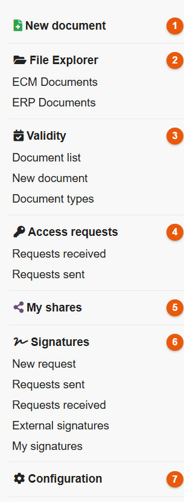
The entries shown depend on your rights and on the features enabled. If the ECM menu does not appear, see the chapter Troubleshooting.
Checking the installation in five minutes
- With the administrator account, create a « Test » folder in the ECM and give the ECM contributors group read and write access to this folder (right-click, Manage permissions, see the chapter Permissions and access).
- With a test account of the ECM contributors group, open , enter « Test » and drag a PDF into it from your computer: it appears with its thumbnail.
- Click the file: the preview panel shows it on the right.
- Right-click the file, then Delete: it goes to the trash, from where you can restore it.
- Log in again with an account that only has read access: the write commands do not appear.
By default, FileManager runs in restrictive mode: a user who is not an administrator only sees a folder if a permission opens it to them. This is why the test starts with a permission on the folder. The mode is set in .
3 The explorer screen
The explorer is the main screen of FileManager. It opens from the ECM top menu, or through . It reads from top to bottom: you choose a source, browse its folders, act on the documents.
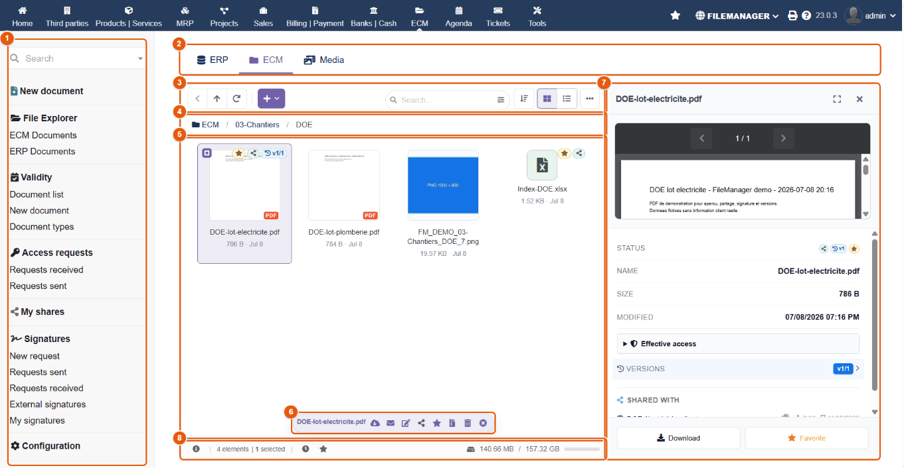
- FileManager left menu (chapter Installation).
- Source tabs: ERP, ECM, Media and the connected storage (chapter Sources).
- Toolbar: navigation, + New button, search, sorting and views.
- Breadcrumb: the path of the folder shown; click an item to go back up to it.
- File area: folders then files of the current folder, as a grid or a list.
- Selection action bar: appears when an item is selected.
- Preview panel: the content and the information of the selected item.
- Status bar: help, number of items, recent files, favorites, disk space.
The toolbar
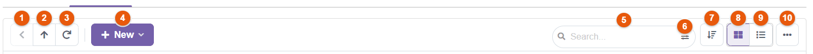
| Marker | Button | Purpose | Shortcut |
|---|---|---|---|
| 1 | Back | Goes back to the folder shown before. | — |
| 2 | Parent folder | Goes up one level. | Backspace |
| 3 | Refresh | Reads the folder again from the server (useful after an action made elsewhere). | F5 |
| 4 | + New | Creation and import menu: upload files, new folder, new document, shortcut, import from a URL or from an external source (chapter Creating). | — |
| 5 | Search... | Filters the folder instantly; Enter starts the full search. | Ctrl+F |
| 6 | Search options | Opens the options and the filters (chapter Searching). | — |
| 7 | Sort | Sorts by name (A to Z), date (newest first), size (largest first) or type. Your choice is remembered. In list view, clicking a column header also sorts, and a second click reverses the order. | — |
| 8 | Grid view | Tiles and thumbnails. | — |
| 9 | List view | One row per item, in columns. | — |
| 10 | More actions | Image gallery, preview panel, trash, help, side menu (see below). | — |
When the window is narrow, some commands move automatically into More actions; their shortcuts keep working.
The « More actions » menu
- Image gallery: scrolls through the images of the folder in full screen (chapter Views and preview).
- Preview panel (Ctrl+I): shows or hides the right-hand panel.
- Trash: the deleted items, to restore or to delete permanently (chapter Deleting and trash).
- Contextual help (F1): the built-in help of the screen.
- Hide/show side menu (Ctrl+B): gives the whole width to the explorer.
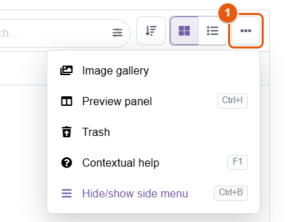
The selection action bar
As soon as an item is selected, a floating bar appears at the bottom of the file area 6. It shows the name of the item and its most common actions: download, send by email, rename, share, add to favorites, properties, delete, deselect. With several items selected, it offers the grouped actions: Move to..., Copy to..., Download as ZIP, Send by email, Create a ZIP archive, Delete, Deselect (chapter Navigating and selecting).
The status bar
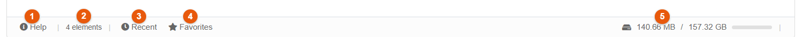
- Help: an introduction to the features of the screen.
- Number of items of the folder, and number of items selected.
- Recent: the last files you opened.
- Favorites: your pinned files and folders.
- Disk space: space used by the documents and capacity of the disk.
Depending on your situation, the status bar also shows a Missing (n) button (required documents absent from the folders you can open, chapter Searching) and access to pending access requests.
The context menu
Right-clicking a file or a folder opens its context menu. It only offers the actions possible for this item, with your rights: a PDF offers the PDF editor and the PDF tools, an image the image editor, an Office document editing with Collabora, a folder customization and linking to a Dolibarr object. The menus are detailed in the chapter Organizing.
The ? key shows the list of keyboard shortcuts; it is also given in the appendix (Keyboard shortcuts).
4 Document sources
The tabs at the top of the explorer are the sources: each one is a different storage space, with its own rules. Clicking a tab shows the root of the source.
| Source | What it contains | Writing |
|---|---|---|
| ERP | The documents filed on Dolibarr records: proposals, orders, invoices, shipments, contracts, projects, products, third parties… | Read-only in the explorer; a document is added from the record of the object. |
| ECM | The free document space of the company: your folders, your filing plan. | Yes, depending on your rights and the permissions of the folder. |
| Media | The Dolibarr media library: images, logos, files of the Website module, usable in document templates and communications. | Yes, depending on your rights. |
| Connected storages | The cloud connections created by the administrator: Nextcloud or ownCloud, Google Drive, Microsoft OneDrive, Amazon S3 and compatible, FTP, SMB/CIFS network share. | Depending on the connection: it can be declared read-only. |
The administrator chooses the visible sources, their order and the one that opens by default (, chapter Sources and storage).
ERP: the documents of Dolibarr records
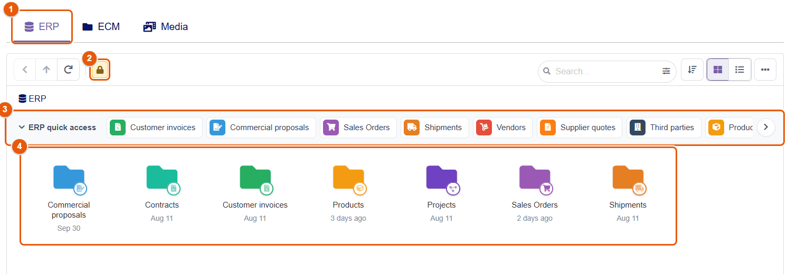
- The ERP tab.
- The padlock badge: the source is read-only; the + New button does not appear.
- ERP quick access: a click opens a type of object directly (Customer invoices, Commercial proposals, Sales Orders, Shipments…). The arrow on the right scrolls the list; the chevron on the left folds it.
- The folders per type of object. Each contains one folder per object, named after its reference (for example
FA2610-0042), which holds its documents.
When you hover over an object folder, a tooltip sums up the object: reference, amount, status and third party. The small icon at the top right of the folder opens the Dolibarr record of the object.
You only see the objects Dolibarr allows you to view: a sales representative limited to their customers only sees their documents.
The ERP source can be browsed but not written from the explorer. To attach a document to a proposal or an invoice, use the record of the object: the Dolibarr Linked files tab, or the FileManager Linked files panel on the record (chapter The document tray on an object record). An ECM folder can also be linked to an object so that its documents are filed there (chapter The documents of a Dolibarr record).
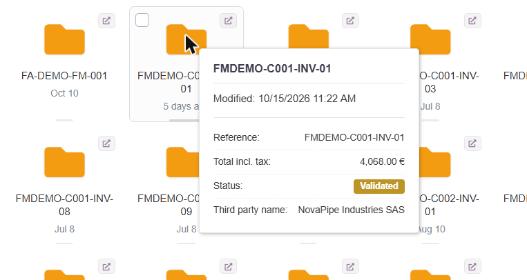
ECM: the document space of the company
The ECM is the space you organize freely: folders per department, per customer, per site… This is where folders, documents and folder trees are created. Every folder and every file can carry its own permissions (chapter Permissions and access). Deleted items go through the trash.
A small padlock on the tile of a folder or a file indicates restricted access: it is not open to everyone. If you have the right to manage permissions, clicking the padlock opens them.
Media: the media library
The Media source is the Dolibarr media library. Its files are used by the pages of the Website module, by document templates and by communications (images inserted in an e-mail, for example).
The media library is made for publishing: do not file confidential documents there. Use the ECM for internal documents.
Connected storages
Every cloud connection created by the administrator appears as an extra tab, with the label the administrator gave it (for example « Agency Nextcloud »). You browse it like the ECM: create, upload, rename, move, share… The Dolibarr rights and the FileManager permissions apply on top of the rights of the remote account.
Not every provider offers the same features: some operations may be missing depending on the service (the configuration gives the details, chapter Sources and storage). A connection declared read-only shows the padlock and hides the write commands.
A connection can also be used as the storage of the ECM itself: you then work in the ECM tab, but the files are kept on the storage chosen by the administrator.
5 Views, preview and document status
Grid or list, preview panel, full screen, gallery: FileManager shows the content of a document without downloading it. The small badges on the tiles sum up its status: shared, versioned, out for signature, close to its expiry date…
Grid or list
The two buttons on the right of the toolbar switch between the Grid view (tiles and thumbnails, ideal for images and PDFs) and the List view (one row per item, for large folders). Your choice is kept from one session to the next. In both views, folders are always shown before files.
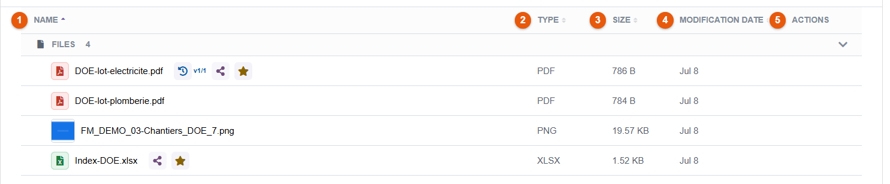
- Name: the arrow shows the sort column and its direction.
- Type: the file extension, or « Folder ».
- Size.
- Modification date.
- Actions: they appear when you hover over the row.
Clicking a header sorts the list by that column; a second click reverses the order. Folders and files form two groups that can be folded (« Files 4 » on the screenshot): the chevron on the right of the group folds it. In list view, the List density button of the toolbar chooses the spacing of the rows: Compact, Normal or Comfortable.
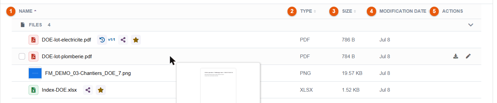
When you hover over a row, a thumbnail of the document appears, with the quick actions on the right: Download (arrow) and Rename (pencil), the latter if you have write access. The checkbox on the left of the name adds the row to the selection.
Sorting
The Sort button offers four orders: Name (A to Z), Date (newest first), Size (largest first) and Type (by extension). The active order is highlighted and marked with an arrow. It is remembered for your next visits.
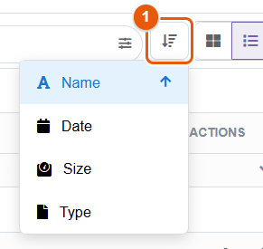
The preview panel
Clicking a file shows it in the right-hand panel. The panel opens and closes through or with Ctrl+I; drag its left border to widen it.
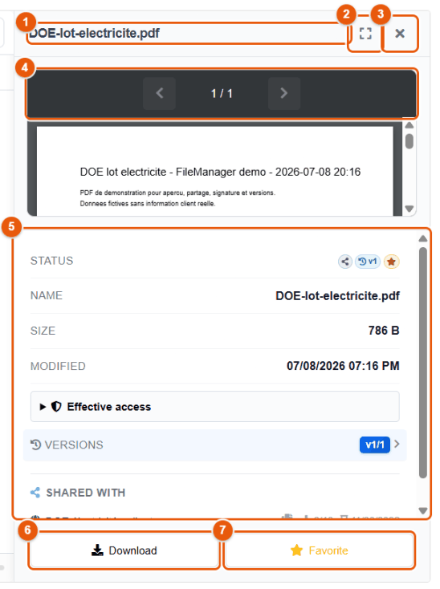
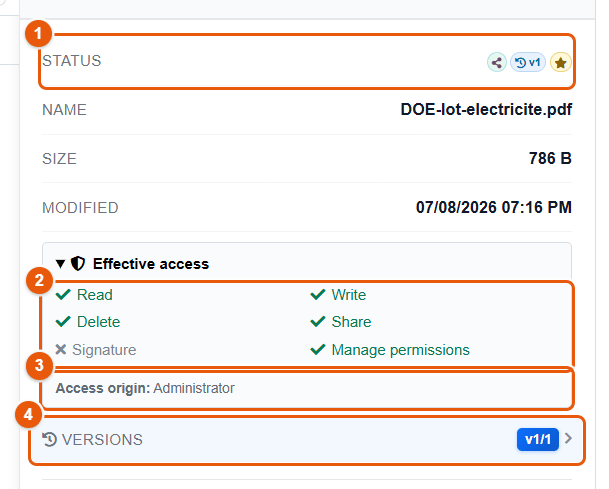
On the left screenshot:
- The name of the file.
- Full screen: opens the document over the whole window.
- Close the panel.
- The viewer: for a PDF, page numbering (current page / number of pages) and scrolling.
- The information: name, size, modification date, status, owner, path, linked Dolibarr object if any.
- Download the file.
- Favorite: adds it to your favorites (or removes it).
On the right screenshot:
- Status: the badges of the document (see below); each one can be clicked.
- Effective access: what you can do with this document — read, write, delete, share, sign, manage permissions. A green tick means allowed, a grey cross refused.
- Access origin: where this access comes from (administrator, permission of the folder, inheritance, share…). Useful to understand why an action is possible or not.
- Versions: the number of versions; a click opens the history (chapter Versions).
What the preview can show
The preview shows in the browser PDFs, images, Word, Excel, PowerPoint and OpenDocument documents (laid out, with their sheets and slides), the older .doc and .ppt formats (converted on the fly), video and audio, text and code (with highlighting), Markdown and HTML pages. The details, format by format, are in the chapter Office documents: preview and online editing. For other formats, the panel shows the information of the file and the Download button.
A double-click on a file opens it in full screen (or, for a folder, enters it). In full screen, the buttons at the top right let you print, download, collapse and close; Esc closes it.
The image gallery
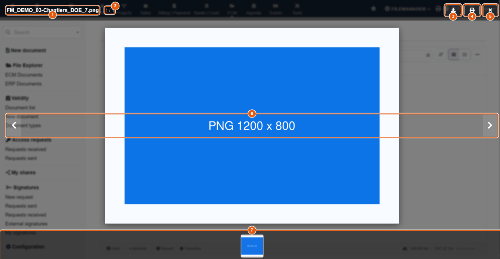
- The name of the image shown.
- Its position in the folder (here 1 / 1).
- Download the image.
- Print the image.
- Close the gallery (or Esc).
- Previous image / Next image (or the arrow keys).
- The strip of thumbnails: a click shows the image.
Status badges
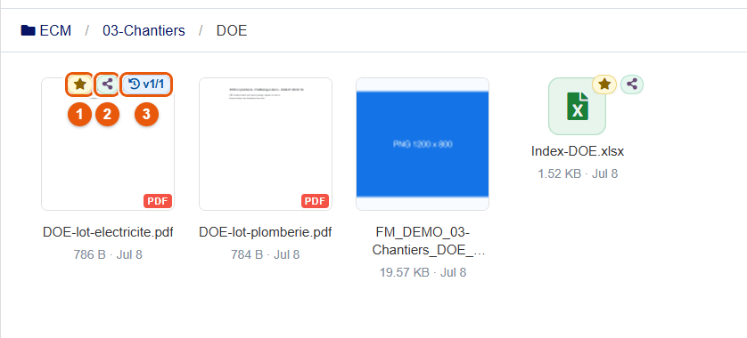
Badges appear on the tile (grid view), next to the name (list view) and in the Status line of the preview panel. Their tooltip gives the details; several of them can be clicked.
| Badge | Meaning | On click |
|---|---|---|
| Clock « v2/3 » | The file has versions: current version / number of versions. | Opens the version history. |
| Padlock | Restricted access: the document is not open to everyone. | Opens its permissions (if you have the right). |
| Share | One or more share links are active. | Opens the sharing of the document. |
| Shield | Stored encrypted on the server (read and written transparently). | — |
| Pencil with a person | Being edited by another user. | — |
| Document with a pen | Signature: pending, document signed or request expired. | — |
| Key | An access request is pending. | — |
| Star | In your favorites. | — |
| Eye | Read-only. | — |
| Hourglass / triangle | Document with a validity date: valid (full hourglass), expiring in less than 30 days (emptying hourglass), expired (red triangle). | Opens the validity record. |
| Link, open folder, outgoing arrow | Shortcut to a file, a folder or a web address; a struck-through link means the target cannot be found. | — |
| Diagram | Folder linked to a Dolibarr object. | — |
The search filters can find documents by status — shared, out for signature, validity alert, versioned… (chapter Searching and finding).
Every day
Navigating, creating, importing, organizing, deleting, finding and sending documents.
- 6Navigating and selecting
- 7Creating and importing
- 8Organizing documents
- 9Deleting and restoring: the trash
- 10Searching and finding
- 11Downloading and sending by email
6 Navigating and selecting
You move around FileManager as in the file explorer of your computer: double-click to enter a folder, breadcrumb to go back up, click to select. The keyboard lets you do everything without a mouse.
Moving around
- Enter a folder: double-click its tile (or Enter when it is selected).
- Go up: clicking an item of the breadcrumb brings you back to that level; the Parent folder button or the Backspace key goes up one level.
- Go back: the Back button opens the folder shown before again.
- Refresh: the button or F5 reads the folder again — useful if a colleague has just put a document in it.
- Change source: click a tab (ERP, ECM, Media…) at the top of the explorer.
The address of the page follows the folder shown: you can add it to the bookmarks of your browser, or copy it to give it to a colleague. They will see the folder if they have access to it.
Selecting
| Gesture | Effect |
|---|---|
| Click | Selects the item and shows it in the preview panel. |
| Ctrl+click | Adds the item to the selection, or removes it. |
| Shift+click | Selects every item between the last one clicked and this one. |
| Checkbox (hover, list view) | Adds the row to the selection. |
| Ctrl+A | Selects the whole folder. |
| Arrow keys (Shift to extend) | Move the selection from one item to the next. |
| Home / End | First / last item of the folder. |
| Esc | Clears the selection. |
The selection action bar
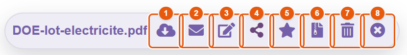
- Download the file.
- Send by email (chapter Sending by email).
- Rename.
- Share: create a share link (chapter Sharing).
- Add to favorites / Remove from favorites.
- Create a ZIP archive containing the item.
- Delete: sends it to the trash.
- Deselect.
For a folder, the bar also offers Customize (color and icon); for a ZIP archive, Extract; in search results, Go to parent folder. The actions shown depend on your rights: with read-only access, only viewing, downloading, email and favorites remain.
With several items selected, the bar shows how many and the grouped actions:
| Action | Effect |
|---|---|
| Move to... | Choose a destination folder, in the same source or another one. |
| Copy to... | Same choice; the originals stay where they are. |
| Download as ZIP | Downloads an archive containing the selection. |
| Send by email | Attaches the selected files to an email (20 MB in total at most). |
| Create a ZIP archive | Creates the archive in the current folder. |
| Delete | Sends the selection to the trash, after confirmation. |
| Deselect | Clears the selection. |
Drag and drop
- From your computer: drag files onto the file area; the area changes color and the upload starts (chapter Creating and importing).
- Inside the explorer: drag one or more selected items onto a folder to move them into it.
Cut, copy, paste
Ctrl+C (copy) or Ctrl+X (cut) on the selection, then, in the destination folder, Ctrl+V (paste). The context menu also offers Copy to... and Move to..., which open a folder picker (chapter Organizing).
Favorites and recent files
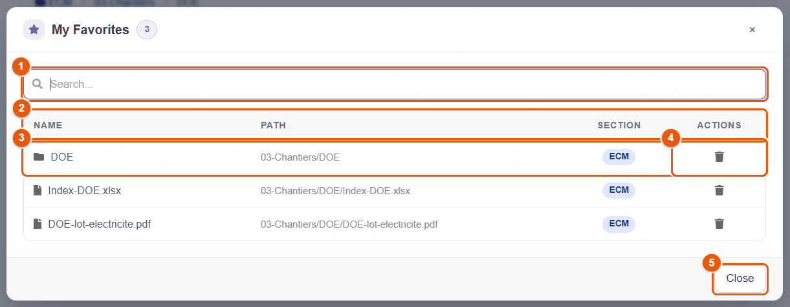
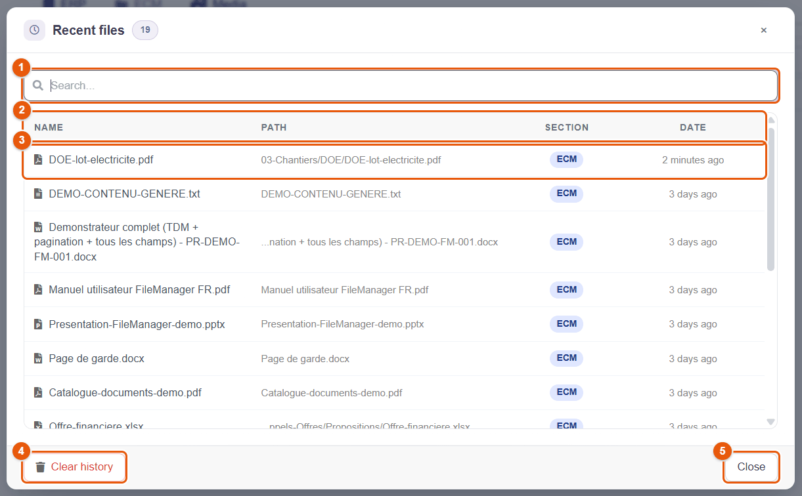
Favorites: pin a file or a folder with the star (action bar, preview panel or context menu Add to favorites). The My Favorites window, opened from the status bar, lists them with their path and their source:
- Search...: filters the list.
- The Name, Path, Section (the source) and Actions columns.
- Clicking a row opens the item in the explorer.
- The trash can removes the item from the favorites (the file itself is not touched).
- Close.
Recent: the Recent files window of the status bar lists the last files you opened, newest first, with the same filter and the same columns; a click opens the file again. Clear history 4 empties the list. Favorites and recent files are personal.
The administrator can disable favorites or recent files ().
7 Creating and importing
Everything that adds an item to the current folder starts from the + New button: uploading files, creating a folder, an Office document or a shortcut, importing from a web address or from another source. The button only appears if you can write in the folder.
The menu has two parts:
Create
- Upload files (Ctrl+U): from your computer.
- New folder (Shift+F).
- New document (Shift+D): a blank Office document or one based on a template.
- Create shortcut: to a web address, a file or a folder.
Import
- Import from URL: downloads a public file straight into the folder.
- Import external files/folders: copies items from another source (ERP, another ECM folder, connected storage).
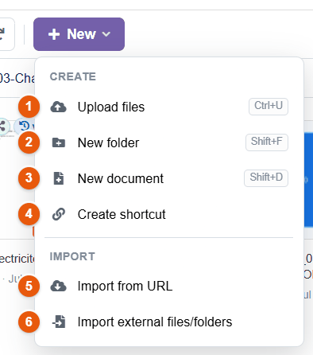
Uploading files from your computer
- Open the destination folder.
- Click + New then Upload files (or Ctrl+U), and choose one or more files.
- A progress bar follows each file; do not close the page before the end.
Quicker: drag the files from the file explorer of your computer onto the file area. It changes color, and the upload starts as soon as you release them. Files are uploaded one after the other.
| Maximum size | Set by the administrator (50 MB by default), within the limit allowed by the server. |
| File types | Only the extensions allowed by the administrator are accepted; executable files and scripts are always refused. |
| Name already taken | The file overwrites nothing: it is saved under a new name, for example report_1.pdf. To replace a document while keeping its history, use versions (chapter Versions). |
| Antivirus | If the Dolibarr antivirus is configured, every file is scanned on upload. |
| Disk space | The upload is refused if the free space of the server falls below the minimum set by the administrator. |
In a folder linked to a Dolibarr object (chapter The documents of a Dolibarr record), the files uploaded are filed in the documents of the object and appear on its record.
Creating a folder
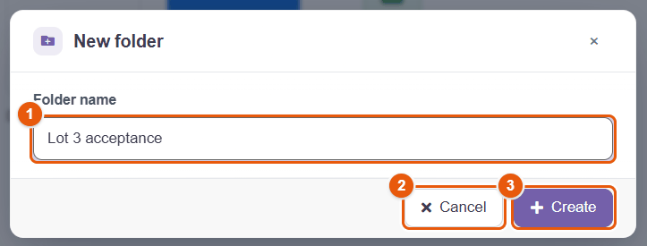
- Click + New then New folder (or Shift+F).
- Type the Folder name 1. Accents, spaces and other alphabets are accepted; the characters reserved by file systems (
/ \ : * ? " < > |) are replaced by an underscore. - Click + Create 3, or Cancel 2.
The new folder inherits the permissions of its parent folder (chapter Permissions and access).
Creating a document
The New document window creates a blank Office file or one based on a template of the library. It opens through + New › New document, with Shift+D, or through New document in the left menu.
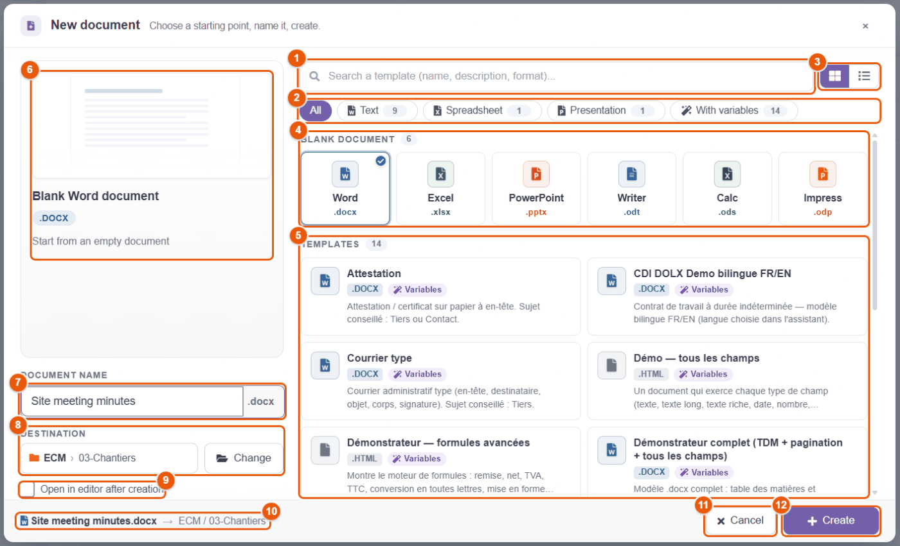
- Search a template by name, description or format.
- Filters: all, text, spreadsheet, presentation, templates with variables.
- Templates shown as tiles or as a list.
- Blank document: Word, Excel, PowerPoint (Microsoft formats) or Writer, Calc, Impress (OpenDocument formats).
- Templates: the template library of your company.
- The preview of the current choice and its description.
- Document name; the extension is added automatically.
- Destination: the folder where the document will be created; Change opens a folder picker.
- Open in editor after creation: opens the document in the Office editor (if Office editing is configured).
- The summary: final name and destination folder.
- Cancel.
- + Create.
From a template with variables
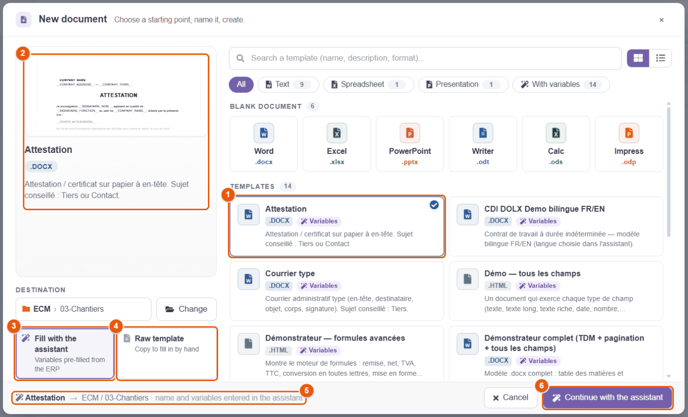
A template marked Variables contains fields to fill in (customer name, address, amount…). Once you have chosen it 1 (its preview appears 2), two modes are offered:
- Fill with the assistant 3: the variables are prefilled from a Dolibarr record (third party, contact, proposal…) that you choose; you complete the other fields in a form, then the document is produced. The button becomes Continue with the assistant 6.
- Raw template 4: a plain copy of the template, to complete by hand.
The summary 5 recalls what is going to be created. The mail-merge assistant is described in the chapter Mail merge: the step-by-step assistant, designing templates in the chapter Writing a mail-merge template.
Creating a shortcut
A shortcut is an item of the folder that points somewhere else: it avoids duplicating a file or hunting for a link.
- Shortcut type: Web link, File or Virtual folder.
- Name shown in the folder.
- URL (web link) or the target chosen in a picker (file, folder).
- Open mode: Open in this tab or Open in a new tab.
- Cancel.
- Create.
A shortcut carries a badge (link, open folder or outgoing arrow). If its target is deleted, a struck-through link badge points it out. Deleting a shortcut never deletes its target.
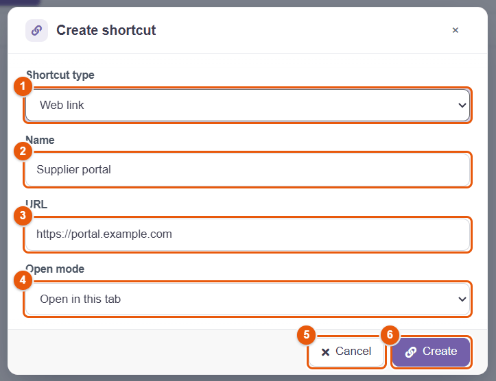
Importing from a URL
- Import from URL: the address of the file (http or https). Local, private or reserved addresses are blocked.
- File name: suggested from the address, can be changed.
- Replace the existing file if the same name already exists: otherwise, a new name is chosen.
- Download authentication: None, Username / password, Bearer token or Custom header, for a protected file.
- Cancel.
- Import.
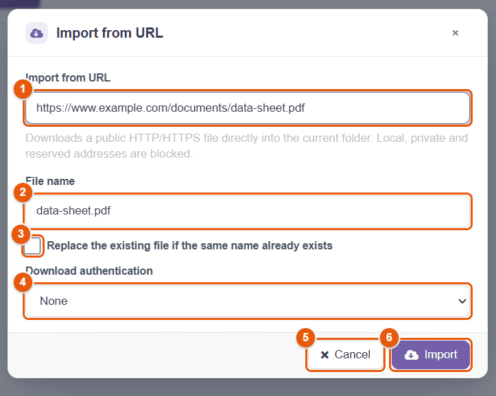
Importing files or folders from another source
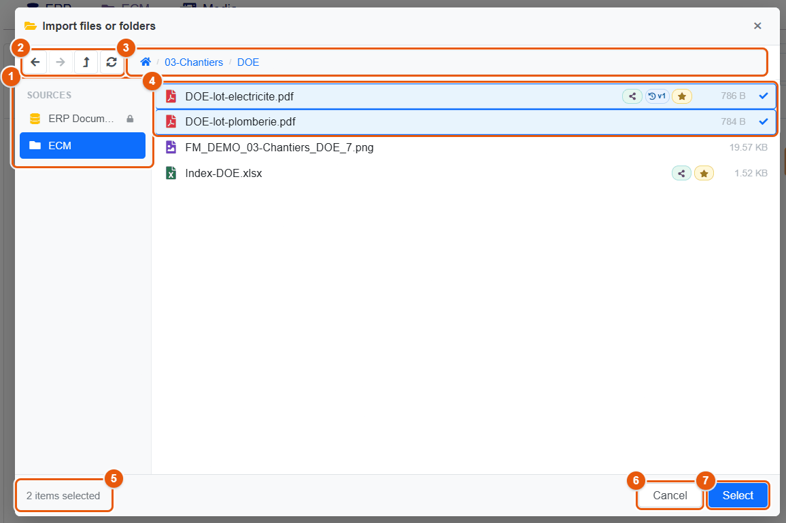
- Sources: ERP documents, ECM space, connected storages.
- Navigation: back, forward, parent folder, refresh.
- The path of the folder browsed; a click goes back up.
- Click the files or folders to import: a tick marks them.
- The number of items selected.
- Cancel.
- Select: copies the items into the current folder. The originals stay where they are.
A notification gives the number of items imported and, if any, those that failed (rights, invalid name…).
8 Organizing documents
Renaming, moving, copying, duplicating, archiving, customizing a folder: everything goes through the context menu (right-click) or the selection action bar. The actions offered depend on the type of item and on your rights.
The context menu of a file
- Preview: opens the document in full screen.
- The tools specific to the type: for a PDF, Edit PDF, PDF tools (submenu) and Signatures (greyed out if signing is not available); for an image, the image editor; for an Office document, Edit with Collabora and Convert to PDF.
- Filing: Move to..., Copy to..., Duplicate, Create a ZIP archive.
- Rename and Delete.
- Distribution: Download, Share document, Send by email, Copy link.
- Add to favorites and Properties.
- Management: Manage permissions, Add to validity documents, File versions.
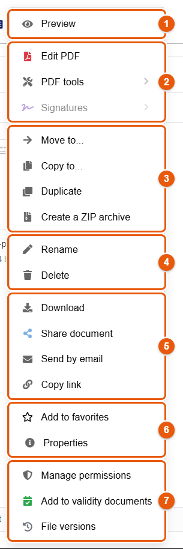
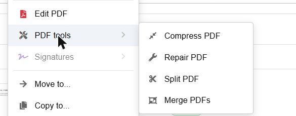
The context menu of a folder
A folder offers Open, the same filing actions, Rename, Delete, Copy link, Add to favorites, Properties, Manage permissions and, with the configuration right, Link to an object... (chapter The documents of a Dolibarr record).
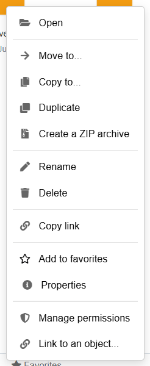
Renaming
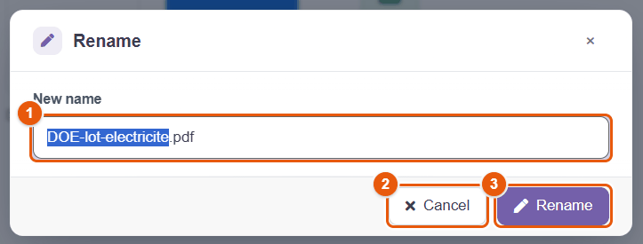
- Right-click the item, Rename (or F2).
- The name is preselected without its extension 1: type the new name straight away.
- Click Rename 3 or Cancel 2.
Permissions, versions, shares, favorites and links to records follow the renamed item.
Moving or copying to another folder
- The item (or the number of items) concerned.
- Destination source: you can move or copy to another source (from the ECM to a connected storage, for example).
- The path browsed; a click goes back up.
- The subfolders: a click enters the folder.
- Cancel.
- Move here (or Copy here): into the folder shown.
The window opens through Move to... or Copy to... (context menu or action bar of a multiple selection). Drag and drop onto a folder and Ctrl+X / Ctrl+V also move items.
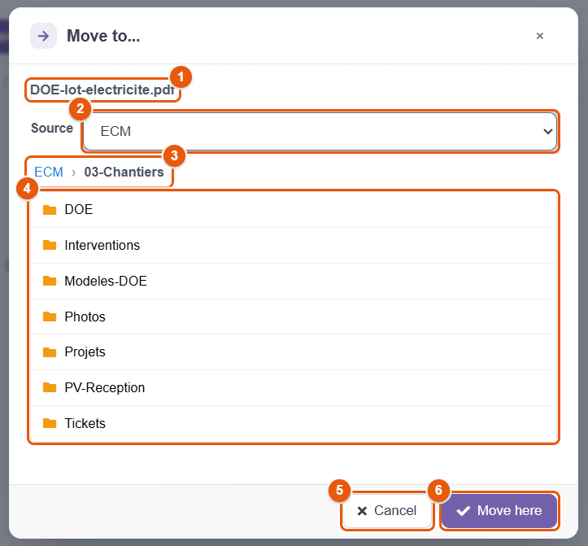
Moving to another folder can change who has access: an item that inherits from its folder takes the permissions of its new folder. Check the permissions after a sensitive move.
Duplicating
Duplicate creates a copy of the item in the same folder, under a different name. It is the quickest way to start from an existing document.
ZIP archives
- Create a ZIP archive: on an item or a selection; FileManager suggests an archive name, which you can change, then creates the
.zipfile in the current folder. - Extract: on an archive (zip, tar, tar.gz, tar.bz2, gz, bz2), extracts its content into a new subfolder of the current folder. Archives that are too large or contain too many items are refused for security reasons.
- Download as ZIP (multiple selection): downloads an archive to your computer without creating it in the folder.
Copying the link
Copy link puts the address of the item in the explorer on the clipboard: for a folder, the folder; for a file, its folder with the file highlighted. Paste it into a message to a colleague: they will open the item if they have access to it. To give a document to someone outside the company, use a share link instead (chapter Sharing).
Properties of a folder
Selecting a folder (or Properties in its menu) shows its summary in the preview panel:
- The number of files and subfolders, the total size and the date of the last change.
- The types of files present and how many of each.
- The name and the path.
- Open the folder.
- Customize its color and icon.
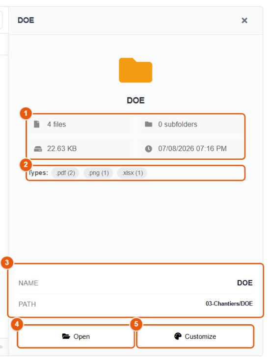
Customizing a folder
A color and an icon make important folders easy to spot.
- Color: twelve shades.
- Icon: twenty-four pictograms (archives, building, photo, accounting, mail, security, team…).
- The preview of the result.
- Global customization: visible to every user; reserved to administrators. Otherwise, the customization is only visible to you.
- Reset: goes back to the default look.
- Cancel.
- Save.
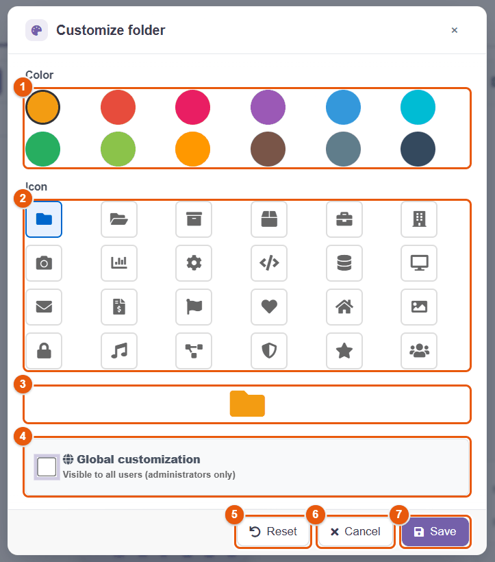
9 Deleting and restoring: the trash
Deleting a document in FileManager does not destroy it straight away: it goes to the trash, from where it can be restored during the retention period (30 days by default).
Deleting
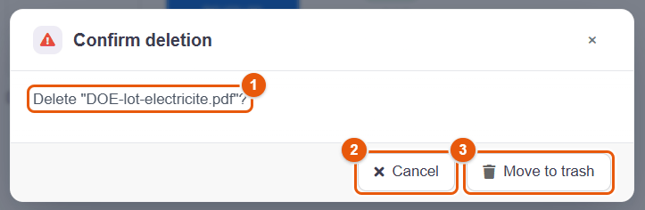
- Select one or more items, then Delete (context menu, action bar, or the Delete key).
- Check the name recalled in the window 1.
- Click Move to trash 3, or Cancel 2.
Deleting a folder sends its whole content to the trash. The versions of a file follow it into the trash and come back with it if it is restored.
You need the « Delete in the file manager » right and the delete permission on the item. If owner protection is enabled, only the creator of a folder (or their manager, or an administrator) can delete it.
Opening the trash
opens the trash of the source shown.
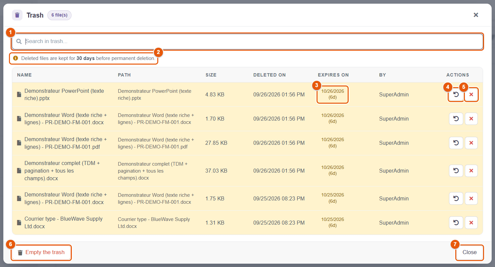
- Search in trash...
- The retention period applied.
- Expires on: the date of permanent deletion and the number of days left. The badge turns orange then red as the date gets closer.
- Restore: puts the item back where it was.
- Delete permanently: deletes the item for good, after confirmation.
- Empty the trash: permanently deletes every item, after confirmation.
- Close.
The columns also give the original path, the size, the deletion date and the person who deleted the item.
Who sees what in the trash
- Everyone sees what they deleted themselves.
- A manager also sees what the people they manage (their team in Dolibarr) deleted, for the items they shared with others: a common document deleted by mistake can thus be recovered without the administrator.
- An administrator sees everything.
On a very large installation, the window shows the most recently deleted items; older ones stay in the trash until they expire.
Restoring
- Open the trash and find the item (the search field filters the list).
- Click the Restore button of its row.
- The item comes back to its original folder, with its versions. If the folder no longer exists, it is created again.
If a file with the same name has been created in the same place in the meantime, the restored file does not overwrite it: it gets a name with the suffix _restored_ followed by a number.
Permanent deletion
Delete permanently and Empty the trash cannot be undone: the files and their versions are erased from the server.
A file with a protected version (« Mark as important », chapter Document versions) cannot be permanently deleted: « This item has protected versions: it cannot be permanently deleted. Remove their protection first. » The same goes for a folder containing such a file. Empty the trash deletes everything else and says what it kept (« 1 item(s) kept: protected versions. »); the automatic clean-up does the same.
A scheduled job deletes every day the items whose retention period is over, and can warn the administrator by email (address set in ).
A file deleted from a connected storage (Nextcloud, Google Drive…) also goes through the FileManager trash: a copy is kept there, and restoring it sends it back to the original storage.
The administrator can disable the trash (): deletion then becomes immediate and permanent, after confirmation.
10 Searching and finding
The Search... field of the toolbar does two things: it filters the folder shown instantly while you type, and starts a real search when you press Enter. Its options add filters that find documents without any keyword: every invoice of a customer, every document out for signature…
Filtering the folder shown
From the first letter typed, the folder only shows the items whose name contains the text. Nothing is sent to the server: it is instant. A banner above the results says so and offers to start the full search. Esc or the cross of the field clears the filter.
Searching by keyword
Enter starts the search in file names — and in their content if the option is ticked — according to the options chosen. The results are grouped by source; each group stops at the first 50 results and says so. A slow connected storage is interrupted after a few seconds: the group then shows « partial results » and a See all results link.
Options and filters
- Fuzzy search: tolerates missing letters and small typing mistakes (see the recipes at the end of the chapter).
- Search in content: also searches the text inside the documents (see below).
- Include subfolders: extends the search below the folder shown.
- Unified sources: searches the ECM, the ERP documents and the connected storages at once.
- Record: a third party, a project, an order, a product…; the documents that belong to it and, with Include linked records, those of the records Dolibarr links to it.
- Document type: a kind of Dolibarr document (customer invoices, proposals…) or a standard folder of the ECM.
- Date: File date or Document date, between two days.
- Document state: Shared, Signature workflow, Validity alert, Being edited, Favorites, Versioned, Read only, Restricted access.
- File type: folders, PDF, Office documents, images, audio, video, archives, text.
- Reset: clears every filter.
- Apply: starts the search (like Enter).
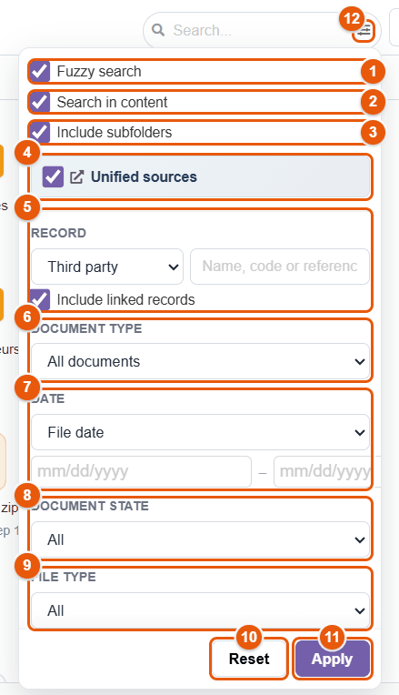
Finding without a keyword: the filters
Filters are enough: a keyword is not needed. Choose them, then click Apply. A keyword typed as well narrows the result.
| Filter | What it gives |
|---|---|
| Record | Choose the record type (third party, project, contact, commercial proposal, order, invoice, product, lot, ticket, manufacturing order, shipment…: only the types whose module is enabled and that you can read are offered), type at least two characters (name, code or reference) and pick the record in the list. Only the records you can open are offered. Result: the documents of the record and the ECM folders created for it by the folder tree templates; for a third party or a project, also the documents of all its business documents (proposals, orders, invoices, contracts, shipments, interventions, supplier documents, projects of the third party…). With Include linked records (ticked by default): also the documents of the records Dolibarr links to this one (the « Linked objects » block of its record), both ways and one level deep — an order brings its proposal, its invoices and its shipments. A linked record you cannot open is left out. |
| Document type | A Dolibarr document (Customer invoices, Commercial proposals, Orders…) or a standard folder defined in the folder tree templates — for example « Signed terms of sale », across every customer. |
| Date | Document date: the date of the proposal, the invoice… in Dolibarr (for an ECM document, the date of the file). File date: its modification date. |
| Document state | The documents in that state (see the badges in the chapter Views and preview). |
| File type | The files of that family. |
Filters combine: a customer in Record, Customer invoices in Document type and a period in Document date give the invoices of that customer over the period. Without a record or a document type, the filters browse the folder shown (and its subfolders if the option is ticked), or every source if Unified sources is ticked.
Example: every document of a customer
- Open the search options.
- In Record, leave Third party and type the beginning of the customer's name.
- Pick the customer in the list.
- Click Apply.
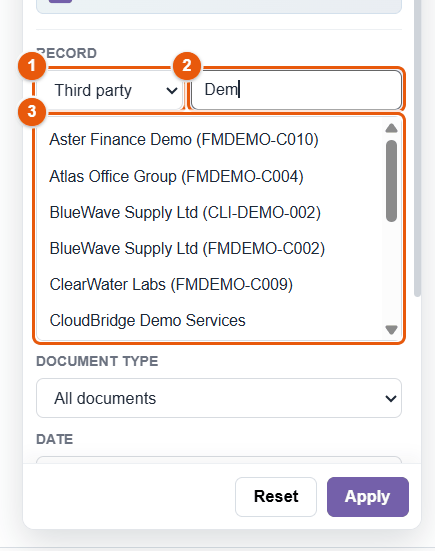
Reading the results
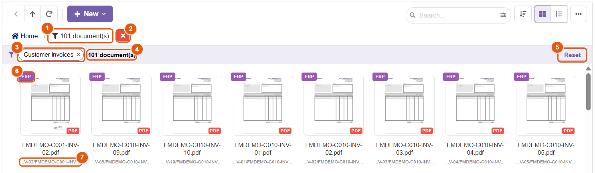
- The breadcrumb shows that you are looking at a search result, and how many documents it holds.
- The red cross leaves the search and shows the folder again.
- Every active filter is a chip: its cross removes it.
- The number of documents found.
- Reset: clears every filter.
- The source of each document (ERP, ECM, connected storage).
- Its path; the Go to parent folder action opens its folder.
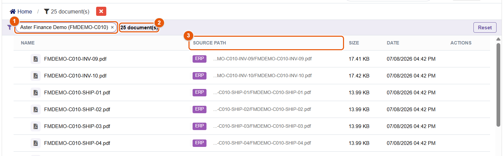
Results are sorted from newest to oldest by the date chosen and arrive in pages of 100.
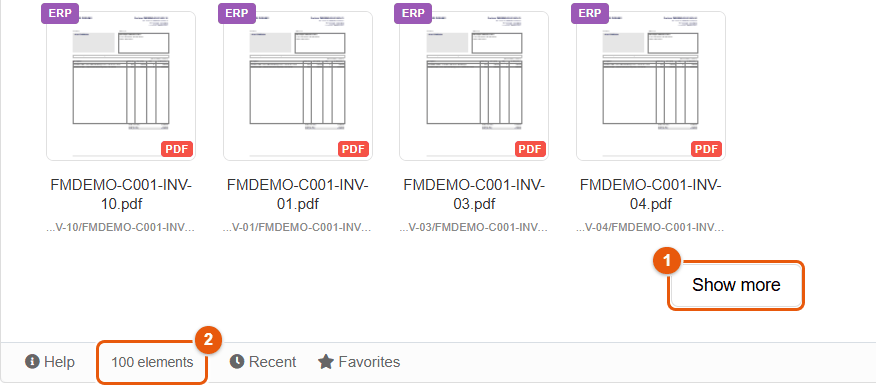
When a search takes too long, or a connected storage is too slow, the results bar says so: « Search stopped before the end (too many items to browse): refine the filters to see everything. », or « Not fully browsed (slow source) » followed by the name of the source. Refine the filters then.
Searching the content of documents
When ticked, the Search in content option finds a document by a sentence it contains. Text files (txt, csv, md, json, xml, html, code) are read directly. PDFs and Office documents (Word, Excel, PowerPoint, OpenDocument) are searched in an index: their text is extracted once, in advance, by a scheduled job.
- The search finds the documents that contain all the words typed, ignoring accents and capital letters.
- An excerpt of the passage found appears below the name of the document.
- If files in the scope are not indexed yet, the results bar says so (« … file(s) here not indexed yet: their content was not searched »).
- If the administrator has not enabled indexing, only the content of text files is searched, and this is pointed out.
Content indexing is enabled in (chapter Explorer). Encrypted files are not indexed.
When can a document be found?
| What is searched | Available |
|---|---|
| The name of the file or the folder | Immediately, in every source (ECM, ERP documents, connected storages). |
| The content of a text file (txt, csv, md, json, xml, html, code) | Immediately: the file is read at the time of the search. |
| The content of a PDF or an Office document uploaded into FileManager | As soon as it is uploaded: the file is indexed when it arrives. |
| The content of documents already present, or added another way (generated by Dolibarr, synchronization) | After the daily scheduled job « FileManager content re-indexing » has run, or after Re-index now by the administrator. |
| A scanned document (an image inside a PDF) | Never by its content as long as it has no text: run OCR on it in the PDF editor (chapter PDF tools), and it becomes searchable. |
| An encrypted file, or one larger than the limit set by the administrator (10 MB by default) | By its name only. |
| The content of the files of a connected storage (Nextcloud, Google Drive, SMB…) | By their name only: the index covers the ECM and the ERP documents. |
From the Dolibarr search
The Search field at the top of the Dolibarr left menu offers, below third parties, invoices and other records, the Files (ECM) entry. Type the word, pick this entry: the explorer opens with the search already started on that word.
Opening in the ECM from a record
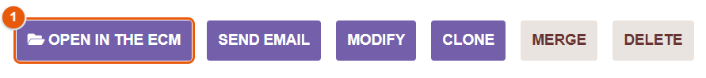
On the Dolibarr records (third party, project, order, invoice, product, ticket, manufacturing order…), the Open in the ECM button opens the explorer directly on the documents of the record and of its linked records: the Record filter is already applied.
Missing documents
When the administrator has defined expected documents in the folder tree templates (for example « Company registration » and « Insurance certificate » for every supplier), FileManager spots those that are missing. The status bar then shows a Missing (n) button: it opens the list of the missing documents of the records you can open.
| Column | Content |
|---|---|
| Record | The record concerned (a third party, a project, or any record whose folder tree expects documents); Open the record opens its Dolibarr record. |
| Document | The expected document, Mandatory or Recommended. |
| Folder | The ECM folder where it is expected. |
| Since | Since when it has been missing. |
| Reminders | The number of reminders already sent. |
The Record or document... field filters the list, and Expected document limits it to one type of document. The Upload button opens the expected folder so you can upload the document there: once uploaded, it no longer counts as missing. When a search is about a record, its missing documents appear above the results.
Search recipes
| I am looking for… | How |
|---|---|
| A contract of which I know a clause | Type a few words of the clause, tick Search in content and Unified sources, Enter. The excerpt shown gives the passage. |
| The whole file of an order (proposal, invoices, shipments) | Record: Order, then the order; Include linked records ticked; Apply. Or, from the order's record: Open in the ECM. |
| Every invoice of a customer over a quarter | Record: the customer; Document type: Customer invoices; Document date: from the first to the last day of the quarter; Apply. |
| The documents sent for signature and not signed yet | Document state: Signature workflow, with Unified sources. |
| The documents whose validity is about to expire | Document state: Validity alert; or the list of the Validity menu (chapter Documents with a validity date). |
| What was changed last week in a site folder | Open the folder, Include subfolders, File date over the week. |
| The photos of a site | Open the folder of the site, File type: Images, Include subfolders; then Image gallery to scroll through them. |
| A file whose name I misspelled | Tick Fuzzy search: the letters typed are searched in order, even when apart, and a very close name is accepted. « invice » or « contrct » find « invoice » and « contract ». |
| The documents missing from the folder of a supplier | The Missing button of the status bar, filtered on the supplier. |
11 Downloading and sending by email
A document is downloaded in one click, alone or with others in a ZIP archive. To send it to someone, Send by email prepares a Dolibarr email with the files already attached: no need to download them and attach them again by hand.
Downloading a file
Several paths lead to the same download:
- the context menu of the file (right-click), Download entry;
- the action bar that appears when a file is selected;
- the Download button of the preview panel and of the full-screen preview;
- in list view, the arrow that appears when you hover over the row.
The file lands in the download folder of your browser, under its name. A few special cases:
- a file encrypted by FileManager is downloaded decrypted, under its real name, if you have the right to open it (chapter Security and access);
- a file of a connected storage (Nextcloud, S3, network share…) is read on the fly from that storage;
- if the administrator has enabled the log of reads, the download is written to the history (chapter Maintenance).
Downloading several files or a folder (ZIP)
- Select the files and folders you want (Ctrl + click, or checkboxes in list view), or a single folder.
- Choose Download as ZIP in the action bar or the context menu.
- FileManager prepares the archive: folders keep their tree inside it. Only the files you are allowed to download go into it; if none is, the message « No files to download » appears.
The administrator can give someone the right to read a document without the right to download it (permission rules, chapter Permissions and access requests). They then view it on screen (preview, viewer), but the download buttons, sending by email and the ZIP are refused: « You do not have permission to download this file ».
Sending by email
- Select one or more files, up to 100, in the explorer, in search results, in the tray of a record or in the table of its documents.
- Choose Send by email in the context menu or the action bar.
- FileManager checks every item:
- folders and shortcuts are not sent: they are left out, and a message says so (« 2 item(s) left out: folders and shortcuts cannot be sent »); to send a folder, download it as a ZIP or share it;
- you must have the right to download every file;
- the total size must not exceed the ceiling set by the administrator (20 MB by default, the usual limit of mail servers). Above it, sending is refused before the message even opens: remove some files, or send a share link (see below).
- The Dolibarr email form opens with the files already attached. Complete it, then click Send email.
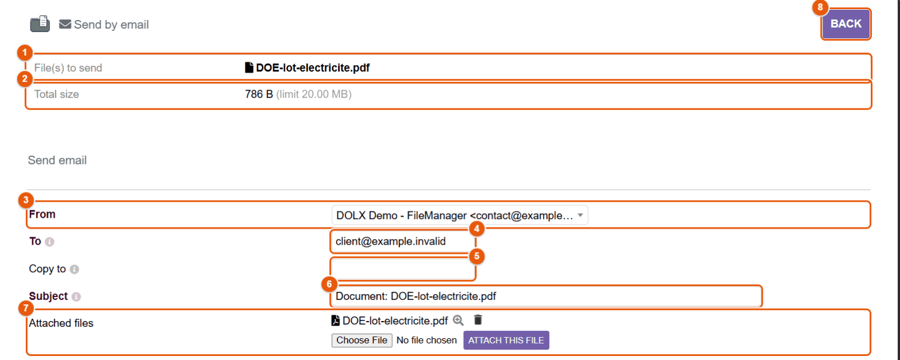
- File(s) to send.
- Total size and the ceiling allowed.
- From: the sender, chosen among the addresses allowed by Dolibarr (yours, the company's…).
- To: one or more recipients, separated by commas.
- Copy to.
- Subject, suggested from the name of the file: change it freely.
- Attached files: the magnifying glass previews, the trash can removes a file; Attach this file adds a file from your computer.
- Back: returns to the explorer without sending.
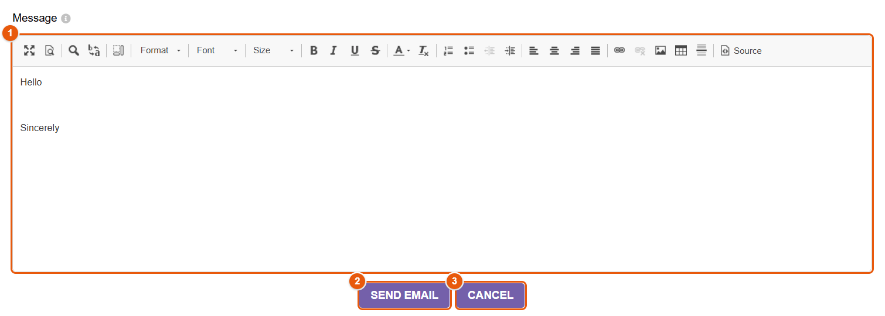
- Message: rich text editor (formatting, links, images, tables). The email template chosen by the administrator prefills the text; your Dolibarr signature is added when sending.
- Send email.
- Cancel.
What the recipient receives
- Every file is attached under its name; two files with the same name coming from different folders are renamed (« Quote.pdf », « Quote (2).pdf ») so that they do not overwrite each other.
- An encrypted file is attached decrypted, under its real name: the recipient needs no special tool.
- A file of a connected storage is first copied to the Dolibarr server to be attached; this temporary copy is erased after sending, and after 48 hours at the latest. A Google document is attached in Office format.
From a Dolibarr record
From the tray or the table of documents of a record, the form opens in a separate window so that you do not leave the record. If the CommunicationHub module is installed, its compose window opens instead, with the same files attached.
Above the ceiling, rather than attaching the files, create a share link (chapter Sharing) and send the link: the recipient downloads the document whenever they want, the link can expire, be protected by a password, and you know whether it has been opened.
The ceiling is set in , setting Maximum size of an e-mail's attachments (MB): from 1 to 100 MB, or 0 for no ceiling. Check the limit of your mail server before raising it: an email refused by the server is only refused after sending.
Working on documents
PDF, image and Office editors, versions, documents with a validity date, signatures, templates and mail merge, PDF bundles, documents of Dolibarr records, manufacturing and traceability.
- 12The PDF editor
- 13PDF tools
- 14The image editor
- 15Office documents: preview and online editing
- 16Document versions
- 17Documents with a validity date
- 18Electronic signatures
- 19Mail merge: the step-by-step assistant
- 20Writing a mail-merge template
- 21Fields, formulas and Dolibarr data
- 22Mail merge: step-by-step examples
- 23PDF bundles
- 24The document tray on an object record
- 25The documents of a Dolibarr record
- 26The automatic viewer of lists
- 27Manufacturing, lots and traceability file
12 The PDF editor
The PDF editor works on a PDF directly in the browser: annotate, add text and images, sign, hide information, rearrange pages, merge, compress, protect. It opens in a new window; the explorer stays open behind it.
Opening a PDF in the editor
- Right-click a PDF, then Edit PDF.
- The editor opens in a new browser window, on the first page. If nothing opens, allow pop-up windows for the Dolibarr address.
Word and Excel documents and images can also be opened in it: they are first converted to PDF (converting Office documents requires Stirling PDF, configured by the administrator).
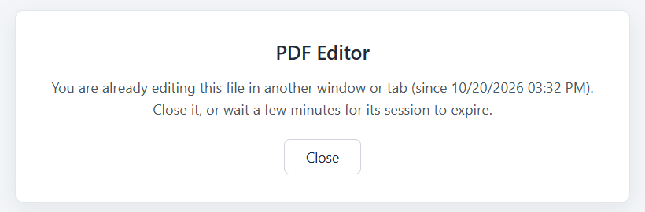
A document can only be changed by one person at a time. If it is already open in an editor (by a colleague, or by you in another window), the editor says so: close the other editor or wait for its session to expire. While it is being edited, the « Being edited by another user » badge appears on the document for the others.
The editor screen
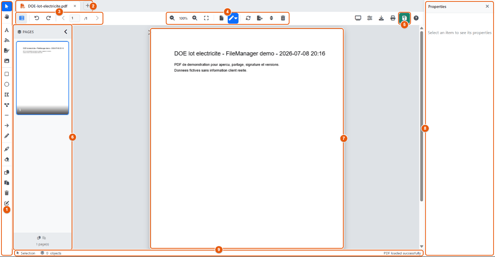
- The toolbar: selection, text, signature, shapes, highlighter, redaction…
- The tabs: one per open document; + opens another one (to merge, or to move pages from one to the other).
- Show/Hide pages, Undo, Redo, previous / next page and page number.
- Zoom, Fit to page, Display mode, Advanced tools, Rotation, Extract, Rearrange.
- Save (Ctrl+S). On its left: Presentation (F5), Properties, Download to computer, Print (Ctrl+P); on its right, Contextual help (F1).
- The pages as thumbnails: a click goes to the page.
- The page shown: this is where you draw, write and place items.
- Properties: the settings of the selected item (position, size, colors, font…).
- The status bar: active tool, number of objects added, state of the document.
The tools
| Tool (shortcut) | Use |
|---|---|
| Selection (V) | Select, move and resize the items added. |
| Hand (H) | Drag the page to move around. |
| Text (T) | Add text: font, size, bold, italic, underline, color. |
| Signature (S) | Apply your signature: draw it, type it (handwriting font), import an image or take it from your signature library. |
| Request a signature | Send this document to someone for signature (chapter Signatures). |
| Image (I) | Insert a PNG or JPG image (logo, stamp, plan). |
| Rectangle (R), Circle (C), Polygon (P), Polyline (L), Line, Arrow (A) | Shapes: outline, fill, thickness, color. |
| Freehand drawing (D) | Draw freehand. |
| Highlight (G) | Semi-transparent highlighting. |
| Redact (M) | Cover an area with an opaque rectangle (redaction): a sensitive piece of information no longer shows. |
| Copy (Ctrl+C), Paste (Ctrl+V), Delete selection (Del) | On the items added. |
| Form mode (F) | Fill in the fields of a PDF form (see Filling in a PDF form). |
So that hidden information can no longer be read or copied, flatten the document before saving it (): the items added are then merged into the page. Keep a version of the original if you need it.
Working on pages
The Pages panel shows the thumbnails. Select one or more pages (Ctrl+click) to rotate, delete, copy or extract them into a new document. Rearrange shows every page so you can put them back in order by drag and drop. With several documents open in tabs, a page can be dragged from one document to another.
Filling in a PDF form
Many PDFs you receive are forms: account opening form, approval request, administrative declaration, service report. Their areas to fill in are real fields (these are called « AcroForm » forms). The editor recognizes them when the document opens: a message says « Form detected: 8 fields » and the Form mode button appears in the left toolbar, with the number of fields in its tooltip.
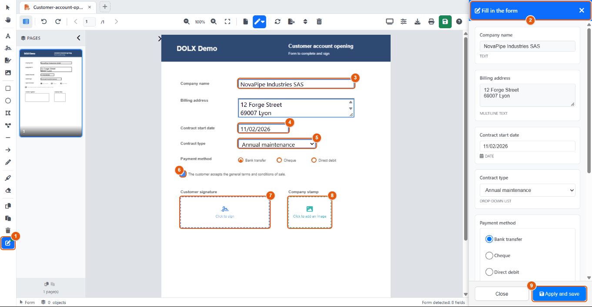
- The Form mode button (or the F key) opens the filling assistant. It only appears if the document contains fields.
- The Fill in the form panel lists every field of the document, in order, each with the input suited to its type and the type written below it (Text, Multiline text, Date, Drop-down list…). The label is the alternate name that the author of the form gave to the field (its tooltip, set in the properties of the field): « Contract start date ». A field without an alternate name shows its technical name made readable: « Company_name » becomes « Company name », « AcceptTerms » becomes « Accept Terms ».
- The fields are also placed on the page, exactly where they belong: you can type in the panel or directly on the document, both stay in step.
- A field recognized as a date (its name contains « date », « day », « month », « end », « birth »…) gets a calendar, prefilled with the date already written in the PDF. The date chosen is written in the format of your language, with two-digit day and month (11/02/2026 in US English). If the field contains text that is not a date (« to be decided »), it stays a text field: nothing is erased.
- Drop-down lists and radio buttons offer the choices planned by the author of the form.
- The check boxes.
- A signature field (name containing « signature », « initials », or a large rectangular area) shows Click to sign: the signature window opens; draw your signature, import its image or type your name, and it is placed to scale in the frame.
- An image field (name containing « logo », « photo », « seal », « stamp »…) shows Click to add an image: choose the image in the ECM (the logo, the scan of the company seal); it is fitted to the frame.
- Apply and save writes the values into the fields of the PDF and saves the document straight away (a version of the previous state is kept when versions are enabled). Close (or the cross of the header) closes the panel without writing anything. While the panel is open, the page narrows so that every button of the toolbar stays visible.
If you design your forms yourself (with LibreOffice or Acrobat, for example), give every field a clear tooltip in its properties: it is used as the label. Export to PDF keeping the form fields. And choose meaningful technical names: a name containing « date », « signature » or « seal » gives the field a calendar, a signature area or an image area.
The saved document is still a form: its fields keep their values and can still be changed, by you or by the person you send it to, in any PDF reader. Signatures and images, however, are embedded in the page.
To freeze a form for good before sending it (nobody can change a value any more), use on a copy (chapter PDF tools).
A form that was scanned, or printed then scanned, has no fields: the Form mode button does not appear. Fill it in with the Text tool (T) and sign with the Signature tool (S).
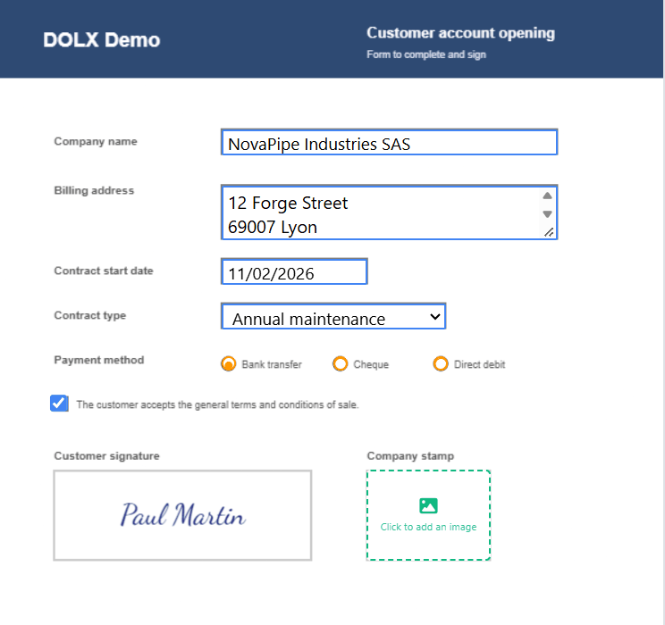
Advanced tools
The Advanced tools button (magic wand) gathers the watermark, the stamp, the document properties (metadata), flattening, merging and splitting, compression, OCR, repair, password, permissions and signing with a certificate. They are described one by one in the chapter PDF tools.
Saving
Save (Ctrl+S) replaces the file where it is. If versions are enabled, FileManager first keeps the previous state as a version (« Automatic version before editor overwrite »): you can go back (chapter Versions). A document produced by a merge or a split asks you for a folder and a name.
Download to computer gets the changed document without touching the FileManager file. Closing the window without saving discards the changes; the browser asks for confirmation if there are any left.
PDF tools from the explorer
Without opening the editor, the PDF tools submenu of the context menu compresses, repairs, splits or merges PDFs, and Convert to PDF turns an Office document or an image into a PDF: see the chapter PDF tools.
13 PDF tools
Compressing a scan that is too heavy, repairing a PDF that no longer opens, assembling the quote, the purchase order and the invoice into a single file, making a scan searchable, adding a watermark or a « PAID » stamp, protecting a document with a password, signing it with a certificate: FileManager does all this without any software installed on the computer. This chapter describes each tool, where to find it and what it produces.
Two ways to reach them
| From | What you find there |
|---|---|
| The context menu of a PDF (explorer, tray, linked files of a record) | PDF tools submenu: Compress PDF, Repair PDF, Split PDF, Merge PDF. The processing runs on the server, without opening the document. On an Office document or an image, the Convert to PDF entry. |
| The Advanced tools menu (magic wand) of the PDF editor | Watermark, stamp, metadata, flattening, merging and splitting, compression, OCR, repair, password, permissions, signing with a certificate. The result appears in the editor; it only replaces the file when you click Save. |
The tools that change a file require write access to that file; a read-only user does not see them.
The engines: Stirling PDF and Ghostscript
Heavy processing is handed over to an engine installed on the server, chosen by the administrator (, chapter Office & PDF):
- Stirling PDF, a complete PDF service. When it is configured and reachable, it is used first.
- Ghostscript, a program present on most Linux servers, used as a fallback when Stirling PDF is not available.
| Tool | With Stirling PDF | With Ghostscript only |
|---|---|---|
| Compress, Repair, Split, Merge (context menu) | Yes | Yes |
| Convert to PDF (Office, text, HTML, images) | Yes | No |
| Editor: Watermark, Stamp, Metadata, Flatten, Merge, Split, pages | Always available: they work in the browser. | |
| Editor: Compress, OCR, Repair | Yes | Missing from the menu |
| Editor: Password, Permissions, Sign (P12) | Yes | Missing from the menu |
With no engine at all, the tools of the context menu answer « No PDF engine is available »: contact the administrator.
Compressing a PDF
- Right-click the PDF, .
- Confirm: « Do you want to compress file …? The original file will be replaced. »
- A message gives the saving obtained, for example « PDF compressed successfully (62% saved) ».
Compression resamples the images of the document to a resolution suited to the screen and to office printing (medium level). It works wonders on scans and on PDFs full of photos; on a PDF made of text, the saving is small.
Compression and repair write the result in place of the original file. On a plan, a site photo or a document meant for the printer, keep a copy first (Copy, or a download): the loss of image detail cannot be undone.
Repairing a PDF
rebuilds the structure of a damaged PDF: interrupted download, file produced by an old scanner, PDF that the preview refuses to show. The repaired file replaces the original. If the repair fails, the file is too damaged: ask whoever sent it for a new copy.
Splitting a PDF
creates one file per page, next to the original, which stays intact. The files are numbered after the original name: statement_part1.pdf, statement_part2.pdf… (statement_page1.pdf… when Ghostscript does the processing). To keep only some pages, or cut into several blocks, use the editor instead (Splitting in the editor).
Merging PDFs
Merging assembles several PDFs into one, in the order you choose. From the tray of a record, it also offers the PDFs of the linked records: it is the quickest way to put together the complete file of a deal (signed quote, purchase order, delivery note, invoice).
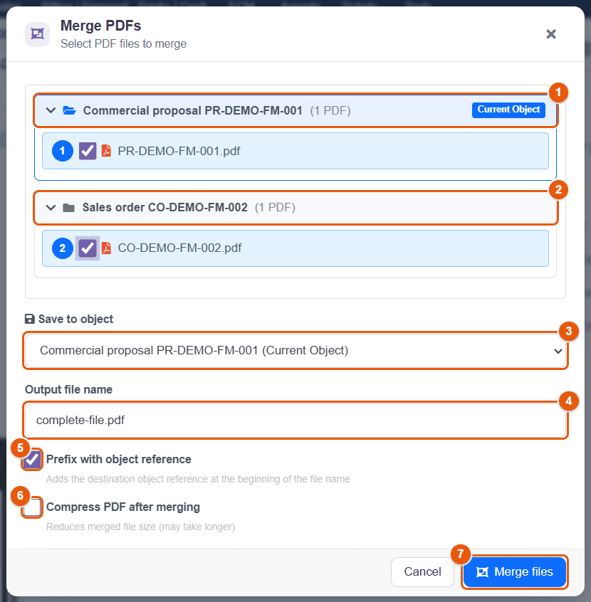
- The PDFs of the current record (Current Object badge). The file you right-clicked is already ticked and carries the number 1.
- The PDFs of a linked record, grouped by record; click the header to unfold the group. Every file ticked gets the next number: the order of the numbers is the order of the pages in the merged PDF. Unticking a file renumbers the others.
- Save to object: the record that will receive the merged PDF, the current record or one of the linked records.
- Output file name (« merged.pdf » by default); the .pdf extension is added if you forget it.
- Prefix with object reference: the name starts with the reference of the destination record, for example
PR-DEMO-FM-001_complete-file.pdf. - Compress PDF after merging: reduces the size of the result (useful before sending by email). Your choice is remembered for the next time.
- Merge files creates the file; Cancel closes the window without creating anything.
- At least two PDFs must be ticked.
- The original files are not changed.
- If a file already has the chosen name, the new one gets a suffix:
complete-file_1.pdf. - In the explorer, the window lists the PDFs of the folder: the files selected before the right-click come first, in the order of your selection, and the merged PDF is created in the current folder.
Converting to PDF
On a Word, Excel, PowerPoint, OpenDocument, RTF, text or HTML document, or on an image, Convert to PDF produces its PDF version (Stirling PDF required):
- in the explorer, the PDF is created next to the document, under the same name with the .pdf extension, and selected; the original document stays intact. If a PDF with that name already exists, the conversion stops (« A PDF file with this name already exists »): rename one of the two;
- from the tray or a record, the converted PDF opens in the PDF editor; Save then asks you for the folder and the name of the PDF, without touching the original document.
The advanced tools of the editor
In the PDF editor, the Advanced tools button (magic wand) opens a menu in columns:
- Editing: Watermark, Stamp, Metadata, Flatten.
- Multi-PDF: Merge, Split.
- Signature: Request a signature (chapter Signatures).
- Processing: Compress, OCR, Repair.
- Security: Password, Permissions, Sign (P12).
The Processing and Security columns only appear if Stirling PDF is configured. Everything these tools do stays in the editor until Save; closing the editor without saving discards the result.
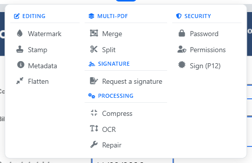
Watermark
A watermark is a text or an image laid transparently over the pages: « CONFIDENTIAL », « COPY », the company logo.
| Setting | Effect |
|---|---|
| Watermark type | Text or Image (a file from your computer). |
| Text, Size, Rotation, Color | For a text: size 12 to 200 (48 by default), rotation from −180° to 180° (−45° by default, a rising diagonal), color (light grey by default). |
| Opacity % | From 5 to 100% (30% by default): the lower it is, the more readable the text of the document stays. |
| Position | Center, Repeat (tiled) over the whole page, or one of the four corners. |
| Apply to | All pages, the current page, the first page, odd or even pages. |
Apply places the watermark; then save the document.
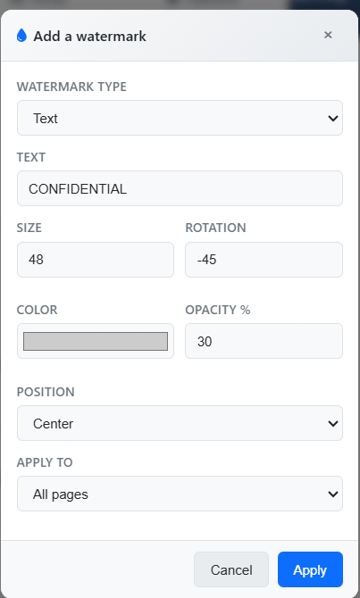
Stamp
The stamp imitates an inked, slanted rubber stamp in a frame: ✓ APPROVED, ✗ REJECTED, DRAFT, CONFIDENTIAL, COPY, ORIGINAL, PAID, RECEIVED, or a custom text.
- opens the Add stamp window.
- Choose the Stamp type, its Color (red by default), its Size (80 by default) and whether to Include the date of the day.
- Add places it on the page shown: drag it into place with the Selection tool, then save.
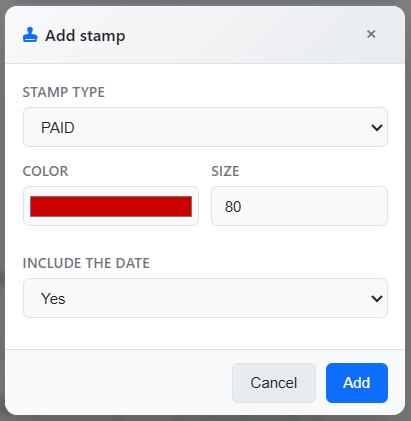
A supplier invoice that has been paid: open it in the editor, , type PAID, date Yes, place the stamp at the top right, Save. The previous version remains available in the versions of the file.
Metadata
The document properties, or metadata, are the hidden information of the file, shown by the properties of the PDF and by search engines: Title, Author, Subject, Keywords, Creator (« FileManager Dolibarr » by default). The window also shows the date of the last change. Check them before publishing a document outside the company: an old title or the name of a colleague is often left in them.
Flatten
Flatten merges into the page, for good, everything that was added (texts, shapes, redactions, stamps, filled-in fields). Each page is redrawn as an image: nobody can move an item any more or read what a redaction covers. On the other hand, the text of the page can no longer be selected or searched, and the file gets bigger. Flatten a copy meant for the outside, not your working document; if needed, make it searchable afterwards with OCR.
Merging in the editor
Merging in the editor assembles the document shown with:
- the other documents open in tabs in the editor (tick them);
- External files, chosen on your computer.
Position places the added pages after or before the current document. Tick Create in a new tab to get the result in a separate tab, without touching the current document; you will be asked for a folder and a name when saving.
Splitting in the editor
| Split mode | Result |
|---|---|
| Extract pages | A PDF made of the pages given: 1,3-5. |
| By page range | A PDF from page From page to page To page. |
| Each page separately | One PDF per page. |
With Open in a new tab ticked, the result opens in the editor, ready to be saved in the ECM; unticked, it is downloaded straight to your computer. The original document is not changed.
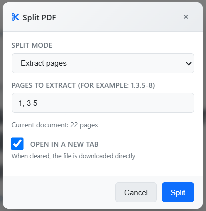
Working on pages
| Button | Effect |
|---|---|
| Rotation | Rotates by 90°, 180° or 270° the current page, all pages, a range (1-3, 5, 7-9), odd or even pages. Handy for a scan with a page upside down. |
| Extract | Downloads to your computer a new PDF made of the current page or of a range, under the name you give. |
| Delete pages | Removes the current page or a range from the document. In the Pages panel, you can also select thumbnails (Ctrl+click, Ctrl+A for all) and press Del. Once the document is saved, only versions let you get the removed pages back. |
| Rearrange | Shows every page as thumbnails; drag them into the order you want, then Apply. |
The Pages panel also copies pages from one document to another: select the thumbnails, Ctrl+C, switch to the tab of the other document, select a page then Ctrl+V (pasted after) or Ctrl+Shift+V (pasted before).
Compress, OCR, Repair
- Compress and Repair do the same work as in the context menu, but on the document shown: nothing is written until you save.
- OCR (optical character recognition) reads the text of scanned pages and adds it, invisible, under the image: the text becomes selectable, can be copied and is found by the search in content (chapter Searching and finding). Choose the language of the document: French, English, Spanish, German, Italian, Arabic, or the mixes French + English and French + Arabic. The right language clearly improves the recognition of accents.
Password
Password encrypts the PDF (AES-256): the password will be needed to open it. Type it twice, then Protect. Send the password through another channel than the document (by phone rather than in the same email).
A password-protected PDF can no longer be read by the FileManager preview, thumbnails or search without that password, and a forgotten password cannot be recovered. To send a protected copy, apply the password then use Download to computer instead of Save: the document in the ECM stays readable.
Permissions
Permissions restricts what can be done with the PDF once open: Allow printing, Allow text copying, Allow modifications, Allow annotations. An Owner password is mandatory: it protects these settings. The document still opens without a password; PDF readers respect these restrictions, but they are not an absolute protection.
Sign (P12)
Sign (P12) applies a digital signature with a certificate: the signature is tied to the exact content of the file, and any later change makes it invalid in a PDF reader.
- My certificates tab: the certificates saved in your user record; choose one and type its password. Without a certificate, the Manage my certificates link opens the Signatures tab of your record (chapter Signatures).
- Upload a file tab: a .p12 or .pfx certificate chosen on your computer, with its password, for this signature only.
- Reason for signing (« document approval ») and Location (« Paris, France ») are written into the signature.
Sign last: after signing, do not add anything else to the document. The editor saves a signed PDF exactly as it is, byte for byte, so as not to break the signature.
Recipes
The complete file of a deal in one PDF
- Open the tray on the invoice (or the quote) of the deal. The PDFs of the linked records (proposal, order, shipment) are offered along with those of the record.
- Right-click the PDF of the invoice, .
- Unfold the groups and tick, in order: the signed quote, the order, the delivery note, the invoice.
- Save to object: the invoice; name « complete-file.pdf », Prefix ticked, Compress ticked.
- Merge files: the PDF appears in the tray of the invoice, ready to be sent by email.
A scan the search cannot read
- Open the scan in the editor, , language English, Apply.
- If some pages are upside down, Rotation on those pages.
- , then Save. The document is now found by the search in content.
Sending an excerpt to a customer
- In the editor, Split, mode Extract pages, pages
1,4-6, Open in a new tab ticked. - In the new tab, hide internal information if needed (Redact tool), then Flatten.
- Save: choose the folder and the name of the excerpt. The complete document has not changed.
14 The image editor
The image editor prepares a photo, a screenshot or a receipt without leaving Dolibarr: crop, annotate, hide information, sign, adjust brightness. It works the same way as the PDF editor.
Opening an image
Right-click an image (JPG, PNG, GIF, WebP, BMP), then Edit image. The editor opens in a new window. You need the right to change the file; otherwise the image can only be viewed in the preview.
An image can only be changed in one editor at a time: if someone (or you, in another window) has already opened it, the editor shows « This file is already being edited. Close the other editor or wait for its session to expire. » A session left open without activity expires after a few minutes; saving after it has expired is refused (« The editing session has expired. Reopen the file before saving. ») so as not to overwrite someone else's work.
The editor screen
- The toolbar (see the table).
- Undo (Ctrl+Z), Redo (Ctrl+Y), Zoom out, Zoom in, Fit to screen.
- The tabs: one image per tab; + opens another one.
- Advanced tools, Reset (after confirmation, erases what was added and goes back to the original image), Download to computer.
- Save. On its right: Close the editor and Contextual help (F1).
- The image being changed; here a scanned invoice whose total is highlighted, the bank details hidden with Redact, with an arrow and a text added (the text, at 44 pixels, stays readable on the image shown at 37%).
- The right-hand panel: Color and Size (line thickness) of the drawing tools, Text size, Brightness and Contrast adjustments (Reset sets the adjustments back to zero).
- The status bar: file name, active tool (in your language), size in pixels.
The tools
| Tool (shortcut) | Use |
|---|---|
| Select (V), Hand (H) | Select an item added; drag the image. |
| Draw (D) | Draw freehand. |
| Text (T) | Add a text, at the size set in the panel (see below). |
| Signature (S) | Apply your signature. |
| Request a signature | Send the image for signature (chapter Signatures). |
| Insert an image (I) | Add a logo or a stamp. |
| Rectangle (R), Circle (C) | Shapes, to circle something: click and drag. |
| Arrow (A), Line (L) | Point at something: one click for the start, a second one for the end. |
| Highlight (G) | Semi-transparent highlighting. |
| Redact (B) | Cover an area with an opaque black band (redaction): bank details, social security number, face, license plate. |
| Crop (X) | Keep part of the image: adjust the frame with its handles, then confirm. |
| Copy, Paste, Delete | On the items added. |
The Advanced tools menu gathers:
- Transform: Resize, Rotate left, Rotate right, Flip horizontal, Flip vertical, Auto Trim (removes empty borders).
- Filters: Grayscale, Invert, Sharpness, Remove white background (useful for a scanned signature or stamp).
- More: Stamp, Lasso selection, Line, Duplicate, Compress / Export (PNG, JPG or WebP format and quality, with an estimate of the size).
Step by step
Adding readable text
- Choose the Color in the right-hand panel.
- Check the Text size. By default, it follows the size of the image (one fortieth of its longest side, 12 pixels at least): a text placed on an A4 scan of 1,240 × 1,754 pixels measures 44 pixels, and stays readable when the image is shown smaller. Move the slider to choose another size; your choice then applies to the following texts.
- Choose the Text tool (T), click where you want it: a « Text » placeholder appears, ready to be replaced. Type your text.
- To change a text already placed, select it (V, then click): the Text size slider takes its size, and moving the slider resizes it. A double-click lets you change its words.
Pointing at something with an arrow
- Choose the Arrow tool (A), the color and the thickness (Size).
- Click the starting point: « Click to set end point » appears at the bottom of the screen.
- Click the point to show: the arrow is placed, the message closes and the Select tool takes over, so you can adjust the arrow if needed. Esc between the two clicks abandons the drawing.
Hiding personal data
- Choose Redact (B).
- Click and drag over the area to hide (bank details, social security number, face…): an opaque black band covers it.
- Save, or download a copy (see the tip below).
Reducing the size of a photo before sending it
- Advanced tools › Transform › Resize: type the new width; the height follows as long as the keep-proportions box stays ticked (it is by default). Presets offer common sizes.
- Advanced tools › More › Compress / Export: choose the format (JPG for a photo) and the quality; the estimated size appears before you confirm.
Saving
Save replaces the image where it is; if versions are enabled, the previous state is first kept as a version (« Automatic version before editor overwrite »). Download to computer gets the changed image without touching the file. Closing the editor with unsaved changes asks for confirmation: « This image contains unsaved changes. Do you really want to close? »
For a receipt to send on, hide the personal data with Redact, then save: the band is now part of the saved image. The original image stays in the versions of the file when they are enabled: to send a receipt without changing the original, use Download to computer instead and send the copy.
15 Office documents: preview and online editing
FileManager shows Word, Excel, PowerPoint and OpenDocument documents directly in the browser, without Office installed on the computer and without downloading them. When the administrator has connected a Collabora Online or ONLYOFFICE Docs server, these documents can also be edited online, by several people at the same time.
Viewing a document without opening it
Clicking a document shows it in the preview panel; Full screen (or a double-click) shows it over the whole window. The document is rendered in the browser, from the file itself: what you see is the real content, layout included.
- The reading bar: Fit width, Fit page, Zoom out, the zoom level, Zoom in.
- Print, Download, Collapse (back to the panel) and Close; Esc also closes it.
- The document, page after page: headings, fonts, colors, tables, headers and footers, page numbers.
- The sheet tabs: a click shows the sheet. A workbook with a single sheet has no tabs.
- The sheet shown, as a table, with the calculated values of the formulas.
What the preview can show
| Format | Preview |
|---|---|
| Word (.docx), OpenDocument text (.odt) | The document laid out, page by page, with zoom. |
| Excel (.xlsx, .xls), CSV, OpenDocument spreadsheet (.ods) | Each sheet as a table, with its tabs. |
| PowerPoint (.pptx), OpenDocument presentation (.odp) | The slides, with navigation and thumbnails. |
| Older Word and PowerPoint formats (.doc, .ppt), RTF | Converted on the fly to PDF for the preview (Stirling PDF required); nothing is saved. Without Stirling PDF, the preview suggests converting the file to the recent format (.docx, .pptx). |
| Rendered page by page, with page numbering. | |
| Images (JPG, PNG, GIF, WebP, BMP, SVG, ICO) | Shown with zoom and rotation; full-screen gallery (chapter Views and preview). |
| Video (MP4, WebM, OGG, MOV, AVI, MKV) and audio (MP3, WAV, OGG, FLAC, AAC, M4A) | Built-in player. Some AVI or MKV files are not played by every browser: download them. |
| Text and code (TXT, LOG, CSV, JSON, XML, SQL, PHP, JS, CSS, Python, scripts…) | The content, read-only, with the syntax highlighting of the language and line numbers. |
| Markdown (.md) | The formatted text (headings, lists, tables, links). |
| HTML page | The rendered page, in an isolated frame where no script runs. |
| Other formats (archives, CAD files…) | The information of the file and the Download button. |
In grid and list views, images and PDFs have a thumbnail: the image reduced, or the first page of the PDF. Other files have the icon of their type.
To review a series of quotes or delivery slips, leave the preview panel open and click the documents one after the other: nothing lands in the Downloads folder of the computer, nothing stays on the computer of a colleague passing by.
Editing a document online
The administrator chooses the online editor: Collabora Online (LibreOffice engine) or ONLYOFFICE Docs (an interface close to Microsoft Office). Both read and save the FileManager files through the standard WOPI protocol; for the user, they work the same way.
- Right-click an Office document (docx, xlsx, pptx, odt, ods, odp, doc, xls, ppt, txt, csv, depending on the formats allowed by the administrator), then Edit with Collabora; when the configured editor is ONLYOFFICE Docs, the entry is called Edit with ONLYOFFICE, in the context menu as well as in the tray and on the share page.
- The editor opens in a new window; the explorer stays open behind it. If nothing opens, allow pop-up windows for the Dolibarr address.
- Work as in an office suite; close the window when you have finished.
A document created through New document opens straight in the editor if you tick Open in editor after creation (chapter Creating and importing).
The Collabora Online screen
- The ribbon tabs: File, Home, Insert, Layout, Formulas, Data, Review, Format, View, Help.
- The name of the document.
- The Edit (or read) mode; the button on its left closes the document.
- The ribbon of the chosen tab: clipboard, font, alignment, number format, cells…
- The formula bar (spreadsheet): cell reference and content.
- The sidebar: styles, character, number format.
- The sheets of the workbook and their navigation buttons; + adds a sheet.
- The status bar: sheet, language, quick sums, zoom.
Text documents and presentations have their own ribbon. With ONLYOFFICE, the screen is different (a tabbed ribbon close to that of Microsoft Office) but the same functions are there.
Saving, versions and working together
- Automatic saving: the editor saves the document in FileManager while you work and when you close it. There is no button to remember.
- A version before your changes: at the first save of an editing session, FileManager keeps the previous state as a version (« Automatic version before editor overwrite »), when versions are enabled for this document. The following automatic saves of the same session do not create a new version. To go back: File versions (chapter Versions).
- Together: several people can open the same document at the same time; everyone sees the changes of the others live, with the color and the name of their cursor (the name of the Dolibarr user).
- Your rights apply: without write access to the document, it opens read-only (viewing, printing, downloading).
- Session length: the access granted to the editor expires after the time set by the administrator. If the editor says it can no longer save after a long break, close the window and open the document again.
Office documents and public sharing
On the page of a public share link (chapter Sharing), the person you share with reads the Office document without installing anything: through the online editor in read-only mode when the link has no password, otherwise through the browser preview. A public link never allows changing the document.
Converting to PDF
Convert to PDF (context menu of an Office document or an image) creates the PDF version of the document, next to the original. The conversion uses Stirling PDF; the chapter PDF tools describes how it works.
If the preview or the editor does not open
| Symptom | What to do |
|---|---|
| The preview shows « Preview not available » | The format has no preview in the browser: download the file. |
| An old .doc or .ppt is not shown | Without Stirling PDF, these formats have no preview: open them in the online editor, or ask the author for the .docx or .pptx version. |
| The menu does not offer « Edit with… » | Online editing is not configured, this format is not allowed, or the item is a shortcut. See the administrator. |
| Nothing opens on click | The browser blocks the window: allow pop-up windows for Dolibarr. |
| The editor window stays blank or shows an error | The editing server cannot reach Dolibarr (or the other way round); the administrator checks the address, HTTPS and the list of allowed hosts (chapter Office and PDF). |
| The document opens read-only | You do not have write access to this document: request access (chapter Permissions). |
16 Document versions
A version is a frozen copy of a document at a given moment. FileManager keeps two kinds: the versions of a file (a PDF, a spreadsheet…) and the versions of a Dolibarr record (the document state of a proposal, an order…). You can thus go back without ever losing the current state.
The versions of a file
A file that has versions carries the clock badge « vn/total » (chapter Views and preview). The history opens through the context menu File versions, by clicking the badge, or through the Versions line of the preview panel.
- The number of versions.
- The file concerned.
- + Create a version: freezes the current state, with an optional comment.
- The number of the version; Current marks the one that matches the file in place.
- The author, the date, the size and the comment; a version created automatically says what created it.
- Restore (circular arrow): puts this version back in place.
- Download this version, without touching the file in place.
- Mark as important (shield): protects the version (see below).
- The Protected badge; on hover, who protected it, when and why. The delete button of this version is greyed out.
- Remove protection (open padlock), only visible to the people who have the right to do it.
- Delete (trash can): erases this version, after confirmation.
- Close.
The buttons are icons: their name appears on hover. Right-clicking a row offers the same actions in a menu. The current version has neither Restore nor Delete.
Creating a version
- Open the history of the file.
- Click + Create a version, type a comment (for example « Version handed to the inspection office »), confirm.
FileManager also creates versions by itself, whenever a document is about to be replaced by another state:
- before saving a PDF, an image or a text file changed in the editors, or a filled-in PDF form (« Automatic version before editor overwrite »);
- at the first save of an online editing session (Collabora, ONLYOFFICE): a single version per session, however many automatic saves there are;
- before a compression or a repair replaces a PDF (chapter PDF tools);
- before an import from URL with « Replace the existing file » overwrites a file, in the ECM as on a connected storage (chapter Creating and importing);
- before a program connected through the FileManager API replaces a file (« Automatic version before replacement through the developer API »);
- before a restore (the state replaced is kept);
- for documents with a validity date, at each renewal (chapter Documents with a validity date).
The comment of these versions says what created them (« Automatic version before PDF compression », « Automatic version before replacement by an import from a URL »…). If versions are enabled for the source of the file and the previous state cannot be kept (disk full, remote file unreadable), the replacement is refused and the file stays as it was: nothing is overwritten without its copy.
Restoring a version
- In the history, click Restore (circular arrow) on the row of the version you want.
- Confirm: the current state of the file is first saved as a new version, then the chosen version takes its place.
Nothing is lost: you can go back to the state before the restore in the same way.
Deleting a version
Delete erases an older version, after confirmation. The current version cannot be deleted, nor can a protected version (see below). You need the delete permission on the document.
Protecting a version
A protected version is never deleted: not by hand, not by automatic retention, not by a technical clean-up, not with its file when the trash is emptied. Protect the approved revision of a procedure, the plan handed to the customer, the certificate sent to the auditor: it will stay available whatever happens to the file.
- Open the version history of the file.
- On the row of the version, click the shield, Mark as important. You must be able to change the file.
- If you wish, type the reason for the protection (« Revision B approved by the customer on 10/12 »), then confirm.
- The message « Version protected: it will never be deleted. » appears. The version carries the Protected badge; hovering over it shows who protected it, when, and the reason given. Its delete button is greyed out; hovering over it explains: « This version is protected: it cannot be deleted. Remove its protection first. »
What protection changes elsewhere:
- retention (« keep the last 10 versions », « keep 365 days ») ignores protected versions and does not count them: protecting old revisions does not make the recent ones disappear;
- a file with protected versions can go to the trash and come back with them, but its permanent deletion is refused; Empty the trash and the automatic clean-up of the trash delete everything else and list the items kept for this reason; the same goes for a folder containing a file with protected versions;
- protecting and removing protection are written to the FileManager history, with the user, the date and the reason.
Remove protection from a version is a separate action, reserved to the people who have the « Remove the protection of versions » right (granted by the administrator in the rights of the user or of their group; nobody has it by default, except administrators). After confirmation (« Remove the protection of this version? It can then be deleted again. »), the version becomes an ordinary version again.
The administrator sets how many versions are kept (by number or by age) and enables the automatic clean-up (chapter Lifecycle). Versions follow the file: renamed or moved, it keeps its history; sent to the trash, it takes it along.
The versions of a Dolibarr record
On the records of the objects chosen by the administrator (commercial proposals, orders, invoices…), a Versions button is added to the action buttons. It opens the history of the document states of the record.
- The list of the versions saved.
- Label of the new version.
- Save version: saves the current state of the record and of its document.
- Close: closes the window.
When the administrator enables automatic versioning, a version is also created when the document of the record is generated, according to the strategy chosen: at every generation, or only on a status change, a change of the total amount, a change in the number of lines, or in « smart » mode (status change or significant change of amount).
Manufacturing orders, bills of materials and shipments also have versions, read-only: they can be viewed and downloaded, but not restored (chapter Manufacturing, lots and traceability file).
17 Documents with a validity date
Some documents expire: company registration extract, insurance certificate, social contributions certificate, authorisation, certificate, contract. FileManager tracks their validity date, warns before it expires and keeps the history of every renewal.
The list of documents with a validity date
shows every document tracked, sorted by validity date.
- The title and the number of documents.
- The number of rows per page, the display, the spreadsheet export and the + button (new document).
- The filters of each column; the magnifying glass applies them, the cross clears them.
- The reference: a click opens the record; the icon opens the file.
- Validity date: the expiry date.
- The status: days left (green, then yellow as the date gets closer) or days since it expired (red « Expired »).
- The reminder: how many days before expiry the alert is sent.
- The actions: edit, renew, view the file, download, delete.
The Label, Document type and Tag/category columns help sort by kind (legal, human resources, insurance, quality…).
Adding a document to track
Two paths:
- from the explorer: right-click the file, Add to validity documents;
- from the menu: .
- Document type: suggests the default validity period and reminder of this type.
- Tag/category: to classify.
- Label: for example « Social contributions certificate ».
- File: the + picks the document in FileManager.
- Validity date: the expiry date; Now puts today's date.
- Linked objects: the third party, the project or the user concerned (search by name).
- Enable reminder.
- Reminder: number of days before expiry.
- Daily reminder after expiration: sends a reminder every day until the document is renewed.
- Additional emails: other recipients, separated by commas.
- Send to object email: also warns the linked third party or contact.
- Save.
The document gets an automatic reference (for example DOC2610-0001) and a validity badge in the explorer: full hourglass while it is valid, emptying hourglass under 30 days, red triangle once it has expired.
The record of a document and its history
- The Card (the information) and Version history tabs.
- Each version: validity period (Valid from, Valid until) and file.
- The status of the version: Current version or replaced version.
- View and download the file of the version.
- Modify the record.
- Renew.
Renewing a document
When a new certificate arrives, you do not replace the old one: you renew. The old version can still be viewed in the history, with its validity period.
- In the list (green renewal icon) or on the record, click Renew.
- Check the document 1 and its current validity 2.
- Choose the new file 3: from your computer, or in FileManager (folder icon).
- Give the New effective date 4 and the New expiry date 5 (suggested from the duration of the type).
- Add a Renewal note 6 if useful.
- Click Renew 7 (Cancel 8 closes the form without changing anything). The version history 9 gets one more row.
Reminders
Every day, a scheduled job sends the reminders of the documents that are about to expire (according to their reminder period) and, if the option is ticked, of the expired documents. The recipients are set by the administrator in : the person who created the tracking, the address of the linked third party or contact, common extra recipients; the Additional emails typed on the document are added to them. The templates of these emails are set in the same place.
Document types
(for the administrator) defines the types offered: reference, label, category, type of object concerned, default validity period and reminder period. On activation, FileManager creates about thirty common types, in the language of the administrator: company registration extract (Kbis), professional liability insurance, social contributions certificate (URSSAF), employment contract, authorisation, medical certificate… They have no default validity period: set it for the ones you track (for example 90 days for a company registration extract, 365 days for an insurance certificate), and it will be suggested for every new document. See the chapter Lifecycle.
Three rights govern the feature: Read, Create/edit and Delete documents with validity.
18 Electronic signatures
FileManager gets PDFs signed without leaving Dolibarr: you sign yourself, you apply the company seal, you sign with a digital certificate, or you send the document for signature to a colleague or to someone outside the company, who signs from a secure link. Every signature is timestamped, traced and verifiable.
The signature features require the matching rights (use one's signature, use the company seal, create requests…). The signature buttons on records and in the explorer menu depend on a setting of the administrator; the pages always remain available.
Preparing your signature
Your handwritten signature and your certificates are set once and for all in the Signatures tab of your user card (). An administrator can do it for another user.
- The Signatures tab of the user card.
- The current signature; once saved, its buttons show it full size, download it or delete it.
- The tools: import an image (signature scanned on a white or transparent background), draw, Edit (opens the image editor to crop, clean the background, adjust the contrast), undo the last change, clear.
- The reminder of the drawing mode; « Click to exit » stops it.
- The drawing area: sign with the mouse, a stylus or your finger.
- Save signature: it becomes your official signature, stored encrypted, and you find it in one click in the PDF editor.
Further down, the Digital certificates section keeps the certificates you use to sign cryptographically.
- The Certificate file:
.p12,.pfxor.pem, 1 MB at most. - Its label (« Management certificate »).
- Its password: it is checked on upload and stored encrypted.
- Set as default: the certificate offered first.
- Upload.
- The list of certificates: label, holder, issuer, validity dates, status, default certificate; the actions default, enable/disable, delete.
- The reminder: the visual signature is placed on PDFs; a P12/PFX certificate signs cryptographically, with a signature that any PDF reader can verify.
Depending on the settings of the administrator, FileManager can also generate your certificate (self-signed or issued by the internal certificate authority of the company), automatically if needed when you save your signature; and the administrator can upload a certificate for you, whose password you then choose.
Signing a PDF yourself
- Right-click the PDF, (or open it in the PDF editor). The editor opens in signature mode.
- Signature tool (S): the My models tab offers your saved official signature and, if you are allowed, the Company seals (it only appears if there are any); the other tabs let you Draw (with a choice of color), import an Image or write a Text (your name in handwriting).
- Add, then click the page where you want it; move and resize the block.
- Save. Depending on the settings, the date, the time and your name go with the signature; you can ask to be warned, along with your manager or other colleagues, every time your signature is applied.
A signature or a seal added through the secure circuit can no longer be changed in the editor: clicking it only shows who applied it and when.
Applying the company seal
The seal is the stamp of the company (logo, « Certified true copy » mention, stamp with the signature of the managing director…). With the « Use the company seal on PDFs » right and if the administrator has allowed you this seal, it appears in the My models tab of the Signature tool of the PDF editor, under Company seals. A seal can be timestamped by an authority (TSA): the date it was applied is then certified by a third party. Seals are created by the administrator (chapter Signature configuration).
Signing with a certificate (P12)
A certificate signature is a cryptographic signature built into the PDF: any PDF reader (Adobe Acrobat, for example) shows who signed and flags any later change to the document.
- In the PDF editor, advanced tools menu, Security section, Sign (P12).
- Choose one of My certificates or Upload a file P12 for this signature only.
- Type the Certificate password, and optionally the reason (« Document approval ») and the location (« Paris, France »).
- Confirm: the PDF is digitally signed. Sign last: any change afterwards would make the signature invalid.
Requesting a signature
Three starting points: right-click the PDF then ; the Request a signature tool of the PDF editor; or . From a Dolibarr record, the Request a signature button prepares the request on the PDF of the record (chapter The documents of a Dolibarr record).
- The document to sign and its source; Change file chooses another one, the cross removes this request.
- Signer: type the name of a Dolibarr user or the email address of someone outside the company.
- Message attached to the invitation.
- Deadline for signing, and page where to sign.
- Notification: sends the invitation by email (unticked, you pass the link on yourself, see below).
- Require an identity document: the signer will have to attach an identity document.
- Signature zone: the default zone is recalled; Edit opens the preview to draw where to sign (see below).
- + Add signature request: another signer or another document in the same sending.
- Create requests.
- Cancel.
Placing the signature zone
- The number of zones defined.
- The pages of the document.
- The zoom.
- +: add a zone.
- The instruction: Draw a rectangle to define a signature zone.
- The zone drawn (« Signature 1 »).
- The list of zones, with their page; the cross removes one.
- Cancel.
- Validate.
The Common Positions (bottom left, bottom right, center…) place a zone in one click. A document can carry several zones, for example one per page to initial.
What the signer sees
- They receive an email with the link to the signing portal. The email leaves from the Dolibarr sending address, in the name of the person who made the request, with their address as « Reply-to » (unless the administrator has set otherwise).
- If the administrator requires it, they confirm their identity with a six-digit one-time code received by email (valid for a few minutes, limited number of attempts, new code after one minute).
- They read the document, attach their identity document if needed (identity card, passport, driving license… as JPG, PNG or PDF, 10 MB at most), then sign in each zone: drawing, handwritten text or image. Depending on the settings, they type their name again, agree to share their location, leave a comment, or sign with their own P12 certificate.
- They can also refuse, giving a reason.
Once signed, the signed PDF is filed next to the original and the request moves to the Signed status. If the document was changed since the request, the signature is refused for security: make a new request on the right version.
If the signer is slow, automatic reminders are sent at the pace set by the administrator (by default: first reminder after 3 days, then every 2 days, 3 reminders at most), until the deadline; the request then moves to the Expired status and its author is warned. The text of the reminders is changed in the email templates (chapter Notifications).
Following the requests
gives access to the Requests sent, the Requests received (those where you are the signer) and the External signatures (those sent to people outside Dolibarr).
- The title and the number of requests; the eye shows or hides the finished requests.
- The views: all, sent, received, external.
- +: new request.
- The filters of each column.
- The reference of the request (for example SR2609-0003): a click opens its card.
- The signer: user or email address.
- The deadline.
- The status: Pending, Signed, Refused, Cancelled or Expired.
In the explorer, the signature badge of the document also shows whether it is pending, signed or whether the request has expired.
The card of a request
- The tabs: Card, Signed document, Documents, Notes, Log (the history of events: sending, opening, reminders, signature).
- The reference and the file.
- The status.
- The path of the signed file, with download and preview.
- Requested by and Signer.
- The dates: creation, deadline, signature, and the message.
- Signature Verification: fingerprints of the document before and after signing and fingerprint of the signature; Verified confirms that the document has not been changed since.
- Traceability of the signatory: name typed, date, time spent on the page, number of attempts, IP address, location if it was requested.
- Download the signed document and Delete.
While it is pending, the request can be sent again (new email), its link copied to pass it on another way, or cancelled by its author (« Cancel their own signature requests » right) or by an authorized manager. When an identity document was attached, an administrator marks it verified after checking it.
Finding what you have signed
gathers every document you signed in FileManager, however you did it: PDF editor, image editor, signing page of a request, signature provider.
- Verify a document: Choose file, then Check.
- History, with the number of signatures.
- The columns: Date of the signature, File, Type (visual signature, digital signature with a certificate, company seal, signature request), Object (the linked record, if any), Source (the space where the file was) and Fingerprint (the beginning of the fingerprint of the signed file; the full fingerprint appears on hover). The File and Type filters narrow the list; the magnifying glass applies, the cross clears.
- The signatures, most recent first; as long as there are none, the page says so.
The verifier answers the question « is this file really the one I signed? ». FileManager computes the fingerprint of the file you drop and compares it with your history; the file is not saved.
- Found in your history: the message gives the name of the signed file, the date and the type of signature. The file is identical, byte for byte, to the one you signed.
- This document is NOT in your signing history: you never signed this exact file in FileManager, or it was changed after signing (the slightest change alters the fingerprint), or it was signed elsewhere.
Treat any document signed in your name that the verifier cannot find as a possible forgery: do not approve it and warn your administrator.
Signing with a provider: DocuSeal or Yousign
The administrator can hand signature requests over to an outside provider instead of the internal portal: DocuSeal (open source platform, self-hosted or online) or Yousign (French provider). You create the request in the same way; FileManager passes it to the provider, which sends the invitation and collects the signature, then the status of the request and the signed document come back to FileManager through the callback link (webhook) declared at the provider. DocuSign is not integrated.
Legal value of signatures
The internal FileManager signature is an electronic signature with an audit trail (fingerprints, timestamp, IP address, identification by code, identity document if requested). For stronger legal value (advanced or qualified signature under the eIDAS regulation), the administrator can hand requests over to a provider or use digital certificates issued by a recognized authority. The legal level depends on the provider, the plan subscribed, the identity check and the certificate used: FileManager does not assign an eIDAS level by itself.
19 Mail merge: the step-by-step assistant
Mail merge produces personalized documents from your Dolibarr data: a reminder for every overdue invoice, a certificate for an employee, a quote laid out with its lines, a bilingual letter depending on the customer's language… You choose a template, one or more records, you fill in what is missing, and FileManager writes the document — as Word, Excel, PowerPoint, OpenDocument, HTML or PDF — straight into the ECM.
This chapter follows the assistant screen by screen. The next three chapters go further: Writing a template (variables, conditions, tables of lines), Fields, formulas and Dolibarr data (the 18 field types, the 43 calculation functions, the revenue and outstanding amounts computed), then Step-by-step examples.
What to know before you start
- A template is an ordinary document in which some parts are variables written between double underscores, for example
__SOCIETE_NOM__. Variable names are the same whatever the language of the interface. Templates form the library of the company, managed by the administrator (). - The subject is the type of Dolibarr record that provides the data: a third party, a contact, a user, a project, a proposal, an order, an invoice or a shipment. With Manual entry, you type everything yourself.
- One record ticked gives one document; several records ticked give one document each (batch generation).
- You only see the templates that the administrator has opened to you, and you only read in Dolibarr what your rights allow: a record you cannot open fills no variable.
- The templates delivered with the module are installed in the language of the administrator who activates it (FileManager 4.5.470 or later: English, Spanish, German, Italian or Arabic; French for another language): « Invoice reminder », « Certificate », « Styled quote »… An installation in French, or made before 4.5.470, keeps the French templates — « Relance facture », « Attestation », « Devis stylisé » — and the screenshots of these chapters, taken on a demonstration installed in French, show them. Change them, duplicate them, or upload your own templates (chapter Office & PDF).
Starting the assistant
- In the explorer, open the folder where the document must be filed.
- Open New document: + New button, Shift+D shortcut, or New document in the left menu.
- Choose a template marked Variables. The With variables filter only shows those; the search covers the name, the description and the format.
- Choose the mode: Fill with the assistant (the variables are filled from Dolibarr) or Raw template (a plain copy of the template, variables included, to complete by hand).
- Click Continue with the assistant. The assistant opens on its four steps: Subject, Content, Preview, Done.
The New document dialog itself is described in the chapter Creating and importing.
Step 1 — Subject: who is the document for?
- The four steps; the current step is in color, the steps done are ticked.
- The subject type. The assistant preselects the subject recommended by the template (here Invoice) and remembers the last subject you used with this template.
- The search: reference, name of the third party, town, email, notes… Several words add up, in any order (« alizés hôtelier » finds « Groupe Hôtelier Les Alizés »); a typing mistake on a single word is often tolerated.
- The filters specific to the chosen type (see the table below).
- The list of records: tick one or more rows. The first 50 records are shown; narrow with the search or the filters to find the others.
- The counter of records ticked.
- Select all (shown) ticks the whole filtered list; Clear unticks everything.
- Continue - 3 documents announces how many documents will be produced when several rows are ticked; with a single one, the button is called Next. It stays greyed out as long as no row is ticked. Enter does the same.
Subjects and what they bring
| Subject | Variables filled automatically | Filters |
|---|---|---|
| Manual entry | No record data: only the variables of your company, of yourself and the date. All the other variables become fields to fill in. | — |
| Third party | Name, address, country, email, phone, VAT number, professional identifiers, capital, legal form, customer code, logo. | Relation: customers, prospects, suppliers. |
| Contact | Last name, first name, email, phone, job title, address. | — |
| User | The identity and the contract of the employee: position, hiring and end dates, salary, weekly hours, date of birth, gender, address, extra fields of the user card. | — |
| Project | Reference, title, description, start and end dates. | From / To (creation date). |
| Proposal, Order, Invoice, Shipment | Reference, date, totals excluding tax, VAT and including tax, the lines of the document and the VAT summary, plus all the data of the third party. | From / To; for invoices, Payment: unpaid, overdue, paid. |
The full list of variables, subject by subject, is in the chapter Writing a template.
If you choose a subject the template does not expect, the assistant says so: « This template is meant for: Invoice. With "Third party", the fields are not pre-filled. » Go back to the recommended subject so that Dolibarr fills the document. When the administrator has ticked Restrict to the object right on the template, the subject is imposed.
Step 2 — Content: name, format, language and fields
The upper part of the step sets the file produced.
- The subject reminder: the type and the record chosen, or the number of records ticked.
- The file name, without extension (the extension follows the format). It is suggested by the template; for a single document, the assistant adds the name of the chosen record. The characters
\ / : * ? " < > |are refused, and the assistant warns if a file with the same name already exists in the folder. - Insert a variable in the name: each chip carries the label the template gives to the variable (« Société émettrice », issuing company, in the delivered template) and its value for the first record; a click adds it to the name. Here
Reminder __DOC_REF__will give « Reminder IN2607-0022.docx », « Reminder IN2607-0030.docx », « Reminder IN2607-0034.docx ». - The output format: Editable keeps the format of the template (Word, Excel, PowerPoint, OpenDocument, HTML); PDF converts the document. An HTML template comes out as PDF by default.
- The Document language: Automatic takes the language of each recipient (third party, contact or user record), otherwise that of the interface. Choose a specific language to force the language of every document. The language sets the dates, the amounts, the Dolibarr labels (titles, countries, legal form) and the bilingual blocks of the template.
- Group the documents in a subfolder (batch generation only): creates the subfolder if it does not exist, with the rights of the current folder.
- The name of the subfolder, suggested from the template.
- The reminder: 3 documents will be generated (one per record).
- Previous goes back to the subject; what you typed is kept.
- Preview shows the document before creating it.
- Generate 3 documents creates the documents without going through the preview. Ctrl+Enter does the same.
The conversion goes through the Stirling PDF service when the administrator has enabled it, otherwise through LibreOffice installed on the server (Office templates) or through the built-in PDF engine (HTML templates). If none is available, the assistant says so: then choose Editable, and convert later from the explorer.
The lower part of the step contains what remains to be told to the document.
- A List field: here the reminder level. The template prints a different paragraph for the 1st, 2nd or 3rd reminder.
- An optional Long text field: a paragraph added to the letter.
- Text fields: the name and the job title of the signer.
- Filled automatically: the values read in Dolibarr for the first record, read-only, under the label the template gives them. They are read again for each record at generation. The 3 empty badge counts those that are missing.
- The warning about empty values: here the address, the town and the email of the issuing company, missing from the record of your company in Dolibarr (). The document will leave them empty: complete the record before generating.
A few rules:
- A field marked required must be filled in: the counter « 2 / 3 required filled » recalls it and generation is refused as long as some are missing (« Fill the required fields (1). »).
- When an expected value is empty in Dolibarr — a third party without an address, an invoice without a due date — the assistant names it: « 1 empty value(s): Address. Fill in the matching record in the ERP. » Correct the record rather than the document: the next documents will benefit from it.
- In a batch, the fields you fill in apply to all the documents; only the values read in Dolibarr and the computed fields change from one record to the next.
What each type of field asks of you
The « Démo — tous les champs » (demo — all the fields) template of the library shows every type of field. The next two screenshots go round them.
- Text: one line.
- Long text: a paragraph; line breaks are kept in the document.
- Rich text: bold, italic, underline, bulleted or numbered lists, link, clear formatting. The formatting is reproduced as it is in Word, Excel and PowerPoint; an OpenDocument template receives the text without formatting.
- Date: a calendar.
- Number: a number, with the decimal separator of your browser.
- Yes/No: a check box.
- List: one choice among values set by the template.
- URL (link): a web address; an HTML template turns it into a clickable link, the other formats write it in plain text.
- Photo: an image that you crop and resize before inserting it; it takes the place of the variable in the document (Word, OpenDocument, HTML).
- Multi-list: several choices (Ctrl+click); the document receives the values separated by commas, for example « Blue, Green ».
- Editable list: suggestions, but you can type something else.
- Autocomplete: free text, with suggestions taken from Dolibarr when the template gives a source (third parties, contacts, products, users, projects, proposals, orders, invoices).
- Object ref: type two letters, pick the record in the list (here a third party); the document receives its label.
- Attachment: a file of 5 MB at most; an image is inserted into the document in place of the variable, another file writes its name there.
- An ERP data field is never typed: FileManager computes it on the server for the chosen record (here the revenue of the year of the third party) and shows it with the automatic values.
- Computed variables: the result of a formula, recalculated at every keystroke (here 1,250 × 1.2 = 1,500). In a batch, the formula is recalculated for each record.
- The reminder of the Company seal and Signature fields: they are not filled in the assistant but after generation, through the secure signing circuit (timestamped and logged).
What the document receives, type by type
What you type is not always written as it is: the document receives a readable value, in the language of the document, while the conditions of the template ([[SI …]]) test a stable value, the same whatever the language. A template written for French thus works in English without any change.
| Type | You type | The document receives | A condition tests |
|---|---|---|---|
| Yes/No | a ticked box | « Yes » / « No » in the language of the document (« Oui » / « Non » in French) | 1 / 0: [[SI __CGV_ACCEPTEES__ eq 1]]; the word (eq Oui) is also accepted |
| Date | 11/15/2026 in the calendar | « 11/15/2026 » in US English, « 15/11/2026 » in French | the date as YYYY-MM-DD: eq 2026-11-15 |
| Number | 1250.5 | « 1,250.5 » in English, « 1 250,5 » in French | the number: gt 1000 |
| Computed variable | (nothing: the formula computes) | a result with decimals is written as a number (« 1,500.6 »); a whole result stays as it is (« 2026 », « 01000 »), because it may be a year or a code. NOMBRE_FR() and MONTANT() group thousands, but always in the French notation (« 12 500 », « 1 234,50 € ») | the raw result: gt 1500 |
| List | a choice | the label of the option (« 2nd reminder ») | the value of the option (eq 2) or its label (eq 2nd reminder) |
| Multi-list | several choices | the labels chosen, separated by commas (« Blue, Green ») | the list of values: notempty for « at least one choice » |
| Text, Long text | text | the text, line breaks included | the text, capital letters included |
| Rich text | formatted text | the text with its formatting (Word, Excel, PowerPoint, HTML); without formatting in an OpenDocument template | empty / notempty |
| Photo, Attachment | a file | the image in place of the variable, or the name of the attached file | empty / notempty |
In the file name, a date stays as YYYY-MM-DD (« Certificate 2026-11-15 »): files thus sort in chronological order.
A field can also appear only under a condition (for example « Reason for refusal » only if « Accepted » is No): the administrator sets it in the Condition column of the fields of the template. As long as it is false, the field is hidden in the assistant, is no longer required, and the document receives it empty.
How the administrator configures each type, and the formula language, are described in the chapter Fields, formulas and Dolibarr data.
Composing a bundle
When a single record is chosen and the administrator has defined bundles for this type of record, the Content step also offers Compose a bundle: choose the bundle, the optional parts, then Compose bundle. FileManager assembles into a single PDF the documents of the record (quote, terms of sale, plans, certificates…) and files it in the ECM. See the chapter PDF bundles.
Step 3 — Preview: checking before creating
- The banner recalls that nothing is saved yet and, in a batch, that the preview shows the first record (here IN2607-0022).
- The preview bar: full width, full screen, zoom.
- The date of the day, written by FileManager. The town before it is empty: it is one of the three values flagged at the previous step.
- The variables filled: the reference of the invoice in the subject line of the letter.
- A conditional block: the template only prints this paragraph for a 2nd reminder.
- The extra text typed at the previous step.
- Generate 3 documents (Ctrl+Enter).
A Word template is shown directly in the browser; a workbook or a presentation is converted to PDF for the preview. To correct a field or a mistake, go back to the Content step with Edit: nothing has been created.
Step 4 — Done: open, file, send, sign
One document. The assistant shows « Document created », the name of the file, and offers:
- Open: a PDF opens in the PDF editor; an Office document opens in the online editor (Collabora or ONLYOFFICE) when it is enabled; otherwise the explorer goes to the document.
- Show in folder: the explorer shows the folder and selects the document, without reloading the page.
- Send by email: opens the sending form with the document attached (chapter Sending by email).
- Signature request: opens a new signature request on the document (chapter Electronic signatures); an editable document is first converted to PDF, next to the original.
- New document with this template: starts the assistant again on the same template.
When the template has a Company seal or Signature field, a reminder announces it and the main button becomes Seal / sign now: the document is converted to PDF if it is editable, then the PDF editor opens in signature mode when it is up to you to sign, or a new signature request opens when the signer is a third party, a colleague or an email address (chapter Fields, formulas and Dolibarr data). Sending by email is not offered before signing.
Several documents. A progress bar follows the generation (« Generating 2 / 3... ») and the list fills up as it goes, a green tick for each document created, a red cross and the reason for a failure.
- Stop interrupts after the current document; the following ones are marked « Stopped by the user ».
- Retry the 2 failures starts again only those that failed.
- The summary says « 3 / 3 documents created ».
If the name contains a variable (Reminder __DOC_REF__), it is resolved for each document: « Reminder IN2607-0022 », « Reminder IN2607-0030 »… Otherwise, the assistant adds to the name what tells the record apart: its reference for a business document (« Relance facture - IN2607-0022 »), its name for a third party or a contact (« Attestation - Groupe Hôtelier Les Alizés »). A name already taken in the folder gets a number: « Relance facture (1).docx ». No existing file is ever overwritten.
Every generation is written to the log of the module, with the template, the record, the document produced and its author.
Good practice
- Preview before a batch generation: the first document immediately shows a variable filled the wrong way.
- Generate in a subfolder the mass sendings (reminders, yearly certificates): they can be found, reviewed and shared in one go.
- Choose Editable when the document must be reviewed or completed, PDF when it goes out as it is.
- Correct the Dolibarr records, not the documents: a missing address corrected on the record serves all the following documents.
- A missing template, a badly labelled field, a value to add to a list: ask the administrator, who sets them in the record of the template (chapter Office & PDF).
20 Writing a mail-merge template
A mail-merge template is nothing technical: it is a Word, Excel, PowerPoint or OpenDocument document or an HTML page, written and formatted as usual, in which you place variables. This chapter gives every variable that Dolibarr fills, how to show a passage under a condition, how to repeat the lines of a quote or an invoice, and the rules that avoid surprises.
The principle: variables between double underscores
A variable is written in capital letters, digits and underscores, between two underscores on each side: __SOCIETE_NOM__, __DOC_TOTAL_TTC__, __DATE_TODAY__. At generation, each variable is replaced by its value.
- A variable that FileManager knows (the list is below) is filled automatically according to the subject chosen in the assistant.
- Any other variable —
__SUBJECT_LINE__,__DEPOSIT_AMOUNT__,__SITE_NAME__— becomes a field to fill in in the assistant. The administrator gives it a label, a type (date, list, formula…) and a default value (chapter Fields, formulas and Dolibarr data). - A variable can appear several times: it takes the same value everywhere.
The names of the built-in variables and keywords mix English and French words, and are the same whatever the language of the interface or of the document: SOCIETE = third party, LIGNE = line, QTE = quantity, HT = excluding tax, TTC = including tax, TVA = VAT, REMISE = discount; in conditions, SI = if, SINON = else, FIN = end.
Subject: Reminder — invoice __DOC_REF__
Dear Sir or Madam,
Unless we are mistaken, invoice __DOC_REF__ dated __DOC_DATE__,
for an amount of __DOC_TOTAL_TTC__, remains unpaid to date.Accepted formats
| Format | What is filled | Particulars |
|---|---|---|
| Word (.docx) | The body, the headers and footers, the footnotes and endnotes. | Everything is allowed: repeated table rows, images, formatted rich text. |
| OpenDocument text, spreadsheet, presentation (.odt, .ods, .odp) | The content and the styles (headers, footers). | Repeated rows and images; rich text arrives without formatting. |
| Excel (.xlsx) | Every cell of every sheet. | Formatted rich text in a cell; no repeated rows and no images. |
| PowerPoint (.pptx) | Every slide and its notes. | Formatted rich text; no repeated rows and no images. |
| HTML | The whole page, written in the built-in editor of the template record. | Everything is allowed; output as PDF by default. |
Writing variables without traps
- Type each variable in one go, without changing font or color in the middle. Word sometimes splits text into invisible pieces; FileManager glues split variables back together in a .docx, but an OpenDocument file does not forgive a variable part of which is bold.
- Format the whole variable: if
__SOCIETE_NOM__is bold in the template, the customer's name will be bold in the document. - No space and no accent in the name of a variable:
__SITE_NAME__, not__Site name__. - The
[[…]]blocks (conditions, lines) are also written in one go, in ordinary text. - Page numbering and table of contents are features of the word processor: insert Page number and Number of pages in the footer, and a table of contents based on the Heading 1, Heading 2 styles. Update it before saving the template; it works in the document produced and in its PDF version.
Variables filled automatically
Always available: your company, you, the date, the language
| Variable | Content |
|---|---|
__COMPANY_NAME__ | Name of your company (Dolibarr Company/Organization record). |
__COMPANY_ADDRESS__, __COMPANY_ZIP__, __COMPANY_TOWN__ | Address, zip code, town. |
__COMPANY_EMAIL__, __COMPANY_PHONE__ | Email, phone. |
__COMPANY_IDPROF1__ to __COMPANY_IDPROF6__ | Professional identifiers; in France 1 = SIREN, 2 = SIRET, 3 = APE/NAF code, 4 = RCS. |
__COMPANY_TVA_INTRA__ | Intra-community VAT number. |
__COMPANY_CAPITAL__, __COMPANY_FORME_JURIDIQUE__ | Share capital (with the currency), legal form. |
__COMPANY_MANAGERS__ | The managing director(s) declared in the company record: the signer line of a contract. |
__COMPANY_LOGO__, __COMPANY_LOGO_SQUARE__ | The logo, or the square logo, inserted as an image in place of the variable. |
__USER_FULLNAME__, __USER_EMAIL__ | Your name and your email (the user who generates). |
__DATE_TODAY__, __DATETIME_NOW__ | Today's date; the date and time. |
__LANGUE__, __LANGUE_CODE__ | The language of the document: en, fr…; en_US, fr_FR… |
Dates and amounts are written in the language of the document: « 10/17/2026 » and « €4,068.00 » in US English, with the French notation for a document in French. A value missing from the record (capital not filled in, no logo) leaves the place empty: the variable disappears without a trace.
The third party (Third party, Proposal, Order, Invoice, Shipment subjects)
| Variable | Content |
|---|---|
__SOCIETE_NOM__ | Name of the third party. |
__SOCIETE_ADDRESS__, __SOCIETE_ZIP__, __SOCIETE_TOWN__ | Address, zip code, town. |
__SOCIETE_COUNTRY__ | Country code (FR, BE…): handy in a condition. |
__SOCIETE_EMAIL__, __SOCIETE_PHONE__ | Email, phone. |
__SOCIETE_TVA_INTRA__ | Intra-community VAT number. |
__SOCIETE_IDPROF1__ to __SOCIETE_IDPROF6__ | Professional identifiers (SIREN, SIRET…). |
__SOCIETE_CAPITAL__, __SOCIETE_FORME_JURIDIQUE__ | Capital, legal form. |
__SOCIETE_CODE_CLIENT__ | Customer code. |
__SOCIETE_LOGO__ | The logo of the third party, inserted as an image. |
The business document (Proposal, Order, Invoice, Shipment)
| Variable | Content |
|---|---|
__DOC_REF__ | Reference (PR2610-0042, IN2610-0107…). |
__DOC_DATE__ | Date of the document. |
__DOC_TOTAL_HT__, __DOC_TOTAL_TVA__, __DOC_TOTAL_TTC__ | Totals, with the currency: « €1,977.60 ». |
__DOC_REMISE_GLOBALE__ | The overall discount in %, empty if there is none. |
__DOC_NB_LIGNES__ | The number of lines of the document. |
The contact, the project
| Variable | Content |
|---|---|
__CONTACT_FULLNAME__, __CONTACT_LASTNAME__, __CONTACT_FIRSTNAME__ | Full name, last name, first name. |
__CONTACT_EMAIL__, __CONTACT_PHONE__, __CONTACT_JOB__ | Email, phone (work, otherwise mobile), job title. |
__CONTACT_ADDRESS__, __CONTACT_ZIP__, __CONTACT_TOWN__ | Address. |
__PROJECT_REF__, __PROJECT_TITLE__, __PROJECT_DESCRIPTION__ | Reference, title, description of the project. |
__PROJECT_DATE_START__, __PROJECT_DATE_END__ | Start and end dates. |
The user (User subject: contracts, certificates, amendments)
| Variable | Content |
|---|---|
__EMP_FULLNAME__, __EMP_FIRSTNAME__, __EMP_LASTNAME__, __EMP_CIVILITY__ | Identity. |
__EMP_GENDER__ | The gender as Dolibarr stores it: man, woman, other or empty — to adapt a text with a condition. |
__EMP_BIRTHDATE__ | Date of birth. |
__EMP_JOB__, __EMP_LOGIN__ | Position, login. |
__EMP_EMAIL__, __EMP_PHONE__, __EMP_MOBILE__ | Contact details. |
__EMP_ADDRESS__, __EMP_ZIP__, __EMP_TOWN__, __EMP_COUNTRY__ | Personal address. |
__EMP_HIREDATE__, __EMP_HIREDATE_END__ | Hiring date and end of contract date. |
__EMP_WEEKLYHOURS__ | Weekly hours (« 35 », « 37.5 »). |
__EMP_SALARY__ | Salary. |
__EMP_EXTRA_CODE__ | Each extra field of the user card: a « badge » field gives __EMP_EXTRA_BADGE__. |
The data of an employee is only read if you have the right to see their card (yours, always); the salary also requires the right to read salaries. Without these rights, the variables stay empty.
The Mail merge: variables and templates panel, at the top of the record of each template, recalls these variables. The Insert a variable button of the HTML editor offers them by group: System variables, variables of the object linked to the template, Template fields and Table of contents (PDF bundle).
Showing a passage under a condition
A conditional block only prints its text if a condition is true:
[[SI variable operator value]] text if true [[SINON]] text if false [[FIN]][[SINON]] (else) is optional. Blocks can be nested. The variable is written with its underscores. The keywords SI, SINON and FIN are always written in French, in capital letters.
| Operator | Means | Example |
|---|---|---|
eq | is equal to | [[SI __SOCIETE_COUNTRY__ eq FR]]VAT 20%[[FIN]] |
ne | is different from | [[SI __SOCIETE_COUNTRY__ ne FR]]Reverse charge[[FIN]] |
empty | is empty | [[SI __SOCIETE_TVA_INTRA__ empty]]VAT number not provided[[FIN]] |
notempty | is not empty | [[SI __SOCIETE_PHONE__ notempty]]Phone: __SOCIETE_PHONE__[[FIN]] |
in | is part of the list (commas) | [[SI __SOCIETE_COUNTRY__ in BE,LU,CH]]Cross-border customer[[FIN]] |
gt, ge | is greater, greater or equal (numbers) | [[SI __AMOUNT__ gt 5000]]30% deposit with the order.[[FIN]] |
lt, le | is less, less or equal (numbers) | [[SI __NB_DAYS__ le 30]]Payment within 30 days.[[FIN]] |
A few rules:
eq,neandincompare the text exactly, capital letters included. For a List field, the condition accepts the value of the option (the part before the|in the configuration of the field) as well as its label: with the option2|2nd reminder,[[SI __NIVEAU_RELANCE__ eq 2]]and[[SI __NIVEAU_RELANCE__ eq 2nd reminder]]are both true. Prefer the value: it does not change if the label is translated or reworded. Likewise, a Yes/No field is tested witheq 1(oreq Oui).empty,notemptyand number comparisons read the value typed, before it is formatted: a date as YYYY-MM-DD, a number without a thousands separator (see « What the document receives, type by type » in the chapter Mail merge).gt,ge,lt,leread numbers in the notation of the language of the document (« 1,250.50 » in English); preferably write the comparison value with a point (999.99), it then works whatever the language. A value that is not a number makes the condition false.- A block can cover several paragraphs. Keep it inside the same table cell, or wrap whole rows: a block that starts inside a table and ends outside it damages the layout.
- A badly closed block (a forgotten
[[FIN]]) is not interpreted: its markers stay visible in the document, which shows the error at the first preview.
[[SI __SOCIETE_TVA_INTRA__ notempty]]VAT no.: __SOCIETE_TVA_INTRA__[[SINON]]VAT not applicable[[FIN]]
[[SI __NIVEAU_RELANCE__ eq 1]]This is probably an oversight.[[FIN]]
[[SI __NIVEAU_RELANCE__ eq 2]]This is our second reminder.[[FIN]]
[[SI __NIVEAU_RELANCE__ eq 3]]Without payment within eight days, the file will be passed to our collections department.[[FIN]]A template in several languages
With the Automatic language of the assistant, each recipient receives the document in the language of their record. A single template is enough for several languages:
[[SI __LANGUE__ eq fr]]Madame, Monsieur,[[SINON]]Dear Sir or Madam,[[FIN]]
[[SI __LANGUE__ eq fr]]Veuillez trouver ci-joint notre devis __DOC_REF__.
[[SINON]]Please find enclosed our quotation __DOC_REF__.[[FIN]]The dates, amounts and Dolibarr labels follow the same language.
Repeating the lines of a proposal, an order, an invoice
With a Proposal, Order, Invoice or Shipment subject, the document knows its lines. Wrap one table row in [[LIGNES]] and [[/LIGNES]]: it is repeated for every line of the document.
| Line variable | Content |
|---|---|
__LIGNE_NUM__ | Number of the line (1, 2, 3…). |
__LIGNE_REF__ | Reference of the product or service (empty for a free line). |
__LIGNE_DESC__ | Description (with its formatting in an HTML template). |
__LIGNE_QTE__, __LIGNE_UNITE__ | Quantity, unit. |
__LIGNE_PU_HT__ | Unit price excluding tax, with the currency. |
__LIGNE_TVA__, __LIGNE_REMISE__ | VAT rate and discount, in %. |
__LIGNE_TOTAL_HT__, __LIGNE_TOTAL_TVA__, __LIGNE_TOTAL_TTC__ | Totals of the line, with the currency. |
The [[TVA]] … [[/TVA]] block likewise repeats the VAT summary, one row per rate, with __TVA_TAUX__ (rate), __TVA_BASE_HT__ (base) and __TVA_MONTANT__ (amount).
- In Word or OpenDocument, write
[[LIGNES]]at the start of the first cell and[[/LIGNES]]at the end of the last cell of the same row of the table. The header row stays outside the block. - In an HTML template, the block can wrap a
<tr>row, be placed in the first and last cell (as in Word), or wrap cells to repeat them side by side. - A condition can be placed in the row; it is evaluated line by line:
[[SI __LIGNE_REMISE__ ne 0]]-__LIGNE_REMISE__%[[FIN]]. - Excel and PowerPoint do not repeat rows: the block is simply removed there.
- With a subject that has no lines (Third party, Contact…), the block and its variables disappear.
| No. | Description | Qty | Unit price | Total excl. tax |
| [[LIGNES]]__LIGNE_NUM__ | __LIGNE_DESC__ | __LIGNE_QTE__ __LIGNE_UNITE__ | __LIGNE_PU_HT__ | __LIGNE_TOTAL_HT__[[/LIGNES]] |
[[TVA]]VAT __TVA_TAUX__% on __TVA_BASE_HT__: __TVA_MONTANT__[[/TVA]]
[[SI __DOC_REMISE_GLOBALE__ notempty]]Overall discount: __DOC_REMISE_GLOBALE__%[[FIN]]
Total incl. tax: __DOC_TOTAL_TTC__The templates delivered with the module, « Devis stylisé (démo lignes) » (HTML) and « Devis stylisé (Office) » (Word), show this complete table, VAT summary and totals included.
The table of contents of a PDF bundle
A template used as the table of contents page in a PDF bundle can contain a [[SOMMAIRE]] … [[/SOMMAIRE]] block around a table row, with __SOMMAIRE_NUM__, __SOMMAIRE_TITRE__, __SOMMAIRE_PAGE__ and __SOMMAIRE_ROLE__ (number, title, page, role): every part of the bundle appears there with its real page number, and every row becomes a clickable link to its part. Outside a bundle, the block shows nothing.
The name of the documents produced
In the record of the template, the File name format sets the name suggested by the assistant; it accepts the variables of the template, resolved for each record: Certificate - __SOCIETE_NOM__, Quote __DOC_REF__ - __SOCIETE_NOM__, Contract __EMP_LASTNAME__ __EMP_FIRSTNAME__. Without a format, the name of the template is suggested. Characters forbidden in a file name are replaced.
When the document is not the one expected
| Symptom | Cause and remedy |
|---|---|
A variable appears as it is (__Societe_nom__). | The name contains a lowercase letter, a space or an accent, or the variable is split by a formatting change: it is not recognized. Type it again in one go, in capital letters. |
| The assistant asks for a value that Dolibarr should know. | The subject chosen does not provide this data (an __EMP_…__ variable with a Third party subject): it becomes a field to type. Choose the subject recommended by the template. |
| A variable is empty. | The Dolibarr record does not have this information, or your rights do not allow you to read it. The assistant lists the empty values at the Content step. |
[[SI …]] markers remain visible. | A [[FIN]] is missing, or a marker is misspelled ([[ SI, [[Si, [[IF). Markers are written in capital letters, without a space after [[. |
| The conditional paragraph never comes out. | The value compared is not what you think: for eq, capital letters count (« yes » is not « Yes »; test eq 1 instead); a date is compared as YYYY-MM-DD, not « 11/15/2026 ». |
| The table of lines has only one empty row. | The two markers are not in the same row of the table, or the subject has no lines (Third party instead of Proposal). |
| The image (logo, photo) does not show. | The template is a spreadsheet or a presentation (no images), or the logo is not set in Dolibarr. Accepted formats: PNG, JPEG, GIF. |
21 Fields, formulas and Dolibarr data
Every variable that a template does not know in advance becomes a field of the assistant. For each one, the administrator decides what the user will see: a single line, a list, a calendar, a photo to crop, a value computed by a formula or a figure taken from the accounts. This chapter describes the field editor, the 18 types, the data computed by Dolibarr and the formula language.
The field editor
Open , then the template. The Fields to fill section, at the bottom of the record, lists the variables found in the file, one row per variable. It is updated every time the file is saved: a variable added to the template appears there, a variable removed disappears, the settings of the others are kept.
- The variable, as it is written in the template.
- The label that the assistant shows above the field.
- The type of field (see the table below).
- Options / Source: the choices of a list, the source of a search in Dolibarr, the signer of a signature, or the ERP data to compute.
- Required: the assistant refuses to generate as long as the field is empty.
- Default: the value offered at the start.
- For a Computed field, the Default column holds the formula, and the calculator button opens the formula assistant.
- For an ERP data field, the data to compute and, for revenue, the base (excluding or including tax) and the period.
The last column, Condition, only asks for the field when another value justifies it. It is written like a block condition, without the brackets: __CONTRACT_TYPE__ eq FIXED only asks for the end date for a fixed-term contract. A field hidden by its condition stays empty in the document.
- The options of a list:
value|Labelseparated by commas. The label is shown in the assistant; the value is what the document receives and what the conditions test. - An Autocomplete without a source: plain free text with the default value.
- An Object ref with the source
societe: the assistant searches the third parties. - A Company seal field.
- A Signature field and its signer.
- Save keeps the settings; Cancel drops them; Delete removes the template from the library (after confirmation).
When the file is first read, FileManager guesses a type from the name of the variable (French words, as in the built-in variables): …DATE…, …_LE_…, …ECHEANCE… → Date; …MONTANT…, …TOTAL…, …PRIX…, …QTE… → Number; …CIVIL… → List « Monsieur / Madame »; …PJ…, …LOGO…, …IMAGE… → Attachment; …REF…, …NUM… → Object ref; otherwise Text. Check and correct these suggestions.
The 18 field types
| Type | In the assistant | Configuration | In the document |
|---|---|---|---|
| Text | One line. | Default. | The text typed. |
| Long text | A paragraph. | Default. | The text, line breaks included. |
| Rich text | A mini editor: bold, italic, underline, lists, link. | Default. | Formatted in Word, Excel, PowerPoint and HTML; plain text in OpenDocument. |
| Date | A calendar. | Default. | The date, written in the language of the document (« 11/15/2026 »); as YYYY-MM-DD in a file name and for conditions. |
| Number | A number. | Default. | The number, written with the separators of the language of the document (« 1,250.5 »). |
| Yes/No | A check box. | Default: 1 for ticked. | « Yes » or « No » in the language of the document; a condition tests 1 or 0. |
| List | A drop-down list. | Options value|Label. | The label of the option chosen; a condition accepts the value as well as the label. |
| Multi-list | Several choices. | Options. | The labels chosen, separated by commas; the default value « Blue, Green » preselects both options. |
| Editable list | Suggestions, or free input. | Options. | The text chosen or typed. |
| Autocomplete | An input with suggestions from Dolibarr. | Source: societe, contact, product, user, project, propal, commande, facture (optional). | The text chosen or typed. |
| Object ref | A search in a list of records. | Source (same objects). | The label of the record chosen. |
| Attachment | A file to upload (5 MB at most). | — | A PNG, JPEG or GIF image is inserted in place of the variable (Word, OpenDocument, HTML); another file writes its name. |
| Photo (croppable) | An image to crop (5 MB at most). | — | The cropped image, inserted in place of the variable (Word, OpenDocument, HTML). |
| URL (link) | A web address (http, https or mailto). | Default. | A clickable link in an HTML template; the address in plain text in the other formats. |
| Computed (formula) | Nothing to type: the value appears under « Computed variables ». | The formula (Default column). | The result of the formula: written as a number if it has decimals (« 1,500.6 »), as it is if it is a whole number (a year, a code) or a text. |
| ERP data | Nothing to type: the value appears with the automatic values. | Source, base, period. | The value computed by Dolibarr. |
| Company seal (formal) | A reminder after generation. | — | Nothing at generation: the seal is applied afterwards on the PDF. |
| Signature (formal) | A reminder after generation. | Signer. | Nothing at generation: the signature is applied afterwards on the PDF. |
Seal and signature
These two types fill no text: they announce that, once produced, the document must be sealed or signed through the FileManager signing circuit (timestamped, logged, verifiable — chapter Electronic signatures). The document is produced in the chosen format; if it is editable, it is converted to PDF when it is signed, next to the original. The signer of a Signature field is chosen in the Options column:
| Signer | At the end of the assistant |
|---|---|
| Myself (sign now) | Seal / sign now opens the PDF editor in signature mode on the document: you sign, and apply the company seal if it is requested, straight away. |
| Document third party, Internal user, Fixed email | Seal / sign now opens a new signature request on the document: you give the signer, place the signature zone and send; they sign from their secure link. |
A Company seal field is always applied by yourself, with the company seal configured by the administrator (chapter Signature configuration).
Data computed by Dolibarr (ERP data)
An ERP data field is never typed: FileManager computes it on the server, at generation, for the third party of the subject — the third party itself, or the customer of the chosen proposal, order, invoice or shipment. The calculation respects your rights: without the right to read third parties (or proposals, orders), the field stays empty.
| Source | Value |
|---|---|
| Revenue | |
| Revenue | Total of the validated or paid customer invoices over the chosen period — current year, previous year, year N-2, last 12 months or all history — excluding or including tax. |
| Total invoiced (all-time excl. tax) | Total excluding tax of all the validated or paid invoices. |
| Outstanding / unpaid | |
| Outstanding balance | What the customer still owes, all open invoices (including tax). |
| Overdue outstanding | The part of that balance whose due date has passed. |
| Unpaid invoices count / Overdue invoices count | Number of validated invoices not paid; among them, those whose due date has passed. |
| Counters / totals | |
| Invoices count (total) | Number of validated or paid invoices. |
| Total paid in | Sum of the payments received from the customer. |
| Average invoice (excl. tax) | Average amount excluding tax of an invoice. |
| Dates | |
| First invoice date, Last invoice date | Dates of the first and of the last validated invoice. |
| Last payment date | Date of the last payment received. |
| Open proposals / orders | |
| Open proposals amount / count | Total excluding tax and number of the validated proposals, neither signed nor refused. |
| Open orders amount / count | Total excluding tax and number of the validated or in-progress orders. |
| Invoice (Invoice subject only) | |
| Amount excl. tax, VAT amount, Amount incl. tax (invoice) | The amounts of the chosen invoice. |
| Already paid, Remaining to pay (invoice) | The payments received on this invoice, and what is still due. |
| Due date (invoice) | The payment deadline. |
| Days overdue (invoice) | The number of days since the due date, 0 if the invoice is not overdue. |
An ERP data value arrives raw, so that it can be used in a calculation: an amount is written 26070 or 4068.5, a date 2026-06-21. In the document, a value with decimals is written in the notation of the language of the document; to add a currency or write a date in full, run it through a computed field (see the formatting functions below).
Formulas
A Computed field evaluates a formula the way a spreadsheet does. The formula can use the fields typed, the variables filled automatically and the ERP data; it is recalculated at every keystroke in the assistant, and for each record of a batch generation.
- A variable is written as it is:
__AMOUNT_EXCL_TAX__. - A text is written between double quotes:
"Key account". - The argument separator is the semicolon
;(the comma is also accepted); the decimal separator is the point:* 1.2. - Operators:
+ - * / %and the comparisons= <> < <= > >=, which give 1 (true) or 0 (false). A division by zero gives 0. - A field typed as text is converted with
NOMBRE()(NUMBER()) before a calculation: the formula assistant points it out when a text variable is used in a calculation. - Numeric functions return a raw number (
1234.57). In the document, a result with decimals is written in the language of the document (« 1,234.57 »); a whole result stays as it is (« 2026 »). - Functions have French names, as in a French spreadsheet; the most common ones also accept their English name:
IF,CHOOSE,AND,OR,NOT,ISBLANK,IFBLANK,CONTAINS,STARTS_WITH,ENDS_WITH,UPPER,LOWER,CONCATENATE,LEN,LEFT,RIGHT,MID,REPLACE,SUBSTITUTE,ROUND,SUM,NUMBER,TEXT. The table below gives the English name in parentheses when there is one.
MONTANT, NOMBRE_FR, DATE_FR and EN_LETTRES write in the language of the person who generates the document (FileManager 4.5.468 or later), with the separators Dolibarr uses for that language: « €1,234.50 », « October 17, 2026 », « one thousand two hundred euros » in English; « 1.234,50 € », « 17 de octubre de 2026 », « mil doscientos euros » in Spanish; « 1 234,50 € », « 17 octobre 2026 », « mille deux cents euros » in French. Their names stay French. A language the module does not know writes in English.
The formula assistant
- The search for a variable or a function.
- The available variables (with their type: text, number, date) then the functions, by family. A click on a variable inserts it at the cursor; a click on a function shows its card.
- The formula.
- The check: Valid formula, or the error and where it is.
- The function card: its syntax, what it does, an example, and Insert this function.
- The tester: a sample value for each variable of the formula.
- The result with these values.
- The reminder of the operators and of the separator.
- Cancel or Apply the formula to the field (then remember to Save the template).
The 43 functions
| Function | Purpose | Example → result |
|---|---|---|
| Logic | ||
SI(condition ; if_true ; if_false) (IF) | One value or the other depending on the condition. | IF(__AMT__ > 1000 ; "Key account" ; "Standard") |
CHOISIR(value ; case1 ; result1 ; … ; default) (CHOOSE) | The result of the matching case, otherwise the last argument. | CHOOSE(__TYPE__ ; "C" ; "Customer" ; "P" ; "Prospect" ; "Other") |
ET(a ; b ; …) (AND), OU(a ; b ; …) (OR), NON(a) (NOT) | Combine conditions (1 = true, 0 = false). | AND(__QTY__ > 0 ; __PRICE__ > 0) → 1 |
ESTVIDE(value) (ISBLANK) | 1 if the value is empty. | ISBLANK(__PHONE__) |
SIVIDE(value ; replacement) (IFBLANK) | The value, or the replacement if it is empty. | IFBLANK(__SALUTATION__ ; "Dear Sir or Madam") |
| Text | ||
CONTIENT, COMMENCE_PAR, FINIT_PAR (CONTAINS, STARTS_WITH, ENDS_WITH) | 1 if the text contains, starts or ends with… | STARTS_WITH(__REF__ ; "IN") |
MAJUSCULE, MINUSCULE (UPPER, LOWER), CAPITALE | Change the case; CAPITALE capitalizes the first letter. | CAPITALE("smith") → Smith |
CONCAT(a ; b ; …) (CONCATENATE) | Joins texts. | CONCAT(__FIRSTNAME__ ; " " ; __LASTNAME__) |
LONGUEUR(text) (LEN) | Number of characters. | LEN("Smith") → 5 |
GAUCHE(text ; n), DROITE(text ; n) (LEFT, RIGHT) | The first / last n characters. | RIGHT("INV-2026" ; 4) → 2026 |
EXTRAIRE(text ; start ; length) (MID) | A portion (1 = first character). | MID("ABCDEF" ; 2 ; 3) → BCD |
REMPLACER(text ; search ; replace) (REPLACE, SUBSTITUTE) | Replaces every occurrence. | REPLACE(__PHONE__ ; " " ; "") |
| Number | ||
ARRONDI(number ; decimals) (ROUND) | Rounding (0 decimals by default). | ROUND(1234.567 ; 2) → 1234.57 |
ARRONDI_SUP, ARRONDI_INF | Rounding up, down. | ARRONDI_SUP(1.231 ; 2) → 1.24 |
ABS, MIN, MAX, SOMME (SUM) | Absolute value, smallest, largest, sum. | MAX(__DEPOSIT__ ; 0) |
| Finance (rates are in %) | ||
TVA(excl ; rate), TTC(excl ; rate), HT(incl ; rate) | VAT amount, amount including tax from the amount excluding tax, amount excluding tax from the amount including tax. | TTC(1000 ; 20) → 1200 |
REMISE(amount ; percentage) | Net amount after discount. | REMISE(1000 ; 10) → 900 |
MARGE(sale ; cost) | Gross margin as an amount. | MARGE(120 ; 100) → 20 |
TAUX_MARGE(sale ; cost) | Margin on cost (markup), in %. | TAUX_MARGE(120 ; 100) → 20 |
TAUX_MARQUE(sale ; cost) | Margin on the selling price, in %. | ROUND(TAUX_MARQUE(120 ; 100) ; 2) → 16.67 |
POURCENTAGE(part ; total) | Share in %. | POURCENTAGE(25 ; 200) → 12.5 |
TAUX_ENDETTEMENT(expenses ; income) | Expenses ÷ income, in % (debt ratio). | TAUX_ENDETTEMENT(900 ; 3000) → 30 |
PROGRESSION(before ; after) | Change in %. | PROGRESSION(100 ; 130) → 30 |
| Format (in the language of the user, see the note above; examples in English) | ||
MONTANT(number [; currency]) | A readable amount with 2 decimals, « € » by default; in English a currency symbol comes first. | MONTANT(1234.5) → €1,234.50 |
NOMBRE_FR(number [; decimals]) | A number in the notation of the language. | NOMBRE_FR(1234.5 ; 2) → 1,234.50 |
EN_LETTRES(amount [; currency]) | The amount in words, cents included. | EN_LETTRES(1200) → one thousand two hundred euros |
DATE_FR(date [; format]) | A date: "court" or "short" (10/17/2026), "long" (October 17, 2026) or "iso" (2026-10-17). | DATE_FR(__DOC_DATE__ ; "long") |
| Conversion | ||
NOMBRE(value) (NUMBER) | Forces a number (a non-numeric text is worth 0). | NUMBER("1000") * 1.2 → 1200 |
TEXTE(value) (TEXT) | Forces a text. | CONCAT("Ref. " ; TEXT(__NUMBER__)) |
DATE(value) | A date as YYYY-MM-DD, to compare two dates. | DATE("26/09/2026") → 2026-09-26 |
Useful formulas
| Need | Formula |
|---|---|
| An amount including tax from an amount excluding tax typed in | ROUND(TTC(NUMBER(__AMOUNT_EXCL_TAX__) ; 20) ; 2) |
| A 30% deposit, rounded up to the next unit | ARRONDI_SUP(NUMBER(__TOTAL__) * 0.3 ; 0) |
| A full name for a heading, in capitals | UPPER(CONCAT(__CONTACT_FIRSTNAME__ ; " " ; __CONTACT_LASTNAME__)) |
| A greeting depending on the gender of the employee | IF(__EMP_GENDER__ = "woman" ; "Dear Madam" ; IF(__EMP_GENDER__ = "man" ; "Dear Sir" ; "Dear Sir or Madam")) |
| A customer status depending on its revenue | IF(NUMBER(__REVENUE_YEAR__) >= 50000 ; "Gold partner" ; IF(NUMBER(__REVENUE_YEAR__) >= 10000 ; "Silver partner" ; "Customer")) |
| The change in revenue from one year to the next | ROUND(PROGRESSION(__REVENUE_N1__ ; __REVENUE_N__) ; 1), with two ERP data fields (previous year, current year) |
| An amount with a currency in an English document | CONCAT("$" ; TEXT(ROUND(NUMBER(__TOTAL__) ; 2))) |
| A company name in capitals for a heading | UPPER(__SOCIETE_NOM__) |
| A phone number without spaces | REPLACE(__SOCIETE_PHONE__ ; " " ; "") |
The template delivered « Démonstrateur — formules avancées » shows discount, net, VAT, amount including tax, conversion to words, text formatting and conditions, ready to copy.
22 Mail merge: step-by-step examples
Seven practical cases, from the simplest to the most complete. Each one gives the text of the template, the settings of the fields and the steps in the assistant. Templates marked « delivered » already exist in the library of a new installation, in French; the others are created in a few minutes in Word or in the HTML editor of the template record.
1. Reminding every overdue invoice at once
Template: « Invoice reminder » (delivered, Word; « Relance facture » on an installation in French or made before 4.5.470). Subject: Invoice.
- Open the folder where the reminders should be filed (for example Accounting / Reminders), then New document, template « Invoice reminder » (or « Relance facture »), Fill with the assistant.
- Subject step: Invoice is already chosen. Set Payment to Overdue, then Select all (shown).
- Content step: name the files
Reminder __DOC_REF__, tick Group the documents in a subfolder and name it with the date, for example « Reminders 2026-10 ». Choose PDF if the reminders go out as they are. - Choose the reminder level (Niveau de relance field), add extra text if needed, fill in the signer.
- Preview to review the first one, then Generate.
The template only prints the paragraph of the chosen level:
[[SI __NIVEAU_RELANCE__ eq 1]]This is probably an oversight on your part.[[FIN]]
[[SI __NIVEAU_RELANCE__ eq 2]]This is our second reminder. Please settle this invoice
as soon as possible.[[FIN]]
[[SI __NIVEAU_RELANCE__ eq 3]]Without payment within eight days, we will have to pass
the file to our collections department.[[FIN]]Add to the template an ERP data field « Days overdue (invoice) » named __DAYS_OVERDUE__ and the sentence [[SI __DAYS_OVERDUE__ gt 60]]This invoice has been due for more than two months.[[FIN]]: it will only appear on the invoices concerned.
2. An employment certificate for an employee
Template: to create (Word). Subject: User. Category of the template: Users, so that the assistant offers this subject directly.
__COMPANY_LOGO__
__COMPANY_NAME__ — __COMPANY_FORME_JURIDIQUE__ with a capital of __COMPANY_CAPITAL__
__COMPANY_ADDRESS__, __COMPANY_ZIP__ __COMPANY_TOWN__ — Registration no. __COMPANY_IDPROF2__
EMPLOYMENT CERTIFICATE
I, the undersigned, __COMPANY_MANAGERS__, acting for __COMPANY_NAME__, certify that
[[SI __EMP_GENDER__ eq woman]]Ms[[SINON]]Mr[[FIN]] __EMP_FIRSTNAME__ __EMP_LASTNAME__,
born on __EMP_BIRTHDATE__, has been employed by our company since __EMP_HIREDATE__
as __EMP_JOB__, working __EMP_WEEKLYHOURS__ hours per week.
[[SI __EMP_HIREDATE_END__ notempty]][[SI __EMP_GENDER__ eq woman]]Her[[SINON]]His[[FIN]] contract
ends on __EMP_HIREDATE_END__.[[FIN]]
This certificate is issued for all legal purposes.
Done in __COMPANY_TOWN__, on __DATE_TODAY__.
__SIGNATURE_MANAGEMENT__Field settings: __SIGNATURE_MANAGEMENT__ as type Signature (formal), signer Myself (sign now). All the other variables are filled from the record of the employee and from that of the company.
- Assistant: subject User, tick the employee.
- Format Editable if the certificate must be reviewed, otherwise PDF.
- At the end, Seal / sign now opens the PDF editor in signature mode: sign, save. The signed document can be verified from its signature card.
Only a user who can read the cards of the other users fills these variables; the date of birth, the address and the extra fields are personal data. Keep this template for human resources (Visibility: Restricted).
3. A quote laid out, with its lines and its VAT summary
Templates: « Devis stylisé (Office) » (delivered, Word) or « Devis stylisé (démo lignes) » (delivered, HTML). Subject: Proposal.
- Assistant: subject Proposal (offered automatically by the category of the template), tick the proposal.
- Give the file a meaningful name, for example
Quote __DOC_REF__ - __SOCIETE_NOM__; the administrator can enter it as the File name format of the template so that it is offered automatically. - Fill in the « Approved » signer, check the preview: one table row per line of the proposal, then the summary per VAT rate and the totals.
To match your brand, copy the Word file, change the colors, font and logo, and upload it as a new template. The heart of the table fits in one row:
| [[LIGNES]]__LIGNE_DESC__ | __LIGNE_QTE__ __LIGNE_UNITE__ | __LIGNE_PU_HT__ | __LIGNE_TOTAL_HT__[[/LIGNES]] |Add a « Discount » column that only shows when the line has a discount: [[SI __LIGNE_REMISE__ ne 0]]-__LIGNE_REMISE__%[[FIN]].
4. A letter in the language of each customer
Template: to create. Subject: Third party or Contact. Each third-party record carries its language (Dolibarr Default language field).
__COMPANY_NAME__ __SOCIETE_NOM__
__SOCIETE_ADDRESS__
__SOCIETE_ZIP__ __SOCIETE_TOWN__
[[SI __LANGUE__ eq fr]]Objet : nos nouveaux horaires[[SINON]]Subject: our new opening hours[[FIN]]
[[SI __LANGUE__ eq fr]]Madame, Monsieur,[[SINON]]Dear Sir or Madam,[[FIN]]
[[SI __LANGUE__ eq fr]]À compter du __EFFECTIVE_DATE__, nos bureaux seront ouverts de 8 h à 18 h.
[[SINON]]From __EFFECTIVE_DATE__, our offices will be open from 8 am to 6 pm.[[FIN]]In the assistant, leave Document language on Automatic and tick all the customers: each one receives their version, with the date __EFFECTIVE_DATE__ written in the style of their language.
5. Thanking the best customers with their revenue
Template: to create. Subject: Third party, Relation filter: Customers.
| Variable | Type | Setting |
|---|---|---|
__REVENUE_N__ | ERP data | Revenue, excluding tax, Current year. |
__REVENUE_N1__ | ERP data | Revenue, excluding tax, Previous year. |
__STATUS__ | Computed | IF(NUMBER(__REVENUE_N__) >= 50000 ; "Gold partner" ; IF(NUMBER(__REVENUE_N__) >= 10000 ; "Silver partner" ; "Loyal customer")) |
__GROWTH__ | Computed | ROUND(PROGRESSION(__REVENUE_N1__ ; __REVENUE_N__) ; 1) |
Dear Sir or Madam,
This year, __SOCIETE_NOM__ placed orders with us worth __REVENUE_N__: thank you for your trust.
You are now a « __STATUS__ » of our network.
[[SI __GROWTH__ gt 0]]Your business with us has grown by __GROWTH__% over one year.[[FIN]]In the assistant, the formulas are recalculated for each customer of the batch; a customer without an invoice this year gets 0 and the « Loyal customer » status.
6. An acknowledgment of debt with installments
Template: to create. Subject: Third party or Manual entry.
| Variable | Type | Setting |
|---|---|---|
__AMOUNT__ | Number | Required. |
__AMOUNT_IN_WORDS__ | Text | Required (the amount written out in words). |
__DEADLINE__ | Date | Required. |
__NB_INSTALLMENTS__ | List | 1|In one payment, 3|In 3 monthly installments, 6|In 6 monthly installments |
__INSTALLMENT__ | Computed | ROUND(NUMBER(__AMOUNT__) / NUMBER(__NB_INSTALLMENTS__) ; 2) |
I, the undersigned, representing __SOCIETE_NOM__, acknowledge owing __COMPANY_NAME__ the sum of
__AMOUNT_IN_WORDS__ (__AMOUNT__), which I undertake to repay no later than
__DEADLINE__[[SI __NB_INSTALLMENTS__ gt 1]], in __NB_INSTALLMENTS__ monthly installments of __INSTALLMENT__[[FIN]].With 4,500, « four thousand five hundred dollars » and three installments, the document writes « four thousand five hundred dollars (4,500) … in 3 monthly installments of 1500 »: the Number field is written with the thousands separator of the language, while a whole computed result stays as it is. For a document in French, the computed field EN_LETTRES(NOMBRE(__AMOUNT__)) writes the amount in words by itself (« quatre mille cinq cents euros »).
7. A contract sealed by the company and signed by the customer
Template: to create (Word). Subject: Third party. Two formal fields at the bottom of the contract:
| Variable | Type | Setting |
|---|---|---|
__SEAL__ | Company seal (formal) | — |
__CUSTOMER_SIGNATURE__ | Signature (formal) | Signer: Document third party. |
- Generate the contract (Editable, so that it can be reviewed).
- At the end of the assistant, Seal / sign now: FileManager converts the contract to PDF and opens a new signature request, since the signer is the customer. Give their email address, place the signature zone, send.
- Apply the company seal from the PDF editor (Signature tool, Company seals), before or after the customer's signature depending on your procedure.
- Follow the request in ; the automatic reminders are sent at the pace set by the administrator.
The signing circuit, the seal and the certificate of the company are described in the chapters Electronic signatures and Signature configuration.
23 PDF bundles
A bundle assembles several documents into a single numbered PDF, with a table of contents and bookmarks: cover page, quote, terms of sale, data sheets… It is defined once per type of record (for example « Complete quote » for commercial proposals) and then generated in one click. It can even become the official PDF of proposals.
Generating a bundle
| From | How it goes |
|---|---|
| A commercial proposal record | In the document generation box, choose the fmbundle model, the Bundle and, if there are any, the Optional parts, then Generate. The PDF produced becomes the official document of the proposal: it is sent and signed like any Dolibarr PDF. |
| The New document assistant | Choose the record, the Compose a bundle option and the bundle; the optional parts are offered ticked. The PDF is put into the folder of the record. |
| The bundle record | Preview on a chosen record: the bundle is composed as shown, in a new tab; nothing is saved. |
On the proposal record, the choice of bundle and parts is remembered for this proposal and reused by automatic regenerations (validation, change of lines). The official bundle is not changed.
Defining a bundle (administrator)
Bundles are managed in .
- The tabs of the configuration.
- The subtabs of Office & PDF.
- Find a setting: type a word to go straight to the setting you want.
- Filter by object type.
- +: new bundle.
- The reference: a click opens the bundle record.
- The official badge: the bundle used by the fmbundle model.
- The number of parts.
- The status: only an active bundle is offered at generation.
The bundle record
- The subtabs of Office & PDF.
- Ref.
- Label: default title of the PDF produced.
- Object type: the type of record the bundle applies to; it decides which templates are offered and which variables are available.
- Status: active or not.
- Official bundle of the proposal PDF model (fmbundle): only one per entity.
- Composition options (see below).
Composition options
- Table of contents: a contents page, each entry being a link to its part.
- Style: Classic (dot leaders), Modern (numbered badges), Table (banded rows), Minimal (airy, no leaders); a preview is redrawn. The title, accent color and text size are set above and below.
- Table of contents position: after the first part (cover) or at the very beginning.
- Continuous page numbering: a number on every page of the bundle; format (Automatic, « Page {PAGE} / {TOTAL} »…).
- Number position: chosen on a mini page (top or bottom, left, center or right); preview of an odd page / an even page.
- Duplex (alternate left/right): swaps left and right on even pages.
- Hide the page numbers of Dolibarr documents: removes the « n / N » of the Dolibarr models included, keeping only the numbering of the bundle.
- Banner (header image): an image placed at the top or bottom of the pages.
Other numbering settings: distance from the edges, size, color, bold, starting number (Start at) and Opaque background (hides what is underneath, useful when the footer of a Dolibarr document overlaps the number).
Finishing and parts
- Font of the table of contents and of the numbering.
- Bookmarks (one per part) and Open the PDF with the bookmarks panel shown.
- Double-sided printing: each part starts on a right-hand page (blank pages are inserted if needed).
- The properties of the PDF file: title, author, subject, keywords (variables accepted).
- Page background: a PDF, PNG or JPEG drawn under each page (letterhead), with opacity and scope.
- Bundle parts.
- A part: its role (Cover page, Quote, Terms and conditions…), its source and the matching file or template.
- Its options: Include in table of contents, Include in page numbering, Apply banner, Apply the page background, Optional at generation time.
- Its inclusion conditions: Languages, Condition, Pages.
- The trash can removes the part.
| Source of a part | Content |
|---|---|
| FileManager template | A template of the library filled with the data of the record (variables, lines, conditions, formulas). |
| Object native PDF | The Dolibarr PDF of the record (default model or model chosen), rendered separately: the official document of the record is not touched. |
| Object attachments | The PDFs attached to the record. |
| Static PDF file | A PDF uploaded once and for all (terms of sale, brochure, data sheet). |
| Condition | Rule |
|---|---|
| Languages | Empty = all. The part is only included if the language of the document is one of the languages chosen (en_US also covers en_GB, en_AU…). The language of the document is that of the third party when multilingual support is enabled. |
| Condition | A line __VARIABLE__ operator value, for example __SOCIETE_COUNTRY__ eq FR or __DOC_TOTAL_HT__ ge 10000. Operators: eq, ne, in, empty, notempty, gt, ge, lt, le. |
| Pages | Only these pages of the part are taken: 1, 1,3-4… |
Bottom of the record
- The arrows change the order of the parts.
- Table of contents title (optional): otherwise, the role of the part.
- Add a part.
- Preview object and Preview: composes the bundle on this record without saving anything.
- Save.
- Cancel.
- Delete the bundle.
Making the bundle the official PDF of proposals
- On the record of an active bundle of the proposal type, tick Official bundle of the proposal PDF model (fmbundle). Check it with Preview on an existing quote.
- In , document models section, enable fmbundle (and, if you wish, set it as the default model).
- On a proposal record, choose the fmbundle model then Generate.
Merging uses the PDF libraries of Dolibarr. Ghostscript (rewriting some PDFs), poppler-utils (clickable links of a table of contents written in a template) and LibreOffice or Stirling PDF (parts from Word or ODT templates) are recommended. If something fails, Preview shows a « Preview not possible » page that names the part and the cause.
24 The document tray on an object record
The tray is a document panel that opens on the left of any Dolibarr record — proposal, order, invoice, shipment, project, third party, contract, intervention, product… It shows the files of the record and, if the administrator wishes, those of the linked records, with a preview, without leaving the record. You upload, read, send and sign there: everything the explorer does, right next to the record.
Opening and closing the tray
On the records enabled by the administrator, a Linked files button, with the number of documents, appears next to the reference. A click opens the tray; a second click closes it. FileManager remembers, record by record, whether you left it open: when you come back to the record, you find it in the same state. When the administrator has set it so, the Dolibarr left menu folds while the tray is open and comes back on hover (or with the Show menu button).
- The Linked files button and the number of documents.
- The toolbar (detailed below).
- Search... filters the tree as you type; the circular arrow reloads the list.
- Save as "REF-file.ext": prefixes the uploaded files with the reference of the record.
- The document tree: the record, its subfolders, then the linked records (here the order created from the proposal) and their documents.
- The viewer bar: pages, zoom, rotation, annotation, download, print.
- The viewer: the selected document.
The toolbar
| Button | Effect |
|---|---|
| Show menu (☰) | Opens the Dolibarr left menu again when the tray has folded it. |
| Upload | Chooses one or more files on your computer and files them in the documents of the record. |
| Add a web link | Adds a link (address and label) to the documents of the record. |
| Download | Downloads the selected document. |
| Delete | Deletes the selected document, after confirmation (it goes to the trash when the trash is enabled). |
| Previous / Next | Moves to the previous or next document; the arrow keys do the same. |
| Maximize preview (eye) | Folds the tree to give the whole height to the viewer; a second click opens it again. |
| Pin preview (pin) | Detaches the tray into a floating window that you move anywhere on the page, while you work on the record. A second click puts it back in place. For wide screens only. |
| Versions | Opens the versions of the record (see The documents of a Dolibarr record). |
| Full screen | Shows the document over the whole screen; Esc leaves it. |
The document tree
- The first branch carries the reference of the record and holds its documents, including the PDF generated by Dolibarr.
- The subfolders of the directory of the record appear when the administrator has enabled them.
- The linked records (the order of a proposal, the invoices of an order, the shipment…) form separate branches, with their type, their reference and their number of documents, when the administrator has enabled Show linked objects documents. Their documents open like those of the record.
- Hovering shows the identity card of the file; small marks show a document that is shared, versioned or signed.
- Drag files from your computer onto the tree: the area changes color (« Drop files here ») and the files are uploaded into the documents of the record.
With the Save as "REF-file.ext" box ticked, a file « signed-quote.pdf » dropped on invoice IN2610-0107 becomes « IN2610-0107-signed-quote.pdf ». Unticked, it keeps its name. The prefix helps recognize the document once it has left the record (email attachment, archive).
Adding a web link
A link to a document that lives elsewhere (a website, a shared space, a cloud file) is filed with the documents of the record.
- The address:
http,https,fileordavs. A refused address is flagged below the field. - The label, optional; without a label, the address is shown.
- Add the link (or Enter); Cancel closes the panel.
The link appears below the documents of the record; a click opens it in a new tab. Two links cannot have the same label on a record.
The context menu of the tray
Right-clicking a document of the tray opens the FileManager menu, suited to the type of file and to your rights. For a PDF:
- Preview: the document full size.
- Edit PDF: the PDF editor (chapter PDF editor).
- PDF tools: Compress PDF, Repair PDF, Split PDF, Merge PDF (chapter PDF tools).
- Download, Send by email, Share document.
- Signatures: Sign the document, Request a signature.
- Rename, Delete.
- Manage permissions of the file.
- Add to validity documents: track its expiry date (chapter Documents with a validity date).
- File versions.
For an image, Edit image opens the image editor; for an Office document, Edit with Collabora (or ONLYOFFICE) opens it online and Convert to PDF turns it into a PDF; a text file offers Edit text. The entries your rights do not allow do not appear; a read-only user sees Request access.
On a phone
On a small screen, the tray takes the whole width: the list of documents first, then the preview, which opens on touch (« Tap to view ») and closes to go back to the list. The floating mode (Pin preview) does not exist on a phone.
Administrator settings
In , the administrator chooses the records that get the tray (by family: sales, suppliers, logistics, products and services, HR, third parties, custom modules…), and enables the display of subfolders, of the documents of linked objects and the automatic folding of the left menu (chapter ERP integration).
25 The documents of a Dolibarr record
Beyond the tray, FileManager enriches the record itself: the Dolibarr table of linked files gets its context menu, the record gains versions that can be loaded again, signature buttons, an alert when a mandatory document is missing, and a direct link to its folder in the ECM.
The context menu of linked files
In the Linked files (or Documents) tab of each record, and in the box of generated files at the bottom of the record, right-clicking a file opens the FileManager menu instead of the browser's.
- The Linked files tab of the record, with the number of documents.
- The menu: the same actions as in the tray — preview, PDF editing, PDF tools, download, sending by email, sharing, signatures, renaming, deleting, permissions, validity tracking, file versions.
You can thus rename, sign, share or version the document of a record without opening the explorer. The administrator can disable this menu to get the browser's back.
The Documents and Files tabs
- Hide Documents tab: when the tray is enabled for a type of record, the administrator can hide the native Dolibarr tab, so that everything goes through FileManager.
- Files tab: a tab added to records (proposals, orders, invoices…) lists the files of the record, marks the Main document (the PDF generated by Dolibarr), offers download, preview and deletion for each file, and groups the versions of the record below. Its Direct import of documents and Create a version buttons upload files and freeze the state of the record.
The versions of a record
On proposals, orders, invoices, supplier price requests, supplier orders and supplier invoices, the Versions button is added to the action buttons (and to the tray bar). A version freezes the state of the record: its lines, its terms (dates, payment terms and method, discounts, notes, document model, currency) and a copy of its PDF.
- Save version, with an optional label (« Before negotiated discount »), saves the current state.
- The list shows for each version its number, its date, its author, its amount excluding tax, its number of lines, its margin and its notes; the current version is marked Current version.
- Load this version replaces, after confirmation, the lines and the terms of the record with those of the version, and recalculates the totals. It is the way to go back to an earlier proposal after a negotiation. Dolibarr only accepts changes to the lines of a draft record: set the record back to draft before loading.
- A version can be deleted.
The administrator can also have a version created automatically at every generation of the document of the record, or only when the status, the amount or the number of lines changes (chapter Versions). The chapter Versions shows the versions window.
Signing from the record
When the administrator has enabled the signature buttons for this type of record (chapter Signature configuration) and the record is validated:
- Request a signature opens a request on the PDF of the record, as long as it is not signed.
- A badge near the reference shows Pending Signature or Signed.
- Signature status, with the number of pending requests, opens the details of the requests: signers, statuses, dates.
Missing documents
When a tree of mandatory documents is defined for this type of record (third party, contact, user, project, proposal, order, invoice, contract, member, ticket, intervention, shipment — chapter Folder trees and automation), the record shows an alert at the top: « 2 mandatory document(s) missing and 1 recommended document(s) », in orange if a mandatory document is missing, in blue if only recommended ones are. FileManager recognizes a document by its name (code, synonyms) and its extension: name the files with the code of the document, for example KBIS_2026.pdf or RIB.pdf. The full list of missing documents is in the explorer, Missing button (chapter Searching and finding).
Sending an email with the documents of the record
When the administrator enables File selection for emails, the Send email form of a record shows the Files from the document tray list: every file of the record, the main document flagged, to tick in order to attach them to the message in addition to the document offered by Dolibarr.
Generating a bundle from the record
When a PDF bundle exists for this type of record, it appears in the Doc template list of the Linked files box of the record: choose it, choose the optional parts, then Generate. The assembled PDF becomes the document of the record (chapter PDF bundles).
Linking an ECM folder to a record
Linking a folder to a record turns this folder into a « window » on the documents of the record: it shows the documents of the object, and whatever is put in it is filed in the documents of the object (and appears on its record). It is handy to file a site or a customer in the ECM tree while keeping the documents on the Dolibarr record.
- Right-click an empty ECM folder, Link to an object... (configuration right required). The folder concerned is recalled 1.
- Choose the Object type 2: third party, project, proposal, order, invoice, contract, shipment, supplier price request, supplier order or supplier invoice.
- In Object 3, type at least two characters of the reference or the name, then pick the record in the list 4.
- Click Link 5 (or Cancel 6).
The folder then carries a link badge. On the Dolibarr record, an ECM folder: folder name button opens this folder in the explorer. Remove the link to the object, in the same menu, gives the folder back its own content.
Once linked, the folder shows the documents of the object instead of its own: its own files would be hidden. This is why only a folder without files can be linked.
The administrator can also link a folder to a whole type of objects (every invoice, for example), and the folder tree templates create, for every new third party or project, folders that are already linked (chapter Folder trees and automation).
Opening the documents of a record in the explorer
On the Dolibarr records (third party, project, order, invoice, product, ticket, manufacturing order…), Open in the ECM opens the explorer on the documents of the record and of its linked records; for a third party or a project, also on those of all its business documents (proposals, orders, invoices, linked folders). The Record filter is already applied (chapter Searching and finding). From the explorer, the View linked object entry of the context menu goes the other way: it opens the Dolibarr record of a document.
26 The automatic viewer of lists
In Dolibarr lists — proposals, orders, invoices, shipments… — the automatic viewer shows the PDF of the row under the mouse in a panel on the left. You can thus go through fifty invoices watching them scroll by, without opening a single record.
Where to find it
The viewer exists on the lists of proposals, orders, invoices, shipments, receptions, supplier price requests, supplier orders and supplier invoices, contracts, interventions and projects, for the types the administrator has chosen. It requires the right to read the ECM.
Using it
- The eye button (Show/Hide Preview Panel), next to the title of the list, opens or closes the viewer; it is struck through when the viewer is open. The choice is remembered for each type of list.
- The row whose PDF is shown. Hover over a row: its PDF appears after a short moment. A click on the row (anywhere but on a link) shows it at once.
- The reference of the document shown.
- The buttons of the panel, from left to right: Show menu (the Dolibarr left menu, which the viewer replaces), Download the PDF, Pin preview, Full screen, Close.
- The preview of the PDF, with the reader bar (pages, zoom, print).
- The ↑ and ↓ arrows move to the previous or next row, when the cursor is not in a search field.
- Pin preview detaches the panel into a floating window, which you move over the list; a second click puts it back on the left.
- Full screen opens the PDF over the page; Esc or the cross closes it.
- The viewer shows the PDF generated by Dolibarr for the row (the « reference.pdf » document of the record). For a row whose PDF has not been generated yet, the panel says so and invites you to generate it from the record.
Filter the list (unpaid invoices of the month, proposals waiting for signature), open the viewer, then go down with ↓: each document appears in turn. It is the quickest way to check a batch before sending it.
Administrator settings
In , Automatic viewer section, the administrator enables the feature and chooses the lists that get it (chapter ERP integration).
27 Manufacturing, lots and traceability file
For a company that manufactures (under ISO 9001 for example), FileManager keeps the documentary trail of every product delivered: the versions of manufacturing orders, bills of materials and shipments, the documents of every lot or serial number, and, on request, a traceability file: a single PDF that gathers all the documents of a manufacturing order or a shipment and of everything attached to it.
These features rely on the Dolibarr Manufacturing (manufacturing orders), Bills of materials, Lots / serial numbers and Shipments modules. A feature whose Dolibarr module is not enabled appears nowhere, neither in the configuration nor on the records.
What FileManager adds to manufacturing
| Need | What FileManager does | Where |
|---|---|---|
| Keep every revision of a production document | An automatic version of the manufacturing order, the bill of materials or the shipment when its PDF is generated | Versions button of the record |
| Find the certificates of a lot | The tray on the record of the lot or serial number | Lot record |
| File the documents of every lot the same way | A folder tree deployed when a lot is created | Configuration, folder trees |
| Never lose the approved revision | Protected versions (« Mark as important ») | Version history of a file |
| Hand over to the customer or the auditor all the documentation of a product | The traceability file | Manufacturing order or shipment record |
| Know who viewed or downloaded a document | The log of reads, exportable as CSV | Configuration › Maintenance |
Versions of manufacturing orders, bills of materials and shipments
As for a proposal or an invoice, FileManager can create a version of the record every time its document is generated. The version holds a copy of the generated PDF (or of the bill of materials document, produced by an ODT model) and the state of the record at that moment: reference, status, lines.
- An administrator opens (chapter Lifecycle).
- They enable automatic object versioning, then tick, in Objects to version automatically, Manufacturing orders (record only), Bills of materials (record only) and/or Shipments (record only). These rows only appear if the matching Dolibarr module is enabled.
- They choose the Snapshot strategy. These records have no amount: the « smart » strategy creates a version when the status or the lines change; « at every generation » keeps every generation.
- They save.
From then on, every generation of the PDF from the record creates a version, according to the chosen strategy. The Versions button of the record lists them: number, date, author, label, and the document of each version to download.
A version of a manufacturing order, a bill of materials or a shipment can be viewed and downloaded, but is never restored: putting a production or shipping record back into an earlier state would distort stock and production. The restore button does not exist for these records, and the server refuses a restore requested any other way.
Documents of lots and serial numbers
The document tray (chapter The document tray) can be shown on the record of a lot or a serial number: material certificates, inspection reports, photos, follow-up sheets are close at hand.
- An administrator opens and ticks Lots / serial numbers in the enabled objects (chapter ERP integration).
- On the record of a lot (), the tray shows the documents of the lot, filed in the document folder that Dolibarr gives to the lot.
Rights are those of Dolibarr: you need the right to read products to see the documents of a lot, and the right to create or modify products to add some, as in the Documents tab of the lot.
A folder tree can also be deployed automatically when a lot or a serial number is created, with the variables of the lot (__LOT_NUMBER__, __LOT_ID__, the reference and the label of the product): chapter Folder trees and automation.
Protecting the approved revision
A file version can be marked as important: it is then never deleted, not by hand, not by retention, not through the trash. It is the way to guarantee that the revision handed to the customer or approved by quality remains available. The full procedure is in the chapter Document versions, section « Protecting a version ».
The traceability file
The traceability file is a single PDF, built on request, that gathers all the documents of a manufacturing order or a shipment and of the records attached to it. You hand it to the customer with the product, or to an auditor who asks « show me everything about this production run ».
What it contains
- A cover page: the company, the record (manufacturing order or shipment) and its reference, the product and the quantity for a manufacturing order, the build date and its author.
- A clickable table of contents, organized like the product.
- Then, record by record, every document found in the document folder of each record (its subfolders included, like the Dolibarr Documents tab), each under a heading that says where it comes from:
- PDFs, as they are;
- images (JPG, PNG, GIF): one page per image, photos of the finished part or scanned labels included;
- Office documents (Word, Excel, PowerPoint, OpenDocument), converted to PDF when Stirling PDF is configured (chapter Office and PDF); without it, they are listed as not included.
- A final inventory: each document included (section, record, file name, size, SHA-256 fingerprint that proves the file has not changed), the documents not included with the reason, and the number of linked records that the author was not allowed to read (counted, never named).
| Built from | Records gone through |
|---|---|
| A manufacturing order | the order itself; the product made and the lot produced; its bill of materials; each component with the lots consumed; each subassembly with its own bill of materials and components, down to the depth set; the child manufacturing orders. |
| A shipment | the shipment; each product shipped and each lot shipped; for a lot made in-house, the manufacturing order of the lot with its whole tree. |
A Dolibarr module of your company can add its own records (quality checks, non-conformities…) linked to the manufacturing order or to the shipment through the Dolibarr Linked objects block: they then appear in the table of contents under their own name, with their documents (see the chapter For integrators).
Building a file
- Open the record of the manufacturing order () or of the shipment.
- Click Traceability file among the action buttons. The button only appears if the administrator has enabled it and if you have the right to read the record and to write its documents (for a manufacturing order: read and create/modify manufacturing orders; for a shipment: read and create/modify shipments).
- Wait: building can take from a few seconds to a minute depending on the number of documents.
- A message gives the result:
- « Traceability file saved: MO2610-0004-TRACE-20261018-143205.pdf (12 documents, 47 pages). »;
- if something is missing: « Partial traceability file: 2 document(s) not included, 1 record(s) not readable with your rights - see the inventory at the end of the file. »
- The file is in the documents of the record (Documents tab, tray or explorer). Open it to review it before passing it on.
Every build creates a new dated file, named <reference>-TRACE-<date>-<time>.pdf: a file already handed over is never replaced, and you keep a record of each handover. A traceability file never goes into another one. Every build is written to the FileManager history (« Traceability file built »), with the number of records, documents and pages.
Who sees what
The file only contains what its author could open themselves: every document is read with the Dolibarr rights of the author (manufacturing orders, bills of materials, products, lots, shipments, and the rights of the modules for their records). A linked record that the author cannot read brings no document; the inventory counts it without naming it. Two people with different rights can therefore get two different files for the same production run: build the file meant for the customer with an account that sees everything that must be in it.
Limits
| Limit | Value | What happens beyond it |
|---|---|---|
| Depth of subassemblies | 3 levels by default, adjustable from 1 to 5 | The subassembly is listed without being expanded (« depth limit »). |
| Number of records gone through | 400 | The following records are not in the file; a note says so. |
| Number of pages | 500, cover page, table of contents and inventory included | The following documents are listed in the inventory: « Page limit reached ». |
| Size of the documents gathered | 150 MB (or a quarter of the PHP memory of the server, if that is less) | « Size limit reached ». |
| Build time | 60% of the maximum PHP execution time (2 minutes if there is none) | « Build time exceeded » for the remaining documents. |
A bill of materials that contains itself (directly or through a subassembly) does not make the build loop: the repetition is listed once. An unreadable or protected PDF is listed as « Unreadable PDF ».
Settings (administrator)
In , « Dolibarr integration » section:
- Traceability file: shows the button on the manufacturing order and shipment records (disabled by default);
- Traceability file depth: the number of levels of subassemblies gone through, from 1 to 5 (3 by default).
Proving who viewed a document
A quality standard often requires knowing who had access to a document. The tab answers it (chapter Maintenance):
- Log views and downloads (Automatic purge subtab, disabled by default): every opening of a file (preview, viewer) and every download by a logged-in user is written to the history, with the screen it came from and, for a version, its number. The same file read again by the same person within a minute only counts once.
- Export (CSV) (History subtab): the list of the history, with the current filters, in a CSV file that opens directly in a spreadsheet; to attach to the audit file.
Sharing and controlling
Share links, sharing between entities, permissions, access requests and encryption.
- 28Sharing a document
- 29Permissions and access requests
28 Sharing a document
A share link gives access to a document to someone who has no Dolibarr account: a customer, a supplier, an expert. The link can expire, be protected by a password, limit the number of downloads; you know who opened it and when.
Creating a share link
- Right-click the document, Share document (or the share button of the action bar).
- Complete the window, then Create share.
- The link appears: copy it to send it, or let FileManager send it by email.
- The document shared.
- Share name: to find it again in your shares (for example « Electrical as-built - customer »).
- Recipients (optional): email addresses or names. Leave empty to create a public link, valid for anyone who has the link.
- Send email notification to the recipients, with a message.
- Expiration date: after it, the link no longer works.
- Password: leave empty for a link without a password.
- Maximum downloads: beyond it, downloading is refused (0 = unlimited).
- Cancel.
- Create share.
Choose a short expiry, a password and named recipients. Send the password through another channel than the link (phone, text message).
A shared document carries the share badge in the explorer; a click on the badge opens the share window again, with the existing shares of the document.
What the recipient sees
- The name of your company: « shared a file with you ».
- Secure link.
- The page numbering of the document.
- Full screen and opening in a new tab.
- The file: name, type, size.
- Download (if the share allows it).
- Details: type, size, time left before expiry, downloads left.
- Visitor email: if the administrator has enabled it, the visitor gives their address (it can be required before downloading).
- The privacy notice: accesses are recorded.
If the share is protected, the page first asks for the password. An expired, disabled or used-up link shows a message instead of the document.
Following and managing your shares
lists the shares you have created (managers and administrators also see those of their team or of everyone, depending on their rights).
- The title and the number of shares.
- The filters of each column.
- The reference (FS prefix): a click opens the share card.
- Link: open the public page, or copy the link.
- The file and the name of the share.
- The status: active, expired, disabled.
- Downloads made out of the maximum allowed.
- Expiration (« Unlimited » without a date).
- +: create a share from the list.
The share card
- The tabs: Share Card, Notes, Log (each opening and each download, with date, visitor email address if it is collected, IP address and approximate location).
- The reference and the file.
- The Share URL, with copy and open.
- The file path, the section (source) and the share name.
- The recipients and the message.
- The expiration date and the downloads made.
- The permissions: download, preview, edit, password.
- The actions: Modify, Deactivate (cuts the link without deleting it), Regenerate Token (the old link stops working, a new link is created), Send by email, Delete.
A link has leaked or was sent to the wrong person: Regenerate Token invalidates the old link at once, without creating the share again.
Sharing with another entity
With the Multicompany module, an entity (the parent company, for example) can give users of another entity (a subsidiary) access to a file or a folder without duplicating it. You need the « Manage cross-entity shares » right, and the administrator must have allowed the pair of entities (chapter Sharing).
- Right-click the item, Manage permissions, access type Shared.
- Open the To other entities tab, choose the guest entity, then the users or groups (Search for a user or group) and their rights: read, write, delete.
- Give the share a label, then Save.
Guest users find the item in the Shared resources source of their explorer. Revoke sharing cuts access at once, and disables the public links created from this share. Only local files (ECM, ERP) can be shared between entities.
29 Permissions and access requests
On top of the Dolibarr rights, FileManager sets who can see, download, change or delete every folder and every file. Permissions are given on a folder and flow down into its subfolders; a document you cannot open can be the subject of an access request.
The principles
- Four separate rights: Read (see and preview), Download (save to one's computer), Write (create, upload, rename, move), Delete. You can therefore allow someone to view a confidential document on screen without being able to download it.
- Inheritance: an item without its own rule follows the rule of its parent folder, and so on up to the root.
- Mode: in restrictive mode (the default), an item without a rule is only open to administrators; in permissive mode, it is open to every user of the module. The administrator chooses the mode (chapter Security and access).
- Administrators always have access to everything. Dolibarr rights are still needed: without the read right of the module, nothing is visible.
Who can manage permissions
- administrators and the people who have the « Configure file access permissions » right;
- if the administrator has enabled it, each user on their own files (Restriction by user), and each manager on the files of their team (Managerial hierarchy).
Opening the permissions of an item
Right-click the folder or the file, Manage permissions (or click its padlock badge). The preview panel shows, under Effective access, what you can do with the item and where that right comes from (chapter Views and preview).
- The current state: here, no rule of its own — the item follows the rule of its parent (or of the root), whose type is recalled.
- Private: access reserved to the owner (and to administrators).
- Shared: access given to chosen users and groups, with their rights.
- Public: every user of this entity.
- Cancel.
- Save: stays greyed out as long as no type is chosen, so that no rule is created by mistake.
Giving access to people or groups
- Choose the Shared type.
- Stay on the Within this entity tab 1 (the other tab is for sharing between entities, chapter Sharing).
- In Search for a user or group 2, type a name and pick the person or the group. The legend 3 recalls the four rights.
- On the row added 4, switch on the rights you want 5: Read, Download, Write, Delete. The cross 6 removes the row.
- Leave Notify by email 7 ticked to warn the people concerned.
- Click Save 8.
The Filter list... field finds a row when many people have access.
The rule of a folder applies to everything it contains, except a subfolder or a file that has its own rule. To restrict a single subfolder of an open folder, give it its own rule.
Give access to groups rather than to individuals: when someone joins or leaves, you only need to change their groups in Dolibarr.
Requesting access to a document
On Dolibarr records, the context menu of a document (in the Linked files panel or the table of documents) offers Request access when you cannot change it.
- Right-click the document, Request access.
- Choose the Type of access requested: Read only, Reading and writing or Full access (deletion included).
- If needed, Request for another user (optional) (a colleague you name).
- Explain your need in Message, then Send request.
- The owner or the manager is warned (by email, Dolibarr notification, or both, depending on the configuration). The key badge « Pending access request » appears on the item.
You follow your requests in , and you are told of the answer.
Handling the requests received
lists the requests waiting for you. For each one: the requester, the item, the level requested and the message. Approve gives the access requested; refusing asks for a Reason for refusal. A Response message can go with the decision. The requester is told in both cases.
A request without an answer expires after 7 days; a reminder is sent before it expires (delays set by the administrator). Administrators see every request in .
Encrypted documents
The administrator can have files encrypted on the server (chapter Security and access). For you, nothing changes: documents open, preview and are edited normally. The shield badge « Stored encrypted on the server » marks an encrypted file. Only difference: the content of an encrypted file is not indexed for the search in content.
Administration
The configuration tab by tab, scheduled jobs and maintenance.
- 30Configuring the module
- 31Sources and storage
- 32Explorer and search in content
- 33ERP integration
- 34Office and PDF
- 35Lifecycle: versions and validity dates
- 36Signature configuration
- 37Folder trees: import, scripts and automation
- 38Sharing configuration
- 39Security and access
- 40Notifications and emails
- 41Maintenance
- 42Scheduled jobs
30 Configuring the module
The whole configuration of FileManager is done on a single page, organized in twelve thematic tabs. It opens through Configuration in the FileManager left menu, or through the configuration icon of the module in . You need the « Configure the file manager » right.
Finding your way in the configuration
- The twelve tabs: General, Sources & storage, Explorer, ERP integration, Office & PDF, Lifecycle, Signatures, Tree structure, Sharing, Security & access, Notifications, Maintenance.
- The subtabs of the open tab, as pills.
- Find a setting...: type a word (« trash », « Collabora », « OTP »…): suggestions appear, whatever the tab the setting is in. Pick one, or press Enter: the tab opens and the setting is highlighted.
- The Status of each main feature: Enabled or Disabled.
- Where to set it: the link leads to the tab that holds its switch.
The About subtab gives the installed version, the compatibility and the support information.
Extensions subtab: the modules that extend FileManager
Other Dolibarr modules (developed for your company, or bought) can build on FileManager: refuse some actions to some users, add an entry to the context menu of files or a button to the tray, declare folders to exclude, folder-tree variables or their own types of records. The Extensions subtab (reserved to administrators) says which ones do, so that no behavior stays unexplained.
- The Extensions subtab, between Settings and About.
- What a module that extends FileManager can do, and what it can never do.
- The columns: Module/Application, Contexts, FileManager hooks used.
- One row per module; here « No module extends FileManager. »
- The path of the developer guide delivered with the module.
For each module, the table gives:
- its name and its description;
- the contexts it is plugged into (those of FileManager, or « Every context »);
- the FileManager hooks used: what it actually does; « Loaded, uses none of the FileManager hooks » if it is plugged in without doing anything, « Actions class not found » if its code does not load (module badly installed).
« No module extends FileManager. » means that FileManager works on its own. Whatever it declares, a module can never grant a right that FileManager refuses: it can only restrict, or add actions subject to the same checks. At the bottom of the tab, a link leads to the developer guide delivered with the module (chapter For integrators).
Each setting exists in one place only. When the feature of a tab is switched off, a Function disabled banner says so at the top of the tab; its settings can still be changed and will apply as soon as it is switched on. The Go to the switch button leads straight to the switch of the feature.
Settings belong to the active entity. Configure each entity separately, after switching to it.
What each tab sets
| Tab | Subtabs and content |
|---|---|
| General | Settings: table of main features, standalone URL of FileManager; Extensions: the Dolibarr modules that extend FileManager; About. |
| Sources & storage | Sources: sources shown, order, default source, file upload (size, extensions); Cloud connections. |
| Explorer | Display: features of the explorer, view, thumbnails, preview panel, tooltips; Content search: indexing. |
| ERP integration | Document panel (tray) on records, integrations into Dolibarr, email. |
| Office & PDF | Editors, PDF tools, Office templates, Document templates, PDF Bundles. |
| Lifecycle | Versions, Docs with validity. |
| Signatures | Company seals, Signature providers, Reminders, Display, Digital certificates, Configuration by object type, Security, evidence and timestamping. |
| Tree structure | Structure import (and folder ↔ record links), Import scripts, Auto-Tree. |
| Sharing | Public shares, Cross-entity sharing. |
| Security & access | Permissions, Access requests, Encryption. |
| Notifications | Email templates, recipients, security alerts, administration emails. |
| Maintenance | Health, History, Automatic purge, Cleaning, Backup, Performance. |
The next chapters go through the tabs one by one. Each setting also has built-in help: the i icon next to its name, and the contextual help (F1).
31 Sources and storage
The Sources & storage tab decides which sources appear in the explorer, in which order, which one opens by default, which files can be uploaded — and connects outside storage (Nextcloud, Google Drive, OneDrive, S3, FTP, network share).
Sources subtab
- The tabs of the configuration.
- The Sources and Cloud connections subtabs.
- Find a setting: type a word to go straight to the setting you want.
- File sources: ERP documents, ECM documents, Media, then the cloud connections created.
- Enabled: shows or hides the source in the explorer.
- Order: the position of the tab (1 = leftmost).
- Section to open by default: the source shown when the explorer opens.
- Save.
- Upload settings (further down): Maximum size of an uploaded file (50 MB by default, within the limit of the PHP settings
upload_max_filesizeandpost_max_size) and Allowed extensions.
Never allow executable extensions (php, phar, js, html, sh, exe…): FileManager refuses them anyway, as well as those blocked by the security configuration of Dolibarr.
Cloud connections subtab
- The tabs of the configuration.
- The subtabs.
- The setting search.
- Reminder: online Office editing and the PDF tools are set in Office & PDF.
- New connection.
- The list of connections: reference, label, type, server, status, date of the last test, change tracking, actions (edit, test, delete).
- Incremental cloud changes: for Google Drive and OneDrive, a scheduled job reads the change feeds of the provider, without reading the whole tree again (Enable scheduled change polling, Maximum pages per run).
- The capability matrix: what each provider can do natively (supported, partial, unavailable) and what FileManager adds.
Creating a connection
- Ref. and Label: the label is the name of the tab in the explorer.
- Type: Nextcloud / ownCloud, Google Drive, Microsoft OneDrive, Amazon S3 (and compatible), FTP, SMB/CIFS network share. The following fields depend on the type.
- The help specific to the chosen type.
- Server URL.
- The credentials.
- More Options: root folder, SSL check…
- Status: Active, Read only (no upload, deletion or renaming), Position.
- Save.
- Test connection.
- Cancel.
After saving, always test the connection, then open the tab of the source in the explorer with a non-administrator account: create a folder, upload a file, download it, delete it.
On a cloud source, a user can only do what is allowed at once by the Dolibarr rights, the FileManager permissions and the account used for the connection. Use a dedicated service account, limited to the folder or bucket exposed.
Nextcloud or ownCloud
- In Nextcloud, create a service account, or an app password for the chosen account (Settings › Security › Devices & sessions).
- In FileManager, New connection, type Nextcloud / ownCloud.
- Server URL: the address you use in the browser (for example
https://cloud.example.com). - Username and Password / Token (the app password).
- In More Options, give the root folder to expose if needed.
- Save, then Test connection.
Per-user OAuth2 authentication is also possible: create an OAuth 2.0 client in Nextcloud (Settings › Administration › Security › OAuth 2.0 clients) with the callback URL shown by FileManager, then copy the Client ID and the Client Secret.
Google Drive
- In Google Cloud Console, create a project and enable the Google Drive API.
- Configure the OAuth consent screen.
- In Credentials, create an OAuth 2.0 client ID of the Web application type.
- Add as an authorized redirect URI the address shown by FileManager, exactly (protocol, domain, path).
- In FileManager, create the Google Drive connection and type the Client ID and the Client Secret (or use the Google service of the Dolibarr OAuth module).
- Save, then connect the Google account and allow access.
- Choose My Drive or a Google shared drive (Discover shared drives), then test the connection.
It almost always comes from a redirect URI that differs by one character: compare the one in Google Cloud Console with the one FileManager shows.
Microsoft OneDrive and SharePoint
- In the Azure portal (Microsoft Entra ID), register an application; write down its Client ID and its Tenant ID.
- Create a Client Secret (Certificates & secrets).
- Add the Microsoft Graph permission
Files.ReadWrite.All(andSites.ReadWrite.Allfor SharePoint) and have the administrator consent granted. - Configure the redirect URL shown by FileManager.
- In FileManager, create the Microsoft OneDrive connection: OneDrive account type (Personal Account, Business Account or SharePoint document library), Client ID, Client Secret, Tenant ID.
- For SharePoint: save, then Search sites, choose the site and the library (SharePoint Drive ID).
- Save, connect the Microsoft account, test.
Amazon S3 and compatible storage (MinIO…)
- Create a dedicated bucket and a technical user limited to this bucket.
- Create the Amazon S3 connection: S3 bucket, S3 region, S3 access key, S3 secret key.
- For compatible storage (MinIO…), fill in the S3 endpoint and tick Path-style addressing if your service requires it.
- Save and test.
Network share (SMB/CIFS) and FTP
- SMB: host, Share name (e.g. Documents), Domain (optional), user, password. The Dolibarr server must have the SMB client (
smbclient); its status is shown. - FTP: host, Port, user, password, Passive mode, Use SSL (FTPS).
In both cases, use an account limited to the directory exposed, and test names with spaces and accents.
32 Explorer and search in content
The Explorer tab sets what users find in the explorer — trash, favorites, shortcuts, default view, thumbnails, preview panel, tooltips — and the indexing of the content of documents for search.
Display subtab
- The tabs of the configuration; Explorer is open.
- The Display (this page) and Content search subtabs.
- Find a setting: type a word (« trash », « thumbnail ») to go to the setting.
- Explorer features.
- The name and the description of each setting.
- The switches, applied immediately.
- The next section, Display mode.
| Setting | Default | Effect |
|---|---|---|
| File preview | On | Preview of images, PDFs and Office documents. |
| Enable trash | On | Switched off, deletion is immediate and permanent. |
| Trash retention | 30 days | How long a deleted item stays restorable (1 to 3650 days); the « trash cleanup » scheduled job then deletes it for good. |
| Enable recent files | On | « Recent » button of the status bar (last 20 files). |
| Enable favorites | On | Star and « My Favorites » window. |
| Shortcuts and virtual folders | On | « Create shortcut » command. |
| Default view | Grid | View of new users; each one then keeps their own. |
| Show hidden files | Off | Files whose name starts with a dot. |
| Enable thumbnails, PDF previews, Thumbnail size | On | Thumbnails of images and of the first page of PDFs. |
| Maximum size of an e-mail's attachments (MB) | 20 | Ceiling of « Send by email » (0 = no ceiling). |
| Enable panel, Panel width, Default state | On | Right-hand preview panel, its width and whether it is open at the start. |
| Show access information | On | « Effective access » block of the preview panel. |
| Enable tooltips, Display delay, Preview in tooltip | On | Tooltips when hovering over items. |
| Show third party name / Show contact name | On | In the ERP source, object folders show the third party or the contact. |
| Enable rich tooltips, Show object info in preview | On | Summary of the Dolibarr object on hover and in the preview. |
Content search subtab
For the search to find a word inside PDFs and Office documents, their text must be extracted and stored in an index. Indexing is disabled by default: it uses computing time and space.
- The tabs of the configuration.
- The Content search subtab.
- Find a setting: type a word to go straight to the setting you want.
- Current index: number of documents indexed and size of the index; extraction: the tools available on the server (reading Office files; for PDFs, pdftotext, Ghostscript or the built-in parser).
- Enable content indexing.
- Index storage: Database (MySQL FULLTEXT), or files on disk (so that the database does not grow).
- Indexed sources (ECM Documents, ERP Documents) and Indexed extensions (empty = all those supported: pdf, docx, xlsx, pptx, odt, ods, odp, txt, csv, md…).
- Max size per file (bytes) and Max stored characters per document: very large files are not indexed, and the stored text is truncated beyond the limit.
Further down: Index soft cap (MB), pdftotext path, and the Re-index now and Purge orphaned entries buttons.
Enabling indexing does not index the existing files straight away: run Re-index now, or wait for the daily scheduled job « FileManager content re-indexing ». New files are indexed when they are uploaded. Encrypted files are never indexed.
33 ERP integration
The ERP integration tab sets the presence of FileManager on Dolibarr records: the document panel (tray), the automatic viewer of lists, the context menu of attached files, the Files tab and the selection of files for emails.
- The tabs of the configuration.
- Find a setting: type a word to go straight to the setting you want.
- Document Tray (Object cards).
- Document Tray: the main switch.
- Activated objects: the types of records that show the tray (commercial proposal, order, invoice, supplier price request, supplier order and invoice, shipment, project, third party, lot…).
- Subdirectories (shows the tree of subfolders of the record) and Collapse sidebar (folds the Dolibarr left menu when the panel is open).
- Hide Documents tab: hides the native « Linked files » tab of the records where the tray is active.
| Setting | Default | Effect |
|---|---|---|
| Show linked objects documents | Off | The tray also shows the documents of linked objects (the order created from a proposal, the invoice of an order…). |
| Automatic viewer | On | In Dolibarr lists (proposals, invoices, orders…), a preview of the document appears when hovering over a row. |
| Context menu in attached files | On | The FileManager right-click on the document tables of records. |
| Files tab on cards | Off | Adds a FileManager tab to records. |
| Links to object records | On | Link icon on the documents attached to a record, in grid view. |
| File selection for emails | Off | In the email form of records, lets you attach files chosen in FileManager. |
| Traceability file | Off | « Traceability file » button on the manufacturing order and shipment records (chapter Manufacturing, lots and traceability file). |
| Traceability file depth | 3 | Levels of subassemblies gone through by the file, from 1 to 5. |
The types of records offered
The Activated objects list groups records by family; tick those that will get the tray:
| Family | Records |
|---|---|
| Sales | Commercial proposals, customer orders, invoices, contracts. |
| Supplier | Price requests, supplier orders, supplier invoices. |
| Logistics | Shipments, receptions, warehouses. |
| Services / Consulting | Interventions, projects, project tasks, tickets. |
| Third parties | Third parties, contacts. |
| Products | Products and services; lots / serial numbers (Lots/Serials module). |
| Human resources | Members, expense reports, leave. |
| Other | Agenda events, donations, loans, bills of materials, manufacturing orders, recruitment job positions and applications. |
| Custom modules | The records of installed add-on modules that manage documents. A module that declares its record types to FileManager appears there under the names it gives them, and the tray shows on their records; for a module that does not declare them, FileManager guesses its records from its document folders. The declarations of a module can be seen in the Extensions tab (chapter Configuring the module). |
The list viewer
The Automatic viewer section (list pages) enables the preview of PDFs when hovering over rows, and chooses the lists concerned: proposals, orders, invoices, shipments, receptions, price requests, supplier orders and invoices, contracts, interventions, projects. How it works for the user is described in the chapter The automatic viewer of lists.
What the user sees, setting by setting
| Setting | Effect on the record |
|---|---|
| Document Tray | The Linked files button near the reference and the tray (chapter The document tray on an object record). |
| Subdirectories | The subfolders of the directory of the record appear in the tree of the tray. |
| Collapse sidebar | The Dolibarr left menu folds when the tray is open and comes back on hover: the record keeps its width. |
| Hide Documents tab | The native « Linked files » tab disappears from the records where the tray is active: everything goes through FileManager. |
| Show linked objects documents | The tray of a proposal also shows the order and the invoices that follow from it, with their documents. |
| Context menu in attached files | Right-clicking a document of the table of linked files opens the FileManager menu (chapter The documents of a Dolibarr record). Disabled, the browser gets its usual menu back. |
| Files tab on cards | An extra Files tab lists the files and the versions of the record. |
| Links to object records | In the grid view of the explorer, the documents attached to a record carry a small link icon. |
| File selection for emails | The Send email form of the record offers to attach any file of the record. |
Other settings that affect records
Several features visible on records are set elsewhere, with their theme:
- record versions (proposals, orders, invoices, and read-only manufacturing orders, bills of materials, shipments) and their automatic creation: (chapter Lifecycle);
- the signature buttons per type of record: (chapter Signature configuration);
- required documents and the missing-documents alert: (chapter Folder trees and automation);
- the PDF bundles offered in the list of models of the record: ;
- who can see the documents of a record (restrictive mode, which also requires the Dolibarr right on the record): (chapter Security and access).
Enable the tray first on two or three heavily used types of records (proposals, invoices, projects), check it with a sales account, then extend.
34 Office and PDF
The Office & PDF tab gathers the editors (text, images, online Office), the PDF tools (Stirling PDF, Ghostscript, watermark), the Office templates, the library of document templates and the PDF bundles.
Editors subtab
- The tabs of the configuration.
- The subtabs of Office & PDF.
- Find a setting: type a word to go straight to the setting you want.
- Built-in editors.
- Text editor (text files) and Image editor (chapter The image editor).
- Their switches.
- Active Office editor: Collabora Online, ONLYOFFICE Docs or none, then Save.
- The block of the chosen editor (here Collabora Online, Active).
| Setting (Collabora or ONLYOFFICE) | Default | Purpose |
|---|---|---|
| Enable Collabora Online / Enable ONLYOFFICE Docs | Off | Enables the editor. |
| Server URL | — | Address of the server, without a trailing slash. For CODE built into Nextcloud: the address of the proxy …/apps/richdocumentscode/proxy.php. |
| Disable SSL verification | Off | For a self-signed certificate only (testing). |
| Enable WOPI protocol | On | The protocol through which the editor reads and saves files in Dolibarr. |
| Allowed formats | odt, ods, odp, doc, docx, xls, xlsx, ppt, pptx, txt, csv | The extensions opened by the editor. |
| Token validity duration | 3600 s | Lifetime of the access granted to the editor for an editing session (300 seconds at least). |
| Automatically open new documents | On | A document created through « New document » opens in the editor. |
The editing server must be able to reach the Dolibarr address (WOPI exchanges go from the editing server to Dolibarr), and the browser must be able to reach the editing server. Allow the Dolibarr domain in the WOPI configuration of Collabora. A blank screen on opening almost always comes from there: public URL, HTTPS, reverse proxy.
PDF tools subtab
- The tabs of the configuration.
- The subtabs.
- The setting search.
- Stirling PDF: the suite that compresses, repairs, splits, merges, converts to PDF, runs OCR and signs with a certificate.
- Stirling PDF server URL (and API key if your server requires one).
- Disable SSL verification: for a self-signed certificate only.
- Test the Stirling PDF connection.
- Ghostscript PDF: local PDF tools (thumbnails, compression, rewriting PDFs); the detected version is shown.
- Ghostscript binary path (usually
/usr/bin/gs).
Further down, the automatic PDF watermark: Enable PDF watermark, Apply to object types, Watermark text, Opacity, Font size, Color, Rotation angle.
Office templates subtab
- The tabs of the configuration.
- The subtabs.
- The setting search.
- Mail merge: variables and templates: the foldable list of every variable available, by type of record, and the syntax of the blocks.
- Use company templates: blank documents (Word, Excel, PowerPoint…) are created from the templates of the company (letterhead, styles) rather than from empty files.
- Manage the templates library: opens the Document templates subtab.
- Manage bundles: opens the PDF Bundles subtab.
- Select a document type: chooses the format whose company template you upload.
Document templates subtab
This is the library of mail-merge templates: those users see in New document. Their use is described in the chapter Mail merge: the step-by-step assistant, how to write them in the chapters Writing a template and Fields, formulas and Dolibarr data.
- The tabs of the configuration.
- The subtabs.
- The setting search.
- The number of templates; + creates a template: an Office file to upload (Word, Excel, PowerPoint, OpenDocument) or an HTML page to write in the built-in editor.
- The name: a click opens the record of the template. The following columns give its type and its category (the type of Dolibarr record it relates to).
- Visibility: Public (everyone) or Restricted (groups, users).
- Variables: the number of fields of the template.
A new installation contains five practical templates — Standard letter, Certificate, Cover page, Internal memo, Invoice reminder — and demonstrators that show every possibility: Demo — all fields, Styled quote (HTML and Word), the Word, Excel and PowerPoint demonstrators, the Complete demonstrator (Word table of contents and page numbering) and Demonstrator — advanced formulas. They are written in the language of the administrator who activates the module (FileManager 4.5.470 or later: English, Spanish, German, Italian or Arabic, right to left; French for another language): the name, the field labels, the proposed values and the text of the documents; the variables and keywords (__SOCIETE_NOM__, [[SI]]…) are the same in every language. An installation made before 4.5.470 keeps the French templates (Courrier type, Relance facture…). Change them, duplicate them or delete the ones you do not use: a deleted template is never created again.
The record of a template
- Mail merge: variables and templates: a foldable reminder of the variables, conditional blocks, table rows and formulas.
- The name shown in « New document ».
- The description shown below the name. Give the recommended subject in it (« Recommended subject: Proposal »): the assistant reads it to preselect this subject.
- The Filename format suggested by the assistant, variables included:
Quote __DOC_REF__ - __SOCIETE_NOM__. - The type of the template and its file.
- The Preview image (PNG, JPEG, GIF or WebP), optional: without an image, an icon of the format is used.
- The Category (linked object): the type of record the template relates to. The assistant preselects this subject, and the HTML editor offers the variables of this record.
- Restrict to the object right: the template is only offered to users who can read this type of record, and the assistant imposes this subject.
- The visibility: Public, or Restricted with the Allowed groups and the Allowed users.
- The preview of the template file, with its variables visible.
An HTML template written online
An HTML template has no file: its content is written in the record, with a complete text editor (headings, tables, images, colors, source code).
- The Mail merge: variables and templates reminder.
- The name.
- The description.
- The Filename format (the greyed text is only an example).
- The type: HTML.
- Insert a variable: the palette of variables, by group — System variables, variables of the linked record (depending on the category), Template fields, Table of contents (PDF bundle); a click inserts the variable at the cursor.
- The editor of the body of the template.
The fields to fill
The Fields to fill section, at the bottom of the record, sets each variable of the template: label, type, options, default value, formula, ERP data, signer. It is described in detail in the chapter Fields, formulas and Dolibarr data. The bottom of the record carries Save, Cancel and Delete.
PDF Bundles subtab
See the chapter PDF bundles.
35 Lifecycle: versions and validity dates
The Lifecycle tab sets the history of documents (versions of files and records, retention, clean-up) and the documents with a validity date (numbering, document types).
Versions subtab
- The tabs of the configuration; Lifecycle is open.
- The Versions (this page) and Docs with validity subtabs.
- Find a setting: type a word (« retention », « amount ») to go to the setting.
- Version statistics: number of versions, of versioned files, space used. Watch the space: every version is a complete copy of the file.
- Enable file versioning (enabled by default): the editors, replacing a file and the Create a version button keep the previous state (chapter Versions).
- Sections with versioning enabled: the sources whose files are versioned. By default the ECM and the ERP documents; network shares (SMB), Nextcloud, S3, Google Drive, OneDrive and FTP can be added.
- Automatic object versioning (see below).
- Object version management: the « Versions » button of Dolibarr records.
- Enable automatic object versioning: a version of the record is created when its document is generated.
- Objects to version automatically: commercial proposals, customer orders and invoices, price requests, supplier orders and invoices; and, when their modules are enabled, manufacturing orders, bills of materials and shipments, whose versions are read-only (chapter Manufacturing, lots and traceability file).
- Snapshot strategy: when a generation of the document of the record creates a version (see the table below). By default: Smart.
- Significant amount change (%): the threshold of the « amount » and « smart » strategies; 1% by default.
- Retention mode: Unlimited (keep all versions), By number (the default), By duration, or Combined (number AND duration).
- Maximum number of versions to keep per file: 10 by default.
- Retention (days): 365 by default.
- Enable automatic cleaning (disabled by default): applies retention every day. As long as it is disabled, nothing is deleted, whatever the mode chosen. The row below, Recipient of the version cleanup reports, recalls that the recipients of its reports are set in the Notifications tab.
- Scheduled task: the status of the clean-up job and a link to its configuration.
| Strategy | A version of the record is created… |
|---|---|
| Every document generation | at every click on Generate, even if nothing has changed. |
| Only when status changes | when the record has changed status since the last version (draft → validated, validated → signed…). |
| Only when the total amount changes | when the total amount has changed by at least the threshold (1% by default). |
| Only when the number of lines changes | when a line has been added or deleted. |
| Smart: status or significant amount change | when the status has changed or the amount has changed by at least the threshold. It is the best compromise: one version per important step, without duplicates. |
How retention chooses the versions to delete, file by file:
- By number: the N most recent versions are kept, the oldest are deleted.
- By duration: versions older than N days are deleted.
- Combined: a version is deleted as soon as one of the two rules asks for it (beyond the N most recent, or older than N days).
- Never deleted: the current version and the protected versions (« Mark as important », chapter Versions), which do not count in the number either.
Every version is a complete copy of the file. On a large ECM, keep retention by number (10 versions for example) and enable automatic cleaning. Protect the versions that an inspection or an audit may ask for: they escape the clean-up.
Docs with validity subtab
- The tabs of the configuration.
- The Docs with validity subtab.
- Find a setting: type a word to go straight to the setting you want.
- The numbering mask of the customizable model (for example
DOC{yy}{mm}-{0000}) and its Save. The Simple model producesDOCYYMM-NNNN. - Status: the active numbering model.
- New type of document.
- The default validity and reminder of each type (the table also gives its reference, its label, its category, the type of object concerned and whether it is active).
- Actions: edit, delete.
A document type describes a family of documents with an expiry date (insurance certificate, company registration extract, training certificate, vehicle inspection…). New type asks for:
- a reference and a label, an optional description;
- a category, to sort the types;
- the allowed object types: the records this document can be attached to (third party, contact, user, project…);
- the Default validity (days): the expiry date suggested when a document of this type is saved (365 for a yearly document);
- the reminder: how many days before expiry the reminder is sent;
- the position in the lists, and active (an inactive type is no longer offered for new documents).
These values are only suggestions: each document can have its own dates (chapter Documents with a validity date). The page of the left menu opens the same screen.
36 Signature configuration
The Signatures tab has seven subtabs: company seals, signature providers, reminders, display, digital certificates, settings per type of record, and security of external signers. It is reserved to administrators and to users who manage seals.
The Signature buttons (cards and explorer) setting, in the Configuration by object type subtab, shows « Request a signature » and the signature status on Dolibarr records, and the Signatures submenu of the context menu of the explorer. Switched off, these buttons disappear, but the pages and the PDF editor remain usable.
Company seals
- The tabs of the configuration.
- The seven subtabs.
- Find a setting: type a word to go straight to the setting you want.
- The list of seals: reference, label, preview, certified timestamp (TSA), status, and the edit and delete actions.
- Add seal.
- The reference, the label (shown to users) and the description.
- The Seal image: the scanned stamp, preferably a PNG with a transparent background.
- The Authorized users who may apply this seal (in addition to the « Use the company seal on PDFs » right).
- Certified timestamp: has the date of each application certified by a timestamping authority.
- The TSA server URL of that authority (for example an RFC 3161 service).
- The position: the display order among the seals.
- The status: an inactive seal is no longer offered.
- Save or Cancel.
Signature providers
- The tabs of the configuration.
- The subtabs.
- The setting search.
- The default provider: Internal Signature (the FileManager signing portal), DocuSeal or Yousign.
- Enabled: switches DocuSeal on.
- The URL of your DocuSeal instance (self-hosted or online).
- The API key created in DocuSeal.
- Test connection checks the address and the key.
- Allow external P12 certificate upload: the external signer can sign with their own digital certificate on the portal (disabled by default). The certificate is only used for the time of the signature, then deleted from the server.
- Enabled: switches Yousign on.
- Sandbox Mode: the Yousign test environment, with no legal value; switch it off for production.
- The Yousign API key.
- Test connection.
- Save the addresses and keys (the switches, for their part, apply at once).
For DocuSeal and Yousign, declare at the provider the callback address (webhook) given by FileManager, so that the status of requests and the signed document come back by themselves. API keys are stored encrypted.
Reminders
- The tabs of the configuration.
- The subtabs.
- The setting search.
- Enable automatic reminders of pending requests.
- Days before the first reminder (3 by default), counted from the creation of the request.
- Days between reminders (2).
- Maximum number of reminders per request (3).
- Notify on expiration: warns the author when a request expires without a signature.
- The text of the reminder email is changed in the Dolibarr email templates (« Signature reminder emails » template); the link leads there.
- Save.
Further down, Test and statistics: Test the cron now runs the reminder job at once, and a table counts the requests in total, pending, pending with or without a reminder, and expired but still pending. Reminders are sent by the scheduled job FileManager signature reminders (chapter Scheduled jobs).
Display
- The tabs of the configuration.
- The subtabs.
- The setting search.
- Show timestamp on signatures: the date and time under each signature or seal.
- Show author name: the name of the person who applied the signature or the seal.
- Show social links of the company on the signing page.
- Enable comment section: the signer can leave a comment when signing.
- The reminder of the effect of these settings in the PDF editor.
Digital certificates
FileManager can create a digital certificate for each user, which they use to sign cryptographically (chapter Electronic signatures).
- The tabs of the configuration.
- The subtabs.
- The setting search.
- Enable certificate generation.
- The Certificate type: self-signed (each certificate vouches for itself) or signed by the internal CA (the certificate authority of the company, created by FileManager, signs them all).
- The Key size: 2048 or 4096 bits.
- The Validity period: 1, 2 or 3 years.
- Automatically generate when saving a signature: a user who saves their signature gets their certificate at once.
- Require a password to protect each certificate.
- Minimum password length (8 characters).
- Allow users to import their own certificate (a certificate bought from a recognized authority, for example).
- Allow admin to upload certificates for users; the user then chooses its password.
- The Organization written into the certificates of the internal authority.
- The Country (two-letter code).
- The status of the authority: as long as it is not initialized, a button creates it; once created, Export the CA certificate provides the root certificate to install on the computers that must recognize your signatures.
At the bottom, statistics count the certificates issued, active and expired.
Configuration by object type
- The tabs of the configuration.
- The subtabs.
- The setting search.
- The Simple model: a number of the form
SIGYYMM-NNNN(year, month, counter per entity); the Prefix can be changed, then Save. - The Advanced (mask) model: a number following a Dolibarr mask, for example
SR{yy}{mm}-{0000}. - The Example of the next number.
- The status: the active model.
- The Signature buttons on object cards section, further down.
- Signature buttons (cards and explorer) (see the box at the top of the chapter).
- Signature email sender: disabled (recommended), the invitation leaves from the Dolibarr sending address, in the name of the user, with their address as « Reply-to »; enabled, it leaves directly from the address of the user — only if your domain allows the server to send on its behalf (SPF, DKIM), otherwise it may be rejected as spam.
- Enabled object types: the records that show the « Request a signature » button (proposals, orders, invoices, contracts, shipments, interventions, supplier orders). The button only appears on a validated record.
- Save.
Security, evidence and timestamping
- The tabs of the configuration.
- The subtabs.
- The setting search.
- Enable OTP verification: a one-time code is sent by email to the external signer before they can sign.
- OTP Expiration: how long the code is valid (15 minutes).
- Session timeout: the inactivity allowed after the code is checked before a new code is asked for (10 minutes).
- Max OTP Attempts before blocking (5).
- Signature assurance level: the legal level and the eIDAS level depend on the provider, the plan subscribed, the identity check and the certificate; FileManager does not assign an eIDAS level by itself.
- Require geolocation: the signer must agree to share their location, which is recorded in the evidence.
- Require name confirmation: the signer types their name again to confirm their identity.
- Save.
37 Folder trees: import, scripts and automation
The Tree structure tab structures the ECM: import a complete filing plan in one go, link folders to Dolibarr records, upload files in bulk from a computer, and automatically create the folders of every new third party, project or user.
Structure import subtab
- The tabs of the configuration.
- The Structure import, Import scripts and Auto-Tree subtabs.
- Find a setting: type a word to go straight to the setting you want.
- Download template: a CSV file in the numbered layout (see below), with a usage guide and an example structure, both in French.
- Predefined structures by business type: General SME, Commerce / Distribution, Services company, Industry / Manufacturing, Building / Construction, Association / NGO.
- The i icon shows the details of the structure.
- Download (CSV): the structure, to adapt it before importing.
- Import directly: creates the structure as it is.
Importing a custom tree
- File format: CSV (semicolon separator) or Excel; columns, in this order,
Path,Description,Color,Icon,ERP link; a path is written01-MANAGEMENT/General meetings. The first line holds the names of the columns; only their order counts. - ERP Link column: links the folder to a type of Dolibarr object, with the values listed (
societe,propal,commande,facture,projet,supplier_proposal,commande_fourn,facture_fourn,expedition,contrat,fichinter,ticket,product,stock,holiday,expensereport,member,don,mrp_mo). - Target source: the ECM or a connected storage.
- Target folder: Browse...; empty = root.
- The file to import.
- Import tree.
Example import file
Path;Description;Color;Icon;ERP link
01-Management;General management;#2c3e50;fa-building;
01-Management/Committees;Minutes of the committees;;fa-users;
02-Customers;One folder per customer;#2980b9;fa-handshake;societe
03-Sales/Quotes;Every quote;;fa-file-invoice;propal
03-Sales/Invoices;Every customer invoice;;fa-file-invoice-dollar;facture
04-Purchasing/Supplier invoices;;;fa-receipt;facture_fourn
05-HR/Expense reports;;;fa-wallet;expensereportOne line per folder; parent folders are created when needed. A filled ERP link column turns the folder into a window on the documents of that type of record: « 03-Sales/Invoices » will show the documents of every invoice, filed by invoice.
The file can also follow the numbered layout of the downloaded template: Numero;Parent;Libelle;Description;Couleur;Icone;LiaisonERP;Permissions. Each folder has a number (1, 1.1, 1.2…), the number of its parent (empty for a top-level folder) and its name in Libelle; the Permissions column is not used. Keep this first line as it is, in French: it is what makes FileManager recognize the numbered layout. Lines starting with # are ignored.
First import into a test folder, check the result, then import at the final location. Do not import straight into the root of an ECM that is already organized.
Linking a folder to Dolibarr records
- Source Section: the ECM, or a connected storage. The linked content is always that of the ERP documents.
- Source folder path: the ECM folder; Browse chooses it, + creates it.
- Target object type: third parties, proposals, orders, invoices…
- Specific object ID: one specific record (search by reference, name, customer…); empty = all the objects of the type.
- Subfolder in documents (optional): a subfolder of the documents of the object (archives, contracts…).
- Custom display name in the tree.
- Display as virtual folder: the ERP content is shown directly in this folder.
- Create the connection.
- The list of ERP object links: filters, grouped actions (enable, disable, delete).
Linking a folder to all invoices, for example, gives in the ECM an « Invoices » folder that shows the documents of every invoice, filed by invoice. To link a single folder to a single record, the simplest way is still the Link to an object... context menu (chapter The documents of a Dolibarr record).
Import scripts subtab
Import scripts upload in bulk the content of a folder of a computer or a server (an old ECM, a network share) into FileManager, keeping the tree.
- The tabs of the configuration.
- The subtabs.
- The setting search.
- The Security warning: the API key allows files to be put on the server; do not share it, change it if in doubt.
- The status of the import tables.
- Current API key (masked) and its status.
- Regenerate API key.
- External import authorization: to switch on just before an import; it switches itself off after each import (successful or not).
- Antivirus scan: imported files go through the Dolibarr antivirus if it is configured.
- Email notification to the administrator after each import.
- Blocked extensions by the security configuration of Dolibarr.
- The notification email address of the import.
- The scripts to download: PowerShell (Windows 10 and later), Windows Batch (CMD), Shell (Linux and macOS).
Importing a folder with a script
- Generate an API key if not done yet (Regenerate API key), then download the script suited to the computer that holds the files.
- In FileManager, switch on External import authorization.
- Further down, How to use shows the command ready to copy for each script, with your key; choose the target source (the ECM or a connected storage).
- Run the command on the computer; the script goes through the folder, recreates its subfolders and uploads the files, showing its progress.
- The authorization switches off at the end; the import appears in the import history, with its target folder and its result.
- Check the result in the explorer, then apply the permissions.
| Script | Command (example) |
|---|---|
| PowerShell | .\filemanager_import.ps1 -ApiKey "<key>" -SourceFolder "C:\Documents\Sites" -EntityId 1 -TargetPath "/" |
| Batch (CMD) | filemanager_import.bat <key> "C:\Documents\Sites" /TARGET:/ /ENTITY:1 |
| Shell | ./filemanager_import.sh <key> /srv/archives/sites / --entity=1 |
-TargetPath "/"imports at the root of the source;-TargetPath "/Archives/2025"imports into that folder. The structure of subfolders is kept.- For a connected storage, add its reference:
-Section "<reference>"(PowerShell),/SECTION:<reference>(Batch), or as the fourth argument (Shell). - The extensions blocked by the Dolibarr security are refused, and the antivirus is applied if it is configured.
The key gives the right to put files on the server: do not leave it in a shared script, and regenerate it after a one-off import if it has been passed around.
Auto-Tree subtab
- The tabs of the configuration.
- The subtabs.
- The setting search.
- Automatic deployment enabled and Missing document reminders activated.
- Their switches.
- Create a tree template.
- Redeploy a tree: applies a template to existing records.
- Predefined templates: Customer tree, Supplier Tree, Employee, Project Tree…
- The event that triggers the creation: Creation of third parties, User Creation, Project creation, Quote validation, Member creation…, and the path created, with its variables (
Clients/__THIRDPARTY_NAME__). - Install: adds the predefined template to your templates.
A template describes the folders to create, their permissions, their links to the record and the expected documents (mandatory or recommended). The expected documents that are absent feed the list of missing documents of the explorer, and reminders are sent every day if they are enabled (chapter Searching and finding).
The predefined templates
| Template | Event | Path created and content |
|---|---|---|
| Customer tree | Third-party creation (customers and prospects) | Clients/__THIRDPARTY_NAME__: Administrative (Legal documents, with company registration extract and bank details mandatory and insurance certificate recommended; Contracts, linked to the contracts of the customer; signed terms and conditions), Sales (Quotes, Orders, Invoices, linked to the documents of the customer), Projects, Correspondence. |
| Supplier Tree | Third-party creation (suppliers) | Fournisseurs/__THIRDPARTY_NAME__: Legal documents (company registration extract and bank details mandatory; social contributions and tax certificates recommended), Purchases (linked supplier price requests, orders and invoices; delivery notes), Contracts & Agreements, Catalogs & Prices. |
| Employee | User creation | RH/Employés/__USER_NAME__: signed employment contract (mandatory), amendments and other folders of the employee, with restricted access. |
| Project Tree | Project creation | Projets/__YEAR__/__PROJECT_REF__-__PROJECT_TITLE__: the folders of a project. |
| Commercial business (on quote validation) | Proposal validation | Affaires/__YEAR__/__PROPAL_REF__-__THIRDPARTY_NAME__: the folder of a deal, as soon as the quote is validated. |
| Member | Member creation | Adhérents/__MEMBER_NAME__. |
The table shows the paths of a French installation. From FileManager 4.5.466 on, the root folders are written in the language of the administrator who installs the template, like the folders inside them: Customers, Suppliers, HR/Employees, Projects, Deals, Members in English; a template installed earlier keeps its path. Install copies the template into your templates: you can then change it freely (folders, expected documents, path — Customers/__THIRDPARTY_NAME__, for example).
Creating a template
- Ref., Label and Description of the template.
- The Triggering event: choose the group (Third parties, Users, Commercial (Sales), Purchasing (Suppliers), Projects, Contracts, Interventions, Shipping/Receiving, Tickets, Members, Products, Stock, Calendar…) and the object, then tick one or more events: Creation, Modification, Validation, closing, Paid, Signed… Each event selected shows as a chip. FileManager reacts to 66 Dolibarr events.
- The Application Conditions, optional: the template only applies to the records that meet them (see below).
- The Root path of the folder created, with its variables: Browse chooses the starting folder, Add variable inserts a variable of the chosen event.
- Notify on deployment: warns by email when a tree is created.
- Priority: the order of execution when several templates react to the same event (0 = first, 100 = last). Active, just below, puts the template into service.
- Create saves the template; you then add its folders and its expected documents.
Path variables
Variables are replaced by the values of the record at deployment time. Every record has the date and entity variables; each type of record adds its own.
| Record | Variables |
|---|---|
| All | __YEAR__ __MONTH__ __DAY__ __DATE__ __DATETIME__ __ENTITY_NAME__ __ENTITY_ID__ |
| Third party | __THIRDPARTY_NAME__ __THIRDPARTY_CODE__ __THIRDPARTY_ID__ __THIRDPARTY_TYPE__ __THIRDPARTY_COUNTRY__ __THIRDPARTY_STATE__ __THIRDPARTY_TOWN__ |
| Contact | __CONTACT_NAME__ __CONTACT_FIRSTNAME__ __CONTACT_LASTNAME__ __CONTACT_ID__ __CONTACT_EMAIL__, plus the name and code of the third party |
| User | __USER_NAME__ __USER_FIRSTNAME__ __USER_LASTNAME__ __USER_LOGIN__ __USER_ID__ __USER_EMAIL__ |
| Proposal, order, invoice | __PROPAL_REF__, __ORDER_REF__, __INVOICE_REF__ (and their ID), the name and code of the third party, __PROJECT_REF__ __PROJECT_TITLE__ |
| Supplier documents | __SUPPLIER_PROPOSAL_REF__, __ORDER_SUPPLIER_REF__, __INVOICE_SUPPLIER_REF__, __INVOICE_SUPPLIER_REF_SUPPLIER__ (the supplier's reference), the third party, the project |
| Project, task | __PROJECT_REF__ __PROJECT_TITLE__ __PROJECT_ID__, the third party; __TASK_REF__ __TASK_LABEL__ |
| Contract, intervention, shipment, reception, ticket | __CONTRACT_REF__, __FICHINTER_REF__, __EXPEDITION_REF__, __RECEPTION_REF__, __TICKET_REF__ __TICKET_SUBJECT__ __TICKET_TRACK_ID__, with the third party |
| Member, subscription, donation | __MEMBER_NAME__ __MEMBER_FIRSTNAME__ __MEMBER_LASTNAME__ __MEMBER_TYPE__ __MEMBER_EMAIL__; __SUBSCRIPTION_AMOUNT__; __DON_REF__ __DONOR_NAME__ __DON_AMOUNT__ |
| Product, warehouse, stock | __PRODUCT_REF__ __PRODUCT_LABEL__ __PRODUCT_TYPE__ __PRODUCT_BARCODE__; __WAREHOUSE_REF__ __WAREHOUSE_LABEL__ __WAREHOUSE_LOCATION__; __MOVEMENT_TYPE__ __MOVEMENT_QTY__ |
| Expense reports, leave | __EXPENSEREPORT_REF__; __HOLIDAY_TYPE__ __DATE_START__ __DATE_END__, with the name of the employee |
| Manufacturing, bill of materials, category, agenda, payment, loan | __MO_REF__ __MO_QTY__, __BOM_REF__ __BOM_LABEL__, __CATEGORY_LABEL__ __CATEGORY_PARENT__, __ACTION_TITLE__ __ACTION_TYPE__, __PAYMENT_AMOUNT__ __PAYMENT_TYPE__, __LOAN_LABEL__… |
Examples: Customers/__THIRDPARTY_NAME__, Sites/__YEAR__/__PROJECT_REF__ - __PROJECT_TITLE__, Suppliers/__THIRDPARTY_COUNTRY__/__THIRDPARTY_NAME__, HR/Leave/__YEAR__/__USER_NAME__.
Application conditions
Conditions restrict the template to some records: customers and not suppliers, the third parties of a country, the projects of a certain type… The editor is built with the mouse:
- Add condition: a field of the record (for a third party: customer type, supplier, status, name, customer and supplier codes, town, zip code, country, state, legal form, headcount, entity type, intra-community VAT…), an operator and a value.
- Operators: is equal to, is different from, is in, is not in, contains, does not contain, starts with, ends with, is empty, is not empty, is greater than, is less than, is between, matches pattern.
- Combine with: AND (every condition), OR (at least one), XOR (an odd number of them, only one if there are two); NOT (invert) reverses the result. Add group nests a group of conditions with its own operator.
- Expert mode (JSON) shows and edits the same conditions as text, for example
{"condition": "AND", "rules": [{"field": "client", "operator": "in", "value": [1, 3]}, {"field": "country_code", "operator": "equal", "value": "FR"}]}: customers (and customer-prospects) located in France.
The folders of the template
Once the template is created, its record shows the Folder structure. For each folder: its name, its Parent folder (or the root), its icon (a Font Awesome icon, fa-folder by default) and, if needed, a Related item:
- a folder linked to Proposals, Orders, Invoices, Contracts, Projects… is not an empty folder: it shows the documents of those business documents;
- with Filter by trigger object ticked, it only shows the documents of the record that triggered the template (the quotes of this customer); unticked, every document of this type.
The table of folders recalls the path of each one, its related item (with a funnel chip when it is filtered) and the number of expected documents. Further down, the Deployment history lists the records for which the template created a tree, with the date and the result.
Expected documents
In a folder of the template, declare the documents that should be in it:
| Setting | Purpose |
|---|---|
| Document | The name shown: « Company registration extract », « Bank details », « Insurance certificate ». |
| Code | The word the file name will contain: KBIS, RIB, ASSURANCE. |
| Extensions | The formats accepted: pdf, or pdf,jpg,png. A file of another format is never recognized. |
| Mandatory | Mandatory (orange alert on the record) or recommended (blue alert). |
| Reminders | Remind after a delay in days, then at regular intervals, with a maximum number of reminders and a message. |
FileManager recognizes a document by its file name: the extension must be in the list, then the name must contain the code, a known synonym, or look like the label. Synonyms exist for the common codes (mostly French words): KBIS (k-bis, extrait_k, rcs…), RIB (iban, banque, coordonnees_bancaires…), ID (cni, passeport, piece_identite…), CONTRAT, ASSURANCE (rc_pro, attestation_assurance…), URSSAF (vigilance, attestation_vigilance…), DEVIS, FACTURE, BC, BL, PHOTO, CV, DIPLOME. So Kbis-2026.pdf, extrait_k_mars.pdf or RIB_Bank.pdf are recognized without any setting. For English file names, choose codes that your users will actually type (IBAN, INSURANCE, PASSPORT…).
Missing document reminders
Every day, the scheduled job for missing documents lists the documents that are absent and sends the reminders that are due. A reminder groups into a single email all the missing documents of a record. It goes to the people who can get them:
- the user who triggered the tree (the one who created the record);
- for a third party: its assigned sales representatives;
- for a user: the employee themselves and their manager;
- for a project: the project manager;
- for a member: the member themselves;
- and the copy addresses set by the administrator.
Each one receives the message in their language. Reminders stop as soon as the document is uploaded, or after the maximum number planned. The follow-up can be seen in the Missing list of the explorer (Reminders column, chapter Searching and finding).
Redeploying a template on existing records
A template only reacts to the events that happen after it is created. For the records already present: Redeploy a tree, choose the company, the template and the path (Use the template default path or a custom path), then Deploy. The page also shows the existing deployments and the folder links of the record; Clean existing data starts again from scratch for a record whose tree was moved by hand.
Deleting a template
When a template is deleted, FileManager asks what to do with the folders already created: Keep folders with content, archive empty ones (the cautious choice), Archive all folders in _archives (with date), or Delete all folders (to the trash if enabled).
When the original record is deleted, its tree is not erased: it is archived, its documents are kept.
38 Sharing configuration
The Sharing tab sets the tracking of public links (visitor email address, location), the external public portal, the numbering of shares and the allow-list of sharing between entities.
Public shares subtab
- The tabs of the configuration; Sharing is open.
- The Public shares (this page) and Cross-entity sharing subtabs.
- Find a setting: type a word (« email », « IP ») to go to the setting.
- The Public share tracking section: what is recorded when someone opens a public link.
- Collect visitor email (enabled by default): the public page shows an optional Visitor email field; the address typed is associated with the views and downloads in the log of the share.
- Require email before download (disabled by default): the field becomes mandatory, under the heading Before downloading; without a valid address, downloading is refused with the message « Please enter your email address before downloading this document. »
- IP geolocation (enabled by default): estimates the country and the town of a visitor (log of shares) and of a signer of the signing portal whose browser does not give its location, from their IP address, sent to the service below.
- Geolocation API URL: the service queried, with
{ip}(or{IP}) in place of the address; by defaulthttps://ipapi.co/{ip}/json/. - Geolocation API timeout: how long to wait for the service at most, in seconds (2 by default). After that, access goes on without a location: the visitor does not wait.
What the visitor sees: below the document, the Visitor email field (if it is enabled) and a notice: « Access to this share may be logged for security and document tracking. », completed, when geolocation is active, by « An approximate location is derived from your IP address by a third-party service. »
Email address, IP address, location and viewing time are personal data. The public page shows the notice above; complete your privacy policy and set a retention period (history purge, chapter Maintenance). Geolocation, active by default, sends the IP address of the visitor to the configured service: disable it if your policy rules it out, or replace the URL with a service you control.
External public portal and numbering
By default, a public link points to the address of your Dolibarr: an outside recipient must therefore be able to reach it from the Internet. The External public portal serves these links (shares, signing portal, downloads, callbacks of signature providers) from a dedicated public domain; your Dolibarr can then stay on an internal network, and only the public pages of FileManager are exposed.
- The principle of the external public portal.
- Public base URL (for example
https://external.example.com); empty = the address of Dolibarr. The address must start withhttp://orhttps://, without credentials, parameter or anchor. - Route share links: the share links sent and copied use the public address.
- Route the signature portal: the link sent to the signer of a signature request too.
- Show webhook endpoints on the public URL: the page shows the callback addresses to declare at Yousign and DocuSeal.
- Route shared-file downloads.
- Share numbering: each share gets a reference made of the prefix, the year and month on four digits and a counter (
FS2610-0001); only the prefix can be changed (FS by default).
Setting up the portal:
- Have the public domain name (DNS) and its HTTPS certificate created by your host or your network administrator.
- Type the Public base URL and click Save.
- Switch on the flows you want (the switches are saved at once), then reload the page.
- As soon as an address is typed and at least one flow is active, the page generates the reverse proxy configuration in three variants: Nginx, Apache and .htaccess. A click in the box you want selects everything; copy it and hand it to the person who manages the public web server. This configuration refuses everything by default and only exposes the public pages of FileManager and the Dolibarr static files they need.
- If your Dolibarr theme serves its style sheet through a
style.css.phpfile, have an allow rule added for that file only: the generator deliberately exposes no PHP script of the Dolibarr core. - If you use Yousign or DocuSeal with the webhook flow active, declare at the provider the addresses shown below the configuration (one for Yousign, one for DocuSeal).
- Check: create a share, check that its link starts with the public address, open it in a private browsing window, then check that an internal Dolibarr page cannot be reached through the public address.
The module builds the links; it is the public web server that decides what can be reached. Do not send out links through the public address before the generated configuration is in place, and never serve authenticated access to Dolibarr through that domain.
Cross-entity sharing subtab
With the Multicompany module, sharing between entities is closed as long as no pair is allowed here. A pair only works one way: allowing entity A to share with entity B does not allow B to share with A.
- The tabs of the configuration.
- The Cross-entity sharing subtab.
- Find a setting: type a word to go straight to the setting you want.
- Authorize a pair: the Source entity (which shares) and the Guest entity (which receives).
- Add.
- An authorized pair.
- Active: switching the pair off suspends every share that depends on it.
- The trash can deletes the pair.
Opening sharing from one entity to another:
- Choose the Source entity and the Guest entity, then click Add.
- Give the « Manage cross-entity shares » right to the users of the source entity who will share (chapter Installation, rights).
- For the other direction, add the reverse pair.
The authorization of the pair is checked at every access: unticking Active cuts the access of the guest entity to the shared documents at once, and ticking it again restores it, without redoing the shares. Deleting the pair has the same effect, until it is added again; unticking Active has the advantage of leaving it visible in the list. A daily scheduled job also disables the public links created from a cross-entity share that has been removed.
39 Security and access
The Security & access tab sets the permission system (mode, hierarchy, exclusions, protection by owner), access requests and the encryption of files on the server.
Permissions subtab
- The tabs of the configuration.
- The Permissions, Access requests and Encryption subtabs.
- Find a setting: type a word to go straight to the setting you want.
- Permissions System.
- Enable permissions system: access control folder by folder and file by file.
- Permission mode: Restrictive (Access denied by default), recommended, or Permissive (access open unless restricted).
- Managerial hierarchy: a manager (in the sense of the « Supervisor » field of Dolibarr users) manages the permissions of the files of their team.
- Restriction by user: everyone can restrict access to their own files.
- Excluded folders (security): paths never shown to non-administrators (internal storage of a module, for example), one per line.
- Exclusion rules: finer exclusions, folder by folder (hide, make read-only…), one rule per line in the format
path | actions.
Moving from permissive to restrictive mode closes at once every folder without a rule to non-administrators. Prepare the rules of the main folders (roots of the ECM) before switching, then check with an account of each profile.
- Show system folders (admin): shows the excluded folders to administrators.
- Access requests: lets users request access to restricted files. Recipients and alerts are set in Notifications.
- Permission audit: logs every access check (for a diagnosis; voluminous, only leave it on as long as needed).
- Enable protection by owner: only the creator of a folder (or their manager, or an administrator) can rename or delete it.
- Hierarchical access: managers manage the folders of their subordinates.
- Strict Mode: folders without an owner can only be managed by administrators.
Access requests subtab
- The tabs of the configuration.
- The subtabs.
- The setting search.
- Quick access to the three lists, with their number.
- Pending requests for you.
- My access requests.
- All access requests of the entity: requester, item, type, status, dates, answer.
Each request is approved or refused as in the menu (chapter Permissions and access). Requests expire after 7 days, with a reminder 3 days before (scheduled job « FileManager access request processing »).
Encryption subtab
- The tabs of the configuration.
- The subtabs.
- The setting search.
- Enable encryption (the « Function disabled » banner points it out as long as it is set to No).
- The values: enabling, Sections to encrypt (for example
ecmfor the ECM) and Encrypt new files. - Save.
- Encryption Statistics: encrypted and unencrypted files of each section.
Files are encrypted on disk (AES-256-GCM) and decrypted on the fly for authorized users: nothing changes for them. File and folder names stay in clear; the encrypted content is not indexed for search.
- Actions on existing files: Encrypt or Decrypt every file of a section (background processing).
- Key management.
- Back up encryption key: protect the backup with a password (12 characters at least), then Create backup and keep the resulting file in a safe, away from the server.
- Restore an encryption key: paste the content of the backup, its password, then Restore key (after reinstalling the server, for example).
Without the encryption key, encrypted files cannot be recovered. Back up the key before encrypting anything, and include its backup in your disaster recovery plan.
40 Notifications and emails
Every email sent by FileManager — share, signature request and reminder, access request, reminder of a document with a validity date, security alerts, administration reports — relies on the Dolibarr email templates. The Notifications tab associates each sending case with its template and sets the recipients.
- The tabs of the configuration.
- Find a setting: type a word to go straight to the setting you want.
- Manage Dolibarr email templates: opens the Dolibarr email template screen, where the text of the templates is changed.
- Synchronize native templates: installs the missing FileManager templates in the entity and updates those that no administrator has changed; the templates you have changed are not touched.
- The shortcuts to the sections of the page: associations, test sending and recipients, security alerts, administration emails.
- Sending case: email when a document is created, reminder before expiry, expiry, share, signature…
- Active association: unticked, this case sends nothing.
- Dolibarr template used for this case.
- Available variables in this template (
__COMPANY_NAME__,__DOC_LABEL__,__DOC_DATE_VALIDITY__,__DOC_URL__…).
Test sending and recipients
- Test email: an address, a sending case, then Send test email.
- Send to document owner: the person who created the document.
- Send to linked object: the address of the linked third party, contact or user.
- Additional recipients, separated by commas.
- Sender email: the sending address (empty = that of Dolibarr).
- Recipient of the trash cleanup reports.
- Recipients of the health reports (diagnostics): the daily health report, several addresses separated by commas.
- Email notifications: the section of security alerts (below).
Security alerts and administration emails
- Enable notifications of security.
- Recipient of the security alerts (refused deletions and access): empty = the address of the administrator.
- Actions triggering a notification: refused deletion attempt, attempt to delete a system folder, any action refused for insufficient permission, mass deletion (more than 5 items), actions of an administrator on system folders.
- Recipient of the version cleanup reports.
- Request notifications for access requests: Email, Dolibarr notification, or both.
The emails sent by FileManager
FileManager installs 26 email templates in each entity, in six languages (French, English, Spanish, Italian, German, Arabic), plus a language-neutral version used by default. They appear in , under labels starting with « FileManager - ».
| Template | When it is sent, and to whom |
|---|---|
| Email when a document is created | When a document with a validity date is saved: to the owner and/or to the address of the linked record, depending on the settings above. |
| Reminder email before expiry | Every day, for the documents with a validity date that expire within the reminder period (chapter Documents with a validity date). |
| Email when the document expires | When the validity date has passed. |
| Dolibarr share, and its confirmation to the creator | When a share link is sent by email: to the recipient, with the link; a confirmation to the person who shared. |
| Nextcloud share (recipient, confirmation), Google Drive and OneDrive shares | The same notices when the share goes through a connected storage. |
| Permission notification emails | When you are given access to a document or a folder. |
| Access request emails, and their reminder | To the owner when someone requests access to a document; a daily reminder as long as the request has not been handled. |
| Signature request, reminder and notification; grouped request; seal notification | To the signer (the request, then the reminders until signature or the deadline); to the requester when a document is signed or sealed; a single request for several documents (chapter Signatures). |
| Missing document reminder | Every day, for the expected documents missing from the folder trees (chapter Folder trees). |
| Folder tree deployment notification | When a folder tree template creates the folders of a record, if the template asks for it. |
| External import notification | To the administrator, at the end of an import by script. |
| Backup succeeded, Backup failed | After each automatic backup (chapter Maintenance). |
| Trash clean-up emails, Version clean-up | The report of the permanent deletions made by the clean-up jobs. |
| System health report email | The daily health report, to the addresses of the administration reports. |
| Security alert configuration | The security alerts chosen above. |
| Synchronization conflict emails | When the synchronization with Nextcloud meets a conflict. |
Two sample reminders
Both messages are the delivered templates, filled with sample values: the subject carries the name of the company in brackets, the body gives the information of the document and a button leads to the document or to the signing page. The missing document reminder, plainer, has the subject « [Company] 2 missing document(s) - name of the record » and lists the missing documents with the folder where they should be uploaded, followed by a link to the record.
Adapting a template
- In the Notifications tab, click Manage Dolibarr email templates (or open the Dolibarr email templates screen) and filter on « FileManager ».
- Open the template in the language you want (pencil): you change its subject and its content in the rich text editor (formatting, colors, links, images; the Source button gives the HTML).
- Keep the variables between double underscores (
__DOC_LABEL__,__DOC_DATE_VALIDITY__,__SIGNATURE_URL__…): they are replaced when sending. The list of variables of each case is shown in the Notifications tab, next to the template. - Save, then check with Test email.
Synchronize native templates and module updates only rewrite the templates nobody has changed. A template you have adapted stays as it is; to go back to the delivered text, delete it then synchronize.
So that your foreign contacts receive a text in their language, also adapt the template of that language: the missing document reminder, for example, is written in the language of each recipient.
Templates are installed in each entity when the module is enabled and removed when it is disabled. To adapt a text, change the template in Dolibarr; its variables are replaced when sending.
41 Maintenance
The Maintenance tab gathers the monitoring and upkeep of the module: health status, history of actions, history purge, cleaning of inconsistencies, backups and cache.
Health
- The tabs of the configuration.
- The Health, History, Automatic purge, Cleaning, Backup and Performance subtabs.
- Find a setting: type a word to go straight to the setting you want.
- Run diagnostics: runs every check again now.
- The Overall status (OK, warning, critical), the date of the last check, its duration, the number of warnings and critical problems.
- Items requiring attention: area, check, status, value and details (server load, overdue scheduled job…).
- Provider health: each connected service (Collabora, Stirling PDF, cloud storage…), its response time and its status.
The diagnostics also run every day (job « FileManager system health check ») and can send a report to administrators (, « Administrator emails for reports »).
History
- The tabs of the configuration.
- The subtabs.
- The setting search.
- Manual purge: Purge deletes the records older than the number of days given.
- The total number of records and Export (CSV): the filtered list in a file for a spreadsheet (see below).
- The columns: date, action, type, section, file or folder, path, user, size, IP address. Under an action that has one (protection of a version, access refused…), a line gives the details, such as the reason for a protection. When the table is wider than the screen, it scrolls horizontally in its frame.
- The filters: period, action, section, name, path, user, IP address; the magnifying glass applies, the cross clears.
The history records uploads, downloads, renamings, moves, deletions, restores, version protections, traceability files, refused accesses and configuration changes. It answers « who deleted this file, and when? ».
Logging views and downloads
By default, the history only keeps what changes documents. Switch on Log views and downloads in the Automatic purge subtab (it applies at once) to also record every opening of a file (preview, viewer) and every download by a logged-in user, from the explorer, the Files tab of records, the tray, the versions window or the API. The row gives the screen the read came from and, for a downloaded version, its number. The same file read again by the same person within a minute only counts once (a video or a long PDF is read in pieces). The public share pages are not in it: they have their own counters (chapter Sharing).
On a heavily used installation, this log grows quickly. Enable it when a standard or a customer requires it, and set the Retention period of the same subtab to the retention period required.
Exporting the history
- Set the filters (for example: period of the audited quarter, « Download » action, path of the Quality folder).
- Click Export (CSV), on the right of the total number of records, on the manual purge row.
- The CSV file contains exactly the filtered rows. It opens directly in Excel or LibreOffice (« ; » separator, accents kept, readable dates). A cell that would start like a formula is neutralized: opening it runs nothing.
Automatic purge
- The tabs of the configuration.
- The subtabs.
- The setting search.
- Enable auto purge: a scheduled job deletes the old records every day.
- Log views and downloads: also writes to the history every opening and every download of a file (see « Logging views and downloads » above). Disabled by default.
- Retention period (1 year by default).
- The reminder: the scheduled job is created when the module is enabled; check its status in .
- Save.
Cleaning
- The tabs of the configuration.
- The subtabs.
- The setting search.
- The principle: detect and correct the inconsistencies between the database and the files (entries pointing to a file that has disappeared). Make a backup before any cleaning.
- Detailed document management diagnostic: indexed folders and files missing from the disk, folders on disk not indexed.
- Analyze inconsistencies of ECM files (Dolibarr file table).
- Analyze FileManager data: shares, permissions and folder customizations whose file no longer exists.
- Clean all: deletes the orphaned data found.
Always run the analysis first, read its result, then clean. Cleaning deletes records from the database; it cannot be undone without restoring a backup.
Backup
- The tabs of the configuration.
- The subtabs.
- The setting search.
- Disk space: total and free.
- Minimum free space for upload: below it, FileManager refuses uploads (safety margin).
- Open backup page: creates and manages the backup configurations.
- The Backup configurations: name, type (full…), content, schedule, last backup, status.
- The Backup history: date, configuration, type, size, duration, status.
Depending on its configuration, a backup contains the FileManager tables and the documents. It runs on request, or on its schedule (the « FileManager automatic backup » job checks every hour whether a backup is due). Keep backups away from the server, and test a restore on a test server.
Performance
- The tabs of the configuration.
- The subtabs.
- The setting search.
- Cache system used: Redis if it is available on the server, otherwise files in the documents folder of the installation.
- The number of cached entries, Enable listing cache (recommended) and Cache duration (30 seconds).
- Save.
- Clear cache.
The cache keeps for a few seconds the listing of a folder read by the folder pickers (choosing a folder, deploying a tree); the explorer always reads the folder shown again. Each Dolibarr installation on the server has its own entries.
42 Scheduled jobs
FileManager declares thirteen Dolibarr scheduled jobs: reminders, clean-ups, backups, checks. They only run if the Dolibarr scheduler itself is started regularly by the server.
Checking the Dolibarr scheduler
- Open and filter on FileManager.
- Check that the « Scheduled jobs » module is enabled, and that the server really runs the Dolibarr script (
scripts/cron/cron_run_jobs.php) at regular intervals, for example every 5 minutes. - Run each useful job once by hand, then read its result.
- The next day, check the date of the last run, the duration and the status.
Starting the scheduler on the server
Dolibarr only runs its scheduled jobs when its script is called. On a Linux server, the host or the system administrator adds a line to the cron table of the web site user, for example:
*/5 * * * * /usr/bin/php /var/www/dolibarr/scripts/cron/cron_run_jobs.php <security key> <login> > /dev/null 2>&1- The security key is that of the Scheduled jobs module (its setup page shows it); the login is a Dolibarr user who has the necessary rights (an administrator, or a dedicated account).
- Every five minutes is enough: each job only runs at its own frequency (once a day, once an hour…).
- With several entities, each entity has its own FileManager jobs, with their own settings and results.
Reading the result of a job
The list of scheduled jobs shows, for each job, the number of runs, the date of the last run, its duration, the last result code (0 = success, a negative value = error), the output of the last run and the next run. The output sums up what the job did:
| Job | Sample output |
|---|---|
| Document reminder | « Document reminders sent: 1 email(s) for 1 document(s) » |
| Trash cleanup | « Trash cleanup completed: 0 item(s) permanently deleted » |
| Automatic backup | « Auto backup completed: 0 backup(s) created, 0 error(s) » (no backup was due at that hour) |
| Access request processing | « 0 expired request(s), 0 reminder(s) sent » |
| Missing documents check | « Required documents checked: 12, found: 9, reminders sent: 2 » |
| System health check | « 0 critical issue(s), 1 warning(s) »; the details are in . |
To test a job without waiting, open it and click Execute: it runs at once and its output is shown. A job that returns an error keeps running at the following times; fix the cause (a missing email address, a service that cannot be reached) rather than disabling it.
Reminders and reports go out through the email configuration of Dolibarr (). If no message arrives, first send a test from that screen: a « successful » job may have handed its messages to a badly configured mail server.
The thirteen jobs
| Job | Frequency | On installation | Purpose |
|---|---|---|---|
| FileManager document reminder | Daily | Active | Reminders of documents with a validity date that are about to expire or have expired. |
| FileManager history purge | Daily | Active | Deletes the history beyond the retention period, if the automatic purge is enabled. |
| FileManager trash cleanup | Daily | Active | Permanently deletes the items of the trash whose period has passed. |
| FileManager automatic backup | Hourly | Active | Runs the scheduled backups whose time has come. |
| FileManager Nextcloud synchronization | 5 minutes | Inactive | Synchronizes permissions, groups and public links with Nextcloud. |
| FileManager signature reminders | Daily | Active | Reminds pending signature requests, marks the expired ones. |
| FileManager missing documents check | Daily | Active | Spots the expected documents missing from the folder trees and sends the reminders. |
| FileManager versions cleanup | Daily | Inactive | Applies the version retention policy. |
| FileManager access request processing | Daily | Active | Expires old requests and sends the reminders. |
| FileManager system health check | Daily | Active | Diagnostics (disk, services, performance) and report to administrators. |
| FileManager connected storage change feed (Google Drive, OneDrive) | 5 minutes | Inactive | Reads the changes of Google Drive and OneDrive. |
| FileManager deactivation of public links whose cross-entity share is no longer active | Daily | Active | Disables the public links whose cross-entity share is no longer active. |
| FileManager content re-indexing (search in content) | Daily | Inactive | Indexes the text of documents for the search in content, purges orphaned entries. |
The jobs inactive on installation are switched on with their feature: Nextcloud synchronization, the cloud change feed (Cloud connections subtab), the versions clean-up (Lifecycle tab), re-indexing (Content search subtab). An active job whose feature is switched off does nothing.
Avoid running all the heavy jobs (backup, re-indexing, versions clean-up) at the same minute: spread their times in the scheduled jobs screen.
Appendices
Keyboard shortcuts, troubleshooting, what integrations allow (events, hooks, facade, REST API), glossary and step-by-step go-live.
- 43Keyboard shortcuts
- 44Troubleshooting
- 45For integrators
- 46Glossary
- 47Step-by-step go-live
43 Keyboard shortcuts
Shortcuts work in the explorer when the cursor is not in an input field. The ? key shows their list on screen.
Navigation
| Keys | Action |
|---|---|
| ↑ ↓ ← → | Move from one item to the next. |
| Shift+arrows | Extend the selection. |
| Home / End | First / last item. |
| Enter | Open the selected item. |
| Backspace | Parent folder. |
| F5 | Refresh the folder. |
| Ctrl+F | Go to the search field. |
Actions
| Keys | Action |
|---|---|
| Ctrl+U | Upload files. |
| Shift+F (or Ctrl+Shift+N) | New folder. |
| Shift+D | New document. |
| Ctrl+A | Select all. |
| Ctrl+C / Ctrl+X / Ctrl+V | Copy / cut / paste. |
| Delete | Delete the selection (to the trash). |
| F2 | Rename. |
| Esc | Deselect, or close the open window. |
| Ctrl+I | Show / hide the preview panel. |
| Ctrl+B | Show / hide the side menu. |
| F1 | Contextual help. |
| ? | List of shortcuts. |
PDF and image editors
| Keys | Tool |
|---|---|
| V / H | Selection / hand. |
| T / S / I | Text / signature / image. |
| R / C / A | Rectangle / circle / arrow. |
| P / L (PDF) | Polygon / polyline. |
| L (image) | Line. |
| D | Freehand drawing. |
| G | Highlight. |
| M (PDF) / B (image) | Redact. |
| X (image) | Crop. |
| F (PDF) | Form mode. |
| Ctrl+S / Ctrl+P (PDF) | Save / print. |
| F5 (PDF) | Presentation mode. |
44 Troubleshooting
The most frequent situations, their likely cause and what to do. For an overall diagnosis, start with , then Run diagnostics.
For users
| Symptom | Likely cause | What to do |
|---|---|---|
| The ECM menu does not appear | FileManager read right missing, module not enabled in the entity | Ask for the « Read the file manager » right; the administrator checks that the module is enabled in the entity. |
| A folder or a file is invisible | Permission (restrictive mode), excluded folder | Request access from its owner; the administrator checks the permissions of the parent folder. |
| The « + New » button is missing | Read-only source (ERP, read-only connection) or no write access to the folder | Work in the ECM, or ask for write access to the folder. |
| An upload is refused | File too large, forbidden extension, not enough disk space, antivirus | Read the message shown; reduce the file or compress it; warn the administrator. |
| The uploaded file has a suffixed name (_1) | A file with the same name already existed | Normal behavior: nothing is overwritten. To replace a file while keeping its history, use versions. |
| « This file is already being edited » | The document is open in another editor (or another window) | Close the other window, or wait for the other person's session to end. |
| The editor does not open | Pop-up window blocked | Allow pop-ups for the Dolibarr address. |
| The search does not find a word that is in a PDF | Content indexing disabled, file not indexed yet, encrypted file | Read the message below the results; the administrator enables indexing and runs « Re-index now ». |
| The recipient of a share cannot download | Link expired, quota reached, download not allowed, email address required | Open the share card (My shares): extend, raise the quota or regenerate the link. |
An email contains a token like __XXX__ | Variable unknown to the email template | The administrator corrects the email template in Dolibarr. |
| « Preview not available » on a document | The document could not be converted for the preview (old Office format, damaged file, conversion service unavailable) | Click Download to open it on the computer; if it concerns every old format, warn the administrator (Stirling PDF, LibreOffice). |
| « Attachments too large (…): the limit is 20 MB » | The total size of the files exceeds the ceiling for sending by email | Remove some files, or send a share link (chapter Downloading and sending by email). |
| « The current version could not be preserved. Saving was cancelled to protect the document. » | Versions are enabled and copying the previous state failed (disk full, remote storage unreachable) | Nothing has been overwritten. Try again later; if the message persists, warn the administrator (Maintenance › Health, disk space). |
| « The editing session has expired » | The editor stayed open without activity for too long | Copy your work if possible (Download to computer), close, open the file again, save again. |
| A file in the trash cannot be permanently deleted | It has protected versions | Remove the protection of its versions (« Remove the protection of versions » right), or leave it: it does no harm. |
| A conditional paragraph of a template never shows | The condition compares a value that is not the one of the document: a Yes/No is tested with eq 1, a date as YYYY-MM-DD | Chapter Writing a template, section « Showing a passage under a condition ». |
| The text added to an image is tiny | Text size too small for a large image shown reduced | Set Text size in the right-hand panel of the image editor, then select the text and move the slider. |
| The « Traceability file » button does not appear | Feature disabled, or right to change the record (manufacturing order, shipment) missing | Ask for write access to these records; the administrator enables the button (ERP integration › Object cards). |
| « Partial traceability file » when building a traceability file | Some documents could not go in (format, page or size limits, time) or linked records cannot be read with your rights | Read the inventory at the end of the file: each document left out is listed there with its reason. |
For administrators
| Symptom | Likely cause | What to do |
|---|---|---|
| A cloud connection fails | Credentials, URL, OAuth redirect URI, certificate | Use « Test connection »; for Google and Microsoft, compare the redirect URI character by character. |
| Collabora stays blank | The Collabora server cannot reach Dolibarr (WOPI), reverse proxy, HTTPS | Check the Collabora URL, the public address of Dolibarr, the domains allowed on the Collabora side and its logs. |
| Advanced PDF tools fail | Stirling PDF unreachable or disabled | « Test the Stirling PDF connection » in Office & PDF; check Ghostscript. |
| No reminder is sent | Dolibarr scheduler not started, job inactive, email association inactive | Chapter Scheduled jobs; Notifications tab. |
| A setting seems ignored | Setting saved in another entity; main feature switched off | Check the active entity; look for the « Function disabled » banner. |
| The tray does not appear on a record | Type of record not enabled, read right on the object missing | ERP integration › Activated objects. |
| Entries point to files that have disappeared | Files deleted outside Dolibarr | Maintenance › Cleaning: analyze, then clean after a backup. |
| Encrypted files no longer open | Encryption key missing or different (reinstallation) | Security & access › Encryption › Restore an encryption key, with the backup of the key. |
| The tray does not appear on the record of a lot | The « Lots / serial numbers » type is not enabled | ERP integration › Object cards › Activated objects, Products family (FileManager 4.5.436 or later). |
| A behavior of FileManager remains unexplained (action refused, unknown menu entry) | A Dolibarr module extends FileManager | Configuration › General › Extensions: the modules plugged in and what they use. |
| A connected application receives « 401 » or « 403 » | REST API module disabled, API key missing or wrong, insufficient rights of the user of the key | Chapter For integrators: check the module, the DOLAPIKEY header and the rights of the dedicated user. |
| Office documents are missing from a traceability file (« Format that cannot be included ») | Stirling PDF is not configured: Office documents cannot be converted | Configure Stirling PDF (Office & PDF › PDF tools), then build the file again. |
Write down the FileManager version (Configuration › General › About), the time of the incident, the user concerned and the exact message. Attach a copy of the result of the diagnostics (Maintenance › Health) and, if possible, the matching extract of the Dolibarr log.
45 For integrators
FileManager can be driven by other programs: a Dolibarr module developed for your company, a business application, an import script. This chapter tells the administrator and the project manager what is possible, with which guarantees, and where the technical documentation is. The details (code, parameters, examples) are in the developer guide delivered with the module.
Four ways of working with FileManager
| Channel | What for | Who uses it |
|---|---|---|
| Events | React to what happens in FileManager: a file uploaded, renamed, deleted, a version created, a share, a traceability file built, an access refused… For example, warn a department, copy a document to another system, keep a business register. | A Dolibarr module (trigger). |
| Extension hooks | Adapt FileManager without changing it: refuse some actions to some users, add an entry to the context menu or a button to the tray, exclude folders, offer folder-tree variables, make its own record types known (their documents then appear in the explorer, the tray and the traceability file). | A Dolibarr module. |
| PHP facade | Act on documents from a module: list a folder, read, upload, replace, copy a file, manage its versions, read records and their documents, build a traceability file, create a share or a signature request. | A Dolibarr module. |
| REST API | The same actions from outside Dolibarr, through HTTP requests: a business application, a mobile app, a script. | Any application, with a Dolibarr API key. |
The guarantees
- The same checks as on screen. Every call acts for a specific Dolibarr user and goes exactly through the checks of the explorer, in the same order: rights of the module, permission rules of folders, Dolibarr rights on records, restrictive mode, upload policy (forbidden file types, size, antivirus), encryption, trash, versions. A program can do nothing that its user could not do themselves.
- A module can only restrict. A hook can refuse an action or add one subject to the same checks; it can never grant a right that FileManager refuses.
- Nothing is lost. A file replaced by a program is first kept as a version (« Automatic version before replacement through the developer API »), a deletion goes through the trash, every action is written to the history as if it had been done on screen.
- A faulty module does not block users. An error in a third-party module is written to the system log; the user's action goes through and the other modules keep working.
- A stable contract. Everything usable is described in a versioned manifest (« API v1 »). A minor version only adds; nothing that exists changes or disappears before an API v2. The current version is API 1.9.
Setting up the REST API
- Enable the Dolibarr API REST module ().
- Preferably create a dedicated Dolibarr user for the application (for example « api-business-app »), with only the FileManager and Dolibarr rights it needs, and permission rules limited to the folders concerned.
- On the card of this user, generate their API key and pass it to the integrator through a safe channel.
- The application calls the addresses
https://<your-dolibarr>/api/index.php/filemanagerapi/…sending the key in theDOLAPIKEYheader. The 35 routes (files, folders, search, versions, access, copy, shares, history, records, traceability file, folder ↔ record links, signatures, storages, import) are described in the REST guide and in the OpenAPI document, which development tools can read.
An API key gives the rights of its user to whoever holds it. Never put it in a web page or a distributed mobile app; change it if it may have been disclosed, and delete the dedicated user when the application is no longer used.
The technical documentation delivered
The docs/developer/ folder of the module (in the installed archive, under custom/filemanager/docs/developer/) contains, in English and in French:
| File | Content |
|---|---|
README.md | The entry point: the channels, their version, the versioning policy. |
getting-started.en.md | Getting started: install the example module, understand its files one by one, rename it into your module, choose the channel, diagnose. |
example/fmexample | An example Dolibarr module, ready to copy: a « FileManager information » entry in the context menu of files and its page. |
events.en.md | The events and their content, an example trigger. |
hooks.en.md | The extension hooks, including the declaration of record types and their place in the traceability file. |
facade.en.md | The PHP facade, method by method. |
rest.en.md | The REST API, route by route, with examples; the OpenAPI document api/filemanager-api-v1.openapi.json. |
versioning.en.md | The versioning policy of the API and what is guaranteed. |
Each guide also exists in French (.fr.md). Once a module is installed, the tab shows what it uses of FileManager (chapter Configuring the module).
46 Glossary
| Term | Definition |
|---|---|
| Bill of materials | List of the components and subassemblies needed to make a product (Dolibarr Bills of materials module). |
| Bundle (PDF) | A single PDF assembled from several documents, with a table of contents and page numbering. |
| Collabora Online / CODE | Online office suite used to edit Office documents in the browser (CODE is its community edition). |
| Computed field (computed variable) | Field of a mail-merge template whose value is the result of a formula, recalculated for each document. |
| Content index | The text extracted from documents so that their content can be searched. |
| Document with a validity date | Document that expires (certificate, insurance, attestation) and whose expiry date FileManager tracks. |
| ECM | Electronic content management (GED in French): the free document space of the company. |
| Effective access | What a user can really do with a document, given all their rights; shown in the preview panel. |
| eIDAS | European regulation on electronic identification and signatures; it distinguishes simple, advanced and qualified signatures. |
| Entity | A company of a multicompany Dolibarr installation. |
| ERP data | Field of a mail-merge template computed by Dolibarr on the server for the chosen record (revenue of a third party, number of invoices…). |
| ERP documents | The documents filed on Dolibarr records (proposals, invoices…), which can be viewed in the ERP source. |
| Extension (module) | Dolibarr module that builds on FileManager (hooks, events, facade); the list is in Configuration › General › Extensions. |
| Inheritance | An item without its own rule follows the rule of its parent folder. |
| Linked folder | ECM folder that shows the documents of a Dolibarr record. |
| Lot / serial number | Identifier of a quantity of product made or received together (lot) or of a single unit (serial number), tracked by the Dolibarr Lots/Serials module. |
| Mail merge | Producing documents from a template and Dolibarr data. |
| Manufacturing order | Dolibarr record that starts the production of a quantity of product from its bill of materials (MRP module). |
| OCR | Optical character recognition: makes the text of a scanned document searchable. |
| OTP | One-time code sent by email to check the identity of a signer. |
| P12 / PFX | File holding a digital certificate and its key, used to sign. |
| Protected version | Version marked « important »: it is never deleted, not by hand, not by retention, not through the trash. |
| Redaction (Redact) | Hiding a piece of information in a document with an opaque band (image editor, PDF editor). |
| Restrictive / permissive mode | Restrictive: everything is closed except what a permission opens. Permissive: everything is open except what a permission closes. |
| REST API | Web address through which another application acts on the documents of FileManager, with a Dolibarr API key and the rights of its user (chapter « For integrators »). |
| Seal | Electronic stamp of the company, applied to a PDF through the signing circuit (timestamped and logged). |
| Share link | Address giving access to a document to someone without an account, with optional expiry, password and quota. |
| Source | A storage space shown as a tab in the explorer (ERP, ECM, Media, connected storage). |
| Stamp | Image (« Paid », « Certified copy », logo) placed on a PDF or an image; not to be confused with the company seal, applied through the signing circuit. |
| Stirling PDF | PDF processing service (compression, OCR, conversion, merging…) used by FileManager. |
| Traceability file | PDF that gathers all the documents of a manufacturing order or a shipment and of the records attached to it (product, bill of materials, components, lots), with an inventory and fingerprints. |
| Tray | The FileManager « Linked files » panel on a Dolibarr record. |
| TSA | Timestamping authority: certifies the date and time of a signature. |
| Version | Frozen copy of a document at a given moment, which can be restored. |
| WOPI | Protocol through which an online Office editor reads and saves the files of Dolibarr. |
47 Step-by-step go-live
This path orders the go-live of FileManager in a company, from installation to opening it to users. Each step refers to the detailed chapter and says how to check that it has succeeded.
Before you start
Gather what the steps will need; you will avoid leaving them half done:
- a Dolibarr administrator account, and access to the server for the job scheduler (chapter Scheduled jobs);
- the list of user groups and of what each one must see and change;
- the filing plan of the ECM: the main folders and the people responsible for them;
- if you use them: the credentials of the outside storage (Nextcloud, Google Drive, OneDrive, S3, FTP…), the address of the Collabora Online or ONLYOFFICE Docs server, the address of Stirling PDF, the keys of the signature provider, the domain name of the public portal;
- at least two non-administrator test accounts per group, for acceptance testing.
Carry out the go-live on a test copy of your Dolibarr when possible, then repeat the validated settings on the real installation.
The steps
| # | Step | Chapter | Success check |
|---|---|---|---|
| 1 | Install and enable the module | Installation | ECM menu visible; the explorer opens. |
| 2 | Create the groups and give the rights | Installation | An account of each group sees what it must see, and only that. |
| 3 | Choose the sources, the default source, the upload limits | Sources and storage | The explorer opens on the right source; a file that is too large is refused. |
| 4 | Connect the outside storage | Sources and storage | « Test connection » is green; a non-administrator account creates, uploads, downloads, deletes. |
| 5 | Build the ECM tree | Folder trees | No duplicates, each root accessible to the right groups. |
| 6 | Set the permissions of the main folders | Permissions, Security | Two-account scenario: one writes, the other reads without changing anything. |
| 7 | Enable the tray on the useful records | ERP integration | The « Linked files » panel shows on a proposal, an invoice, a project. |
| 8 | Configure Office editing and the PDF tools | Office and PDF | A Word document opens and saves; a PDF compresses. |
| 9 | Set versions and documents with a validity date | Lifecycle | A version is created and restored; a document with a validity date shows its status. |
| 10 | Configure signatures | Signatures | A test request ends with a signed, verified PDF. |
| 11 | Adapt the email templates and the recipients | Notifications | « Send test email » arrives, without any unreplaced __XXX__ token. |
| 12 | Start the scheduled jobs and the backups | Scheduled jobs, Maintenance | Last run without error; a backup completed and restored on a test server. |
| 13 | Back up the encryption key (if encryption is used) | Security | The backup of the key is kept away from the server. |
| 14 | Run the health diagnostics | Maintenance | Run diagnostics: no critical problem; each connected service answers. |
Acceptance testing before opening to users
Run these scenarios with non-administrator accounts, in each entity used:
| Scenario | Account A | Account B | Expected result |
|---|---|---|---|
| Read and write | Contributor | Reader | A creates and changes; B views without being able to change. |
| Access request | Requester | Owner | Access is only opened after approval. |
| Simultaneous editing | Editor | Editor | The second one sees the document as being edited; nothing is overwritten. |
| Public share | Creator | Private browsing | Expiry, password and quota respected; access logged. |
| Signature | Requester | Signer | Signed PDF, evidence verified, « Signed » status. |
| Trash and versions | Contributor | Administrator | A deleted file is restored with its versions. |
| Multicompany | Entity 1 | Entity 2 | No document, setting or connection of one entity visible in the other, except an allowed share. |
| Scheduled jobs | Administrator | Recipient | Reminders received, logs without errors. |
When every applicable scenario succeeds and the health diagnostics are green, open FileManager to users, starting with a pilot group.
Opening to users
- Open first to a pilot group of a few people, for one to two weeks.
- Give them the useful chapters of the manual: The explorer screen, Navigating, Creating and importing, The tray, and the shortcuts.
- Collect access requests and blockers: most of them are solved by a folder permission (chapter Permissions).
- Then open to the other groups, one by one.
Then, every week
- : the overall status and the items requiring attention.
- : the last run of each FileManager job, without error.
- : the last completed backup; from time to time, a restore on a test server.
- : the documents that are about to expire.
- Pending access requests.
FileManager 4.5.470 user manual for Dolibarr — © 2025–2026 Coexdis. The default values quoted (sizes, delays, quotas) are those of a new installation and can be changed in the configuration. The screenshots are taken on a demonstration environment with fictitious data.